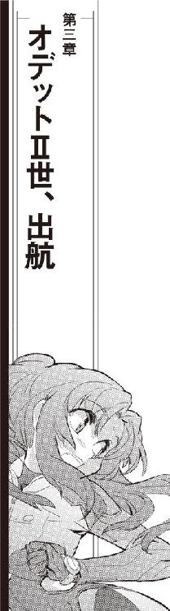

| ミニスカ宇宙海賊 11 モーレツ時間海賊 | |
| 笹本祐一 | |
| 朝日新聞出版 (2014) | |
ミーサは訝しげに茉莉香の顔を見直した。
「それも、独立戦争当時の？」
「うん......」
茉莉香は、自信無さそうな顔で頷いた。
「どこら辺にあるの？」
「んなもん、記録庫にあるに決まってるじゃない。船長権限使えば、弁天丸の記録なんて漁り放題よ」
ブリッジを見廻して、ミーサは思い出したように付け加えた。
「あ、もちろん乗組員のプライベート領域は別だけど。なに？ そういうの見たいっていうの？ いい趣味じゃないわよ」
「ちがうってば」
茉莉香はあわてて両手を振った。
「宗主星相手に独立戦争やってたときの、戦闘記録、公式な奴だけでいいの」
「なら、そんなに探すの難しくないはずだけど」
オブザーバー席のコンソールにシートを廻して、ミーサはコンソールを叩きはじめた。
「あなたの学校の下の艦隊司令部があるじゃない」
「ええー？」
「独立戦争当時の公式な記録なら、立ち入り禁止の戦争遺跡には入り込まなくたって、星系軍の公文書館に全部揃ってるでしょ。海明星の市民がそんな昔の戦闘記録調べるのに、どうせ制限なんかないでしょうに」
宗主星を相手に戦った独立戦争は、植民星連合に加盟していた全ての惑星にとって大切な歴史である。百年以上も昔の戦闘記録はとっくに機密も解除され、市民なら閲覧に制限はない。
「公文書館ならもう最初に調べたって」
茉莉香はオブザーバー席の後ろから表示を覗き込んだ。
「公開記録なら部室からでもアクセス出来るもん」
「なかったの？」
キーボードを叩きながら、ミーサは訊いた。
「私掠船免状発行されてる海賊船は、独立戦争中は軍艦扱いよ。戦闘記録だけじゃなくて航海日誌だって公開されてるはずだけど？」
「そうよねえ」
茉莉香は重苦しい顔で溜息を吐いた。
「そう思ったんだけどさあ、ろくな記録に当たらなかったのよ」
「え？」
ミーサは手を止めた。茉莉香は説明を続けた。
「戦闘記録なのに日時と戦果だけしか載ってないとか、食事のメニューしか載ってない航海日誌しか見つからなかったの。司令部かそれとも公文書館の検閲かなんかでカットされたのか、それともどこかでデータの欠損でもあったのかと思って、で、おおもとの弁天丸なら確実に戦闘記録が残っているはずだから」
電子記録が原子のひとつひとつに情報を刻印する理論限界値を達成して久しい。宇宙船は、その長い寿命の全ての記録を保持するのに記録庫のほんの一部分しか必要としない。
「それは、たぶん、あれね」
ミーサは、ぽつん、ぽつんとコントロール・パネルを叩きはじめた。
「検閲とかデータ欠損とかそういう話じゃなくて、たぶん、船長と乗組員の怠慢ってやつじゃないかしら」
「ええー？」
「はい、独立戦争末期のころの航海日誌」
ミーサは、ディスプレイ上に長年書き継がれている弁天丸の航海日誌を呼び出した。
「ここで読む？」
「船長席に転送して」
茉莉香はひらりと船長席に飛び上がった。サブモニターに転送された文書ファイルをメインディスプレイに開く。
すかすかの航海日誌が映し出された。
「あらー......」
日付と三食のメニューしか並んでいない航海日誌を見て、茉莉香は声を上げた。
「なにこれ、現在位置も抜けてるときの方が多いじゃない！」
「海賊の航海日誌なんてそんなもんよ」
ミーサはオブザーバー席のコンソールを閉じはじめた。
「軍艦にも商船にも乗れないような半端者が、まともな航海日誌なんか付けてると思う？」
「みいさあああ」
「冗談はともかく」
恨みがましい視線を向ける茉莉香に、ミーサは笑って立ち上がった。
「ほんとのところは、航海日誌付けてる時間も惜しいほどの重労働だったんでしょうね。海賊船なんていったら、今も昔も足りてない乗組員で休む間もない仕事漬けってのが普通だったから」
「ああ......」
船長になってからの茉莉香のいちばん大変な仕事は、航海日誌の執筆である。時間ごとの現在位置や進行中の仕事の状況など、記入しなければならない事項はテンプレート化されているものが大部分だが、どれだけやっても慣れた気がしない。
「戦闘記録どころか戦果報告も文書にする間が惜しくて口頭で報告があっただけとか、その時はもう次の仕事が同時並行で三つくらい走ってるなんてのが普通の状況だったみたいだからねえ」
「ああ......」
茉莉香は暗い顔で頷いた。
「どうする？ レコーダーなら手抜きしないで全部記録されてるわよ」
レコーダーには戦闘時、航行時、入港時を問わず船体の状況が時系列順に逐一記録されている。理論限界の達成によって記憶容量がほとんど問題にならなくなって以来、宇宙船には建造中に最初にシステムに火が入ったときからの記録が残されているのが普通である。
「いい」
茉莉香はのらない顔で首を振った。
「ひょっとして、独立戦争の頃の海賊船って無加工のレコードデータそのまんま戦闘記録ですって提出してたの？」
「それもしてなかったんじゃないかなあ」
ミーサはもっともらしい顔で首を振ってみせた。
「だって、少なくとも提出されたら受け取った星系軍の方は記録を残してると思うから」
「ああ......」
茉莉香は考えながら頷いた。
「独立戦争末期なんて忙しい時期に、正規軍だけでも手一杯の司令部が海賊船の戦闘記録から読みやすいようにレポート作成なんて、それが必要な事情でもなきゃやるわけないか」
「どうしたの？」
ミーサは船長席に沈み込んだ茉莉香を見上げた。
「今頃になって独立戦争末期の戦闘記録見たいなんて、歴史の宿題でも出たの？」
「うん、まあ、だいたいそんなようなもん」
茉莉香はあいまいに答えた。
「ヨット部の前の部長さんから、独立戦争当時の弁天丸の戦闘記録がもし見られるなら見せてって頼まれて」
「ふうん？」
ミーサは興味深げに腕を組んだ。
「前の部長さんって言ったら、宇宙大学に行ったっていう才媛でしょ。すごいじゃない」
「いやまあ、すごいんだけど、いろいろと」
はっと気付いて、バックレストから身を起こした茉莉香はミーサに向き直った。
「ねえ、他の海賊船の戦闘記録見せて貰えないかなあ？」
「独立戦争当時の戦闘記録なら、そりゃあんまり問題なく見せてくれると思うけど」
ミーサは、試すように茉莉香を見返した。
「でも、公文書館の戦闘記録以上のものが出てくるかしら？」
バルバルーサのケンジョー・クリハラ船長はじめ顔見知りの海賊船の首脳部を思い浮かべて、茉莉香は再び船長席に沈み込んだ。
「独立戦争の時の海賊船乗組員は知らないけれど、たぶんうちとおんなじような状況かあ」
「そろそろいいかい？」
舵輪を握るケインが船長席に声をかけた。
「もうすぐご注文の空域だ。お仕事の時間だぜ」
「はあい」
船長席に座り直して、茉莉香はディスプレイを見廻した。複数のセンサーに反応が出ている。
「これで間違いない？」
見やすいようにまとめた観測データを船長席に廻したクーリエが振り返って訊いた。茉莉香は、ディスプレイに表示された空間座標を確認した。
「合ってる」
続いて、弁天丸の現在位置を確認する。
「たう星との相対位置はあんまり変化なし、海明星からは離れてる、ってことはこの空間擾乱は、たう星由来のものでその座標は海明星じゃなくてたう星の公転周期と一致してるってこと？」
「ご名答」
クーリエはコントロール・パネルを叩いた。
「まあ、内惑星系の空間擾乱っていったら、だいたい近所にあるいちばん大きな重力源の影響もろに受けるものだからね」
茉莉香がオデットⅡ世から持ってきた観測データと、弁天丸で得られている最新データを付き合わせる。
「でも、どうやら活動のピークは過ぎてるみたい。前に見たときには向こう側の星座の形も歪んで見えるくらいだったのに、今じゃセンサーで確認するのが精一杯」
クーリエは速いテンポで観測結果を切り換えていく。
「わざわざ海賊船に観測頼むほど重要な空間異常じゃないと思うけどね」
「ただの空間擾乱なら、こんなに長期維持されるはずがない」
航法席のルカが目の前の水晶球に手を置いたまま言った。
「なんらかの原因で異常を起こすだけのエネルギーが空間の一点に集中したとしても、それはいずれ放射拡散して消えてしまうはず。弱くなっているとはいえ、こんなに簡単に発見され規模を保持出来るはずがない」
「それはその通りなんだけど」
クーリエは、ひととおり揃えたデータを見廻した。
「よっぽどおかしな空間異常じゃなきゃ、わざわざ正規ルートで報酬付きの調査依頼が来るはずないじゃない」
オブザーバー席のミーサが、コントロール・パネルに指を滑らせた。
「見てご覧なさい、この空間異常の登録番号。オデットⅡ世が見つけたときは仮ナンバーだったのが、いつのまにか正式な番号まで振られて記号も増えてる」
茉莉香は、空間異常に付与される登録番号を見直した。オデットⅡ世が管制局に報告したときには、銀河標準暦の年号に発見場所であるたう星系を示す略号と、今年度当初からの通し番号しか振られていなかったはずの登録番号に、いろいろと見覚えのない符合が追加されたり削られたりしている。
「ほんとだ」
茉莉香は、見覚えのある並びになったような気がする空間異常の接頭の略号を頭の中で翻訳してみた。
「......ってことは、この空間異常、たう星じゃなくて銀河帝国の航路管制局に登録されちゃったってこと!?」
「どおりで、管制局の仕事にしちゃ気前がいいと思ったぜ」
操舵席のケインは神妙な顔つきでセンサーのデータを見ている。
「スポンサーが星系政府じゃなくて帝国とは、この空間異常、そんな大物なのか？」
「現状じゃそうは見えないけど」
クーリエは、コントロール・パネルを引っかき回した。
「それじゃあ、オーダー通りもうちょっとかっちりした調査はじめましょうか」
「観測プローブは全基設置用意完了している」
戦闘指揮席のシュニッツァーが告げた。
「了解」
茉莉香は船長席で頷いた。
「それじゃ、予定通り空間擾乱を囲むように観測プローブを置きに行きましょう。全部で八基？」
茉莉香は、ディスプレイに表示された調査計画を見直した。
「最低四基あればデータ揃えられるんじゃないの？ ずいぶんぜーたくね」
「観測ポイント増やせばそれだけ精度上がるもの」
クーリエは、最新のデータをもとに修正した八基のプローブの配置予定を出した。
「支払いがいいスポンサーは仕事の出来にもうるさいわよ。ケイン、設置ポイントは正確にね」
「あいよ！」
ケインは舵輪を握る手に力を込めた。機関席の三代目が船長席に振り返って親指を上げてみせた。
「弁天丸発進準備完了！」
「それじゃあ、行きましょう」
茉莉香は命令した。
「弁天丸、発進！」
宇宙大学は、宇宙に最初に誕生した知性が得た知識を記録として残そうとしたときにはじまったと言われている。
それが、この宇宙に最初に誕生した生命体なのか、それとも最初の知性体なのか、それまでにいくつの文明が発生し、どの段階まで進化して滅びたのか、確たる記録はない。確実なのは、知性を記録として残そうとした種族が星を渡る術を心得ていたということ、可能な限り長期間に渡って記録が保存されるようにありとあらゆる手段を尽くそうとしたことである。
最初の宇宙大学は、その星でもっとも古い大陸に建設されたという。星を渡る術を得た最初の知性体は、次により確実な記録の保存を追究してその予備を宇宙空間に置くことにした。
惑星上の建造物は、どれだけ厳重に防護しても天変地異から逃れることは出来ない。惑星間空間に置かれた記録は地上のそれよりもはるかに長い時間を生き延びることが期待されたが、それとて母恒星の寿命とともに失われることが予想された。
恒星間空間なら、さらに長期に渡る安定した環境が期待出来る。
そのため、当時の技術でもっとも堅牢に建造された恒星間宇宙船は、記録を保全するというその目的のためだけに超光速技術もなしに恒星間に送り出された。
最初に宇宙大学を作った知性体の期待通り、バックアップとして送り出された記録保存のための宇宙船はその役目を忠実に果たした。戦乱その他の理由で、惑星上に作られた宇宙大学をはじめとする学術機関が滅びても、星間空間にある記録船がそのたびに復活の手助けをしたという。
最初にそれを作った知性体の滅亡すら乗り越えた記録船が再発見されたとき、それは一隻ではなく何隻もの船団となっていた。また、同じ記録を持つ船団が他にもいくつか飛んでいるらしいことも確認された。
記録船団を発見したのは、単一種ではなく数種類の知性体による共同体だった。確認出来る歴史の中でもっとも古いゆるやかな連合、いくつもの古い星間国家体制のルーツともなり、いまある銀河帝国の源流ともなった共同体は再発見された記録船団の扱いを新しく統合された学術研究機関に委ねた。
複数の星系で発生し、星を渡るまでに発達した星間文明の最高学府やシンクタンクを統合する形で出来上がった学術研究機関は、当初その名前すら統一されていなかったという。星間文明の政治的利害関係を無視出来る立場を与えられた機関は、再発見された記録船団に敬意を払ってそれを作った結社の名、宇宙大学を継承した。
安定したスペクトルＧ型恒星を母星として、生存可能域に三つの惑星を持ちながら固有の文明が発生していなかった星系を選んで、宇宙大学が設置された。以後、帝国より古い宇宙大学は天の川銀河最古にして最高の学術機関として途切れることのない歴史を刻み続けている。
ユニバー星系第四惑星、古典神話の言語を司る神の名からタニアと呼ばれている星は開発当初の姿を残す最古の開発惑星である。静止軌道上に人工の輪を持ち、赤道上の二点に建設された軌道エレベーターで宇宙と結ばれたタニアは、海の多い自然に恵まれた惑星である。
巨大な戦乱も興亡も経験していない、にもかかわらず万年単位の歴史を持つ開発惑星の風景をジェニー・ドリトルは想像出来ていなかった。歴史は何世代も重なる知性体の営みにより建設されるものであり、管理され、隔離された場所で作られる歴史は開拓星出身の彼女の想像の埒外にあった。
タニアには四つの大陸と多島海がある。地軸が母星に対してそれほど傾いておらず、また軌道もほぼ真円なため、気候は安定している。環境維持のために惑星軌道制御、気候制御まで施されたタニアには十数万年に及ぶ長い歴史を持つ古い都市がいくつもある。
宇宙大学に入学した新入生は、希望、適性などによって三つの惑星の様々な場所に振り分けられる。ジェニー・ドリトルは、新入生がもっとも多く入るタニアでもっとも古い、巨大な記録庫を中心に建設されたアカシアという都市で大学生活を開始していた。
アカシアは、巨大な記録庫を中央に置き、その周囲に維持運用に必要な施設を配置して設計された、現存する最古の計画都市である。宇宙大学より古い星も都市も宇宙にはあるが、そのどれもが軍事の必要、商業の要請によって開発発展したものである。最初から情報都市として計画され、その目的のままに維持発展している街は他にない。
巨大な円錐状の塔、その形状から大樹とも山とも呼ばれる記録庫のまわりに、維持運用に必要な施設が建造された。
中心にある巨大な記録庫は、実質的に巨大な情報工場である。
記録庫の建設が決定された時点で、すでに保存すべきフォーマットは多岐に渡っていた。文字ですら古代の碑や木簡、植物の葉や動物の皮、それを加工した紙に記されたものだけではない。紐の結び方、布の織り方、折り紙など素材を加工することによって表現される記録もあり、また口伝として記憶によってのみ伝承されているもの、絵画や彫刻など文字によらない記録もいくらでも存在する。
ひとつの言語は複数の文字体系を持つことが普通だし、それも経年により変化していく。また、技術の進歩や環境の変化により記録媒体や規格が変化していくことも普遍的に見られる。
全宇宙の全ての記録を保管し、閲覧出来る体制を保持し続けるという記録庫の理念により、そこは当初構想の図書館ではなく最新技術による情報工場となった。様々な形態、様式の記録を集積し、常時閲覧可能な状況に置き続けるためには、全ての所蔵記録を常に最新のフォーマットに翻訳して出力し続ける体制を維持しなければならない。都市は、将来の発展の余裕を見越して充分な広さと余裕を持って計画的に建設された。
しかし、街として動き始めて万年単位の年月は、その余裕を食い潰すのに充分だった。
宇宙大学の教授や技官、研究員などが居住する官舎は、旧市街の外縁部に作られた。巨人的スケールで作られた人工の山を中心とするアカシア中央部に比べれば、高層でも巨大でもない石作りの官舎が立ち並ぶ官舎街は古い田園都市にしか見えない。
生徒の成績、順位付けを職業とする住人が多く住んでいるため、特に教師や教授たちが多く住む官舎街は閻魔横丁の別名で知られていた。ジェニーは、その中でも特に勤務期間の長い教授たちが多く住む地獄の一丁目と呼ばれる区画を見廻した。
古色蒼然とした石造りの二階建て、三階建ての居住用建築は、玄関や窓の場所など最低限の共通点しかない集合住宅である。壁も居住者の趣味によって奇天烈な色で塗られてまわりから浮き上がっていたり特殊な表面処理をされて沈んでいたり、一軒ごとの庭は区切られて手入れされているものも、区切りもなしにほったらかされているものも様々である。なにに使うのかもわからない機材が山のように積み上げられていたり、玄関前で首輪も柵もなしに、ドラゴンが身体を丸めて寝息を立てている家もある。
建材と同じ摩耗しない石で作られた歩道や、滑走路にも使えそうなまっすぐな車道には、人力・自動含めた様々な乗り物が駐車したり擱座したり放り出されたりしている。
「まあ、地獄の教授陣相手に犯罪しようなんて身の程知らずだったら、そもそもここまで入ってこれないか」
携帯情報端末を手に地獄の一丁目を歩いていったジェニーは、蔦に覆われた古い官舎の前で脚を止めた。宅配ボックスに表示されている数字や記号を確認する必要もない。車道には、教授用の駐車場で見掛けたスポーツタイプのコミューターも駐車している。前時代の蒸気機関車や翼を畳んだ内燃式推進器のはばたき飛行機に比べれば、レーサーじみた目立つ色とはいえ、車輪をもつコミューターは却って普通のものに見える。
ジェニーは、あまり手入れのされていない庭の奥に続く舗道の先の官舎のドアを見た。古い建物に相応しい玄関まわりには、近代的な電子機器がいっさい見えない。
玄関ドアには、教授の研究室のドアと同じ古い紋章が飾られていた。かつて教授と同じ惑星に棲息していたと伝えられる長い牙の肉食獣の頭と、その下にぶっちがいに重ねられた曲刀と曲がりくねった杖。黒い古木のレリーフが表現しているのは肉食獣の勇猛さと曲刀の力、そして杖による知恵だそうだが、ジェニーはその解説がどこまで正確なのか確認もしていない。
玄関の前に立ったジェニーは、もう一度辺りを見廻した。長い牙を持つ肉食獣の口が、重い金属環をくわえているのに気付く。金属環の下部には、重ねられた杖と曲刀のレリーフを支えるような瘤が付き出していて、何度も叩かれたあとがある。
ジェニーがその使い方を思い出すのにしばらくかかった。
「ノッカーってやつだ。うわ、実用に使われてるのはじめて見た」
肉食獣の口がくわえる重い金属環に手を掛け、手前に持ち上げる。瘤に打ち付けると、予想より重い金属音が鐘のように響いた。
しばらく待って、もう一度くらい叩いた方がいいかどうか考えているとどこからかくぐもった声がした。
『はい、どなた？』
ジェニーはもう一度玄関を見まわした。どんなセキュリティシステムが隠されていても不思議はないが、聞こえた声は機械的に再生されたものとは思えなかった。
「一年生の、ジェニー・ドリトルです」
ジェニーは、用意していた台詞を口にした。
「アテナ・サキュラー教授にお会いしに来ました」
『ああ、あなたね』
ジェニーは、声が聞こえてくる場所を見つけた。ドアの横に古びた漏斗が横向きに取り付けられており、錆びた色のパイプがどこかに続いている。
『鍵は開いているわ。入ってらっしゃい』
事前にメッセージを出して訪問スケジュールを確定しておいた甲斐はあったらしい。ジェニーは、ドアが開くのを待った。
『ああ、念のために言うけど、ドアはあなたの手で開けて。目の前、ドアの左側にレバーがあるでしょう。それを押し下げれば開くわ』
「自動じゃないんだ」
呟いて、ジェニーは、大きな玄関ドアの片隅に取り付けられていた骨董品のような大きなレバーに手を掛けてみた。古い、重い機構を動かす手応えとともにドアロックが解除される。
ジェニーは、重い、大きなドアを開いた。中は、骨董屋だった。
『まっすぐ入ってきて、奥の右の部屋にいるから』
玄関の漏斗からくぐもった声が聞こえてきた。
『年代物が多いから、周りのものになんか引っ掛けたりしないように気を付けてね』
「はい」
答えて、ジェニーは担当教授の官舎に足を踏み入れた。
宇宙大学に入学を許された新入生は、希望と基礎教養によって様々な学部の課程に割り振られる。また、追究したい学問を自分で選択することも出来る。
経済学部に入学したジェニーは、専門外の選択科目に銀河文明史を選んだ。もとより歴史に興味があり、好きで調べたりしていたから基礎教養程度の学力は持っているつもりだったのである。
しかし、初回生であるジェニーの担当教授になったアテナ・サキュラーは、地元高校一の優等生である新人大学生の自信を簡単に打ち砕いた。それが、ディテールに凝り固まった知識の量以外の評価軸を持たなかった新入生の再教育に必要な課程だと、頭では理解しても感情では納得出来ず、ジェニーは大学での当面の仮想敵を、帝国貴族で長命種とのうわさがある担当教授に設定したのである。
勝利条件は、アテナ・サキュラー教授に自分が理解力のある生徒だと認めさせること。そのつもりで一度海明星に帰ったジェニーは、しかし別な疑問を持って宇宙大学に戻ってきた。
最新の情報機器が揃えられている研究室と違って、アテナ教授の自宅の書斎は歴史劇の映画で見るような古典的なインテリアで埋められていた。壁に備えつけられている照明機器も、ガラス製のホヤの中の明るい炎が不規則にゆらめいているのを見ると、ガスライトらしい。
「散らかっててごめんなさいね」
壁に向けた巨大なデスクにも古い書物や骨董品が積み上げられていた。アテナは、それだけは新しそうな事務椅子を廻してジェニーに向き直った。貼り込まれたメモや画像カードやプリントアウトだらけの壁際に、フレキシブルチューブに繋がれた漏斗が揺れている。
「実家が厄介払いのつもりで、次から次へと古道具送ってくるのよ。そろそろまた業者に引き取って貰わなきゃとは思ってるんだけど」
「実家って......」
長命種となれば溜っていく遺物の数は寿命の分だけ増えていくだろう。想像しかけて、ジェニーは頭を振った。
「どうぞ」
自動サポート付きの事務椅子から立ち上がったアテナは、擦り切れた絨毯の上に置いてある時代も型式もばらばらのいくつかの椅子を指した。化石化したように見える大きな切り株は、ランプや酒瓶らしいもの、ドリンクポットが載せられているところを見るとテーブル代わりに使われているらしい。ジェニーは、凝った彫刻で飾られた百年ものくらいにしか見えない比較的新しい背もたれの低い椅子に腰を下ろした。白凰女学院でも総督府時代から使われている古い家具でしか見たことがないクラシックスタイルのクッションは、見た目より柔らかく沈み込んでジェニーを受け止めた。
「それで、なに？」
デスクに事務椅子の背を向けたまま、教授は質問した。
「わざわざうちに来てまで聞きたいこと、って？」
「時間旅行？」
教授の灰色の瞳がジェニーを射た。
「なんの話？」
「文字通りの意味です」
ジェニーは、いままでに会ったことがある長命種に関する記憶と予備知識を総動員して会話を続けた。
「現在から、過去あるいは未来の任意の時代に移動する、時間旅行です」
教授はしげしげとジェニーの顔を見直した。
「一方向に流れる時間流を飛び出すことは出来ないわ。物理学の初歩で習わなかったの？」
「かつては核融合も超光速も不可能とされていました」
ジェニーは、用意してきた論旨の展開を開始した。
「わたしのいた星では、たとえわずかであったとしても可能性が残されている限り、それを否定するような教育は行われていませんでした」
「褒められた教育方針じゃないわね」
アテナは正直な所感を口にした。
「出来ないはずのことを出来ないって教えたところで、それを信じないものはいつだっている。希にそんなものたちが不可能だったことを可能にすることもあるけれど、教育っていうのはそんなまぐれ当たりを期待して行うものじゃないわ」
「教授の教育方針についてはわかりました」
どんな表情や仕草からでもなんらかの情報を得ることが出来る。ジェニーはアテナから目を離さない。
「それで、質問には答えて頂けるんでしょうか？」
「時間旅行が可能かってこと？」
「いえ」
じっと教授の目を見たまま、ジェニーは質問した。
「宇宙大学では、時間旅行のための研究は行われていますか？」
ひとつの星系まるごと、可住惑星だけでも三つ、宇宙都市やコロニーまで合わせれば惑星間空間に数百の施設を持つ宇宙大学で現在進行中の研究テーマは億単位と言われている。そのすべてが一介の学生にまで公開されているわけでもないし、新入生のジェニー・ドリトルがリストを目に出来るテーマはそのうちのほんの一部でしかない。
「なんでそんなことを思い付いたの？」
不意に、教授の目がいままで見たこともなかったような色を帯びた。
「やり直したい過去でも出来た？」
それまでに一度も聞いたことがなかっただけに、ジェニーはそれが冗談だと気付くのが一瞬遅れた。
「ええ、やり直したい過去ならリストにして提出出来るくらい揃ってます」
うまく表情を作れたかどうか自信がない。笑みを浮かべているつもりで、ジェニーは応えた。
「でも、自分の人生は自分で始末を付けます。時間旅行について質問しているのは、そんな理由じゃありません」
「それじゃまた、なぜ？」
「超光速が実用化され、宇宙船でも情報でも光速を越えて届けられるようになった今の宇宙で、最後に残されたテーマが時間旅行なんじゃないですか？」
どんな細かい情報も見逃さないように、ジェニーは教授の顔を見つめたまま質問した。
「銀河最高の学究機関で、それが研究されていないと考える理由はありません」
「わたしは歴史学者よ」
生徒から目を逸らさずに、アテナは答えた。
「残念ながら空間物理も量子時間も専門じゃないわ。そういう質問は理学のコンダクターにするのが適当じゃないかしら？」
「時間旅行に関する研究開発は、一般に公表されている宇宙大学の研究テーマにはありません」
ジェニーは答えた。
「初回生であるわたしに、公表されていない研究テーマの存在や詳細がすんなり教えて貰えるとは思っていません。知性にはそれに相応しい資格が必要、って入学式で聞きましたけど」
「自分の位置はわかってるってことね」
アテナはわずかに首を傾げてジェニーを見やった。
「公式に答えるなら、もちろんあなたの質問に対する答えはノーなのだけれど、でも答える前に聞いてあげる。なんで、歴史学者に時間旅行のことなんか訊く気になったの？」
ジェニーは、自分の思考の道筋を思い出すように考えた。口を開く。
「たぶん、宇宙大学の中で教授がいちばんわたしの知りたい答えに近いところにいる、と考えました」
「あなたの知りたい答えは、理学の研究所にあるのじゃないかしら？」
「宇宙大学に入ったばかり、しかもなんの成果も挙げていない初回生が、公表されていない研究テーマを質問したからって教えて貰えるほど、宇宙大学が簡単な場所でないことはわかっているつもりです」
「それじゃあなぜ専門外の歴史学者にそれを訊くの？」
「もし、本当に時間旅行の実用化を考えるなら、検証が必要になると考えたからです」
ジェニーは注意深く教授の表情変化を伺いながら続けた。
「もし時間旅行に関する研究が行われているなら、それに関する綿密な可能性と検証が行われるはずです。そして、時間旅行が実用化されるとしたら最大の利点を得るのは歴史学。まだそれが理論的な検討段階にしかないとしても、歴史学からの参加が求められているはずだと考えました」
「確認前の推論としては筋は通ってるわね」
アテナは、インターフェイス付きのヘッドセットを外してデスクに置いた。
「いらっしゃい。おもしろいもの見せてあげる」
書斎から出たアテナは、まっすぐトイレに向かった。ジェニーは念のために確認した。
「おもしろいものって、トイレですか？」
「いいえ。ちょっと時間がかかるから、そのための準備よ」
アテナのコミューターは大型のスポーツタイプだった。誘われるままにウェッジシェイプの低い車体に乗り込んだジェニーは、運転席の前の必要以上に大仰なコントロール・パネルとシート両サイドのスティックを見て、慣れた手付きでシートベルトを締める教授の横顔を見直した。
「ただの車じゃありませんね？」
「そうね。乗り物酔いはする方？」
「いいえ」
答えながら、ジェニーは教授にならって体形サポートシステム付きのバケットシートのベルトを念入りに締めた。アテナはメインスイッチを入れてシステムを立ち上げる。運転席のまわりに色とりどりのコントロール・パネルの表示が立ち上がる。
「それは、よかった」
フレキシブルアームで前方に開いていたグラスルーフのキャノピーが閉じる。ジェニーは、窓もボディも通常のコミューターよりはるかに分厚く作られていることに気付いた。
ディスプレイの表示を確認したアテナは、右側の運転席の両サイドのコントロールスティックに両手を置いた。ジェニーは発進加速を予想して身構えた。
予想に反して、アテナはスムーズな操作でコミューターを発進させた。オートドライブも完備されている居住区をスムーズな全手動の運転で抜け出し、旧居住区に直結されているハイウェイに乗る。
ハイウェイに乗っても、アテナの運転は安全確実なままだった。手動運転のまま流れる車線に乗って郊外へのルートを取る。
行き先を質問しないためには意志力が必要だった。ジェニーは屋根まで素通しの車内から見える古代都市のフリーウェイの風景ではなく、通常のコミューターでは考えられないほど多様な情報が映し出されている運転席のまわりを見た。
立体表示の多くは、周囲だけではなく上空にまで及ぶ交通状況、現在位置、動力系の運転状況などを映し出している。ジェニーは、それが地上を走るコミューターではなく飛行機の表示であることに気付いた。
予告もなしに、コミューターがふわりと浮び上がった。ジェニーは平静を装うのに苦労した。
強力な反重力システムが働いているのか、急上昇する車内で加重はまったく感じない。低層雲をいくつか追い越しても、与圧されているのか車内の気圧も変わらない。空に軸線を向けたまま、コミューターは速度と高度をみるみる上げていく。
一般に大気圏内で運用される乗り物は、特定の目的に使われるものを例外として慣性制御や反重力を備えるものは少ない。
ジェニーは、運転席側のディスプレイを盗み見た。簡単に音速を越えた速度計は、さらなる加速を続けていることを示している。海明星と同じ青空が、鈍く黒い色に変わりつつある。
「外ですか？」
「そうよ」
アテナは、助手席のジェニーにちらりと目を走らせた。
「輸送会社の家、高校でヨット部の部長だったのも伊達じゃないみたいね。もう少し驚くかと思ったのに」
「驚いてます」
ジェニーは、コミューターの車内を見廻しながら答えた。四座席のスポーツタイプ、運転席まわりのディスプレイこそ過剰表示で操縦系も通常のコミューターとは違うが、他はちょっと念入りに改造されたコミューターにしか見えない。
「こんな小さな機体が、まさか軌道にまで上がれるなんて」
運転席でコントロールスティックを握る教授のくちもとが微笑んだようだった。
「外に慣れてる生徒でよかったわ。いろいろ説明が省略出来るから」
「驚きました」
ジェニーは本心から言った。
「軌道上に進出するどころか、惑星間空間までこんな簡単に飛べるなんて」
運転席の教授のくちもとは笑っている。
「まさか、超光速まで出来るんじゃないですよね？」
「さあ？」
遮光シールドで何重にも保護された車窓の外には、ユニバー星系の母星であるユニバーＧｓ１がゆっくり沸き立ちながら流れていく恒星表面を見せている。ユニバー星系で恒星に最も近い第一惑星セゾンよりも内側、ユニバーＧｓ１のほとんど直上といえる距離にまでコミューターは接近していた。
タニアの成層圏を抜け、宇宙空間と呼べる場所まで上昇しても、アテナはコミューターの加速を緩めなかった。慣性制御システムのおかげで加速は感じられないから、速度は表示される数字で読み取るしかない。隠す気もないらしく、運転席のアテナは助手席側のディスプレイを立ち上げて航行表示を映し出した。
低軌道高度を越えて、アテナはコミューターをさらに加速させた。軌道速度をとっくに越えても加速を続ける教授を見て、ジェニーは目的地がタニア周回軌道上の中継ステーションではなくさらにその先にあるものと推測した。
ジェニーの推測は半ば当たり、半ば外れた。当たったのはコミューターが目指したのが中継ステーションよりさらに遠かったこと、外れたのは、目的地が小さなコミューター一台で内惑星軌道を三つも越えた恒星直上だったことである。
コントロールスティックを握るアテナがやっとコミューターを減速させはじめたのは、二つ目の内惑星軌道を越えてからだった。ジェニーは、その全行程で加速と減速を連続できる大容量の慣性制御システムがコミューターのどこに搭載されているのか考えて気が遠くなった。
恒星ユニバーＧｓ１に接近するにつれて、車窓は防護のために遮蔽色を強めた。見えていた星が見えなくなり、恒星表面のコロナが見分けられるようになったが、車内環境はタニア地表にいたときと変わらない。
黄道面からユニバーＧｓ１に接近したアテナは、恒星の北極側に進路を取った。恒星の直上、ちょっと大きなフレアが発生したら舐められそうな至近距離に、光る巨大な蜘蛛のような黄金色の構造物が見えた。
「見せたかったのはあれよ」
人工重力が働いたままの車内で、アテナは進路上の金色の宇宙構造物を指した。
「高エネルギー粒子研究ステーション。ユニバーの至近で有り余る恒星のエネルギーを使って高粒子生成と消滅のプロセスを繰り返している研究ステーション」
「恒星規模の高エネルギー研究所......」
ジェニーは教授の説明を繰り返した。ガス状巨大惑星の周回軌道上に作られた巨大な加速器を本体とするエネルギー研究所の存在は知っているが、恒星規模のものははじめてである。
「金色なのは、それが一番熱反射に優れているから。恒星の至近に置かれているのは、有り余るエネルギーが使えるからって理由だったけど、恒星の活動に影響を与えるほどのエネルギーを汲み出すわけに行かないから、もっと大きな、少しくらい無茶しても星系の周りに影響が出ないような場所に移転して、ここは恒星制御用に残すって話もあるけど」
「星ひとつ分のエネルギーでも足りないんですか」
ジェニーは茫然と呟いた。
「質問は、宇宙大学で時間旅行に関する研究が行われているかどうか、だったわね」
アテナは、恒星ユニバーの北極点直上に設置されているステーションを眼下に見ながらゆっくりとコミューターを旋回させている。
「答えは、行われている、よ」
ジェニーは声もなく恒星直上の研究ステーションを見つめた。
「ただし、今現在進められている実験は、過去に向かって情報を送り届ける程度のごく初歩的なもの」
「過去への情報伝達、ですか？」
ジェニーは、想像していたよりずっと控えめな実験内容を繰り返した。
「そう。超光速通信を使えば、タイムラグなしに全宇宙に情報を届けられる。でも、発信時間より前に情報を届けることは出来ない。それが常識よね」
「ええ」
「超光速航法は、超次元空間を経由することで空間的な距離そのままの飛行を回避する方法だけれども、もう少し高等なイカサマをすることによって時間的な制約を回避する」
運転席のアテナが笑った。
「超次元宇宙論の先生はもう少し専門的な説明をしてくれたけど、要約すればそういうことなんだそうよ。ただし、時間的制約は空間的制約よりも次元が違うっていうレベルで厳しくて微妙みたいで、今の段階では物体をタイムトラベルさせるような段階じゃなくて、簡単な情報を過去に送るものだそうよ」
「はあ」
「今の目標は、五秒前の過去に単純な信号を送ることですって」
「たった五秒？ ですか？」
「わたしもそう聞いたわ。肯定か否定か、そんな単純な信号をたった五秒前に送ることも出来ないのかって。そうしたら、一瞬でもいいから時間を止められるかって聞き返されたわ。光速航行で見かけの時間を停止させるんじゃなくて、今こうして流れている時間を一瞬でも停止させるには計算上全宇宙の質量に相当するエネルギーが必要だそうよ」
「......でも」
ちょっと考えて、ジェニーは答えた。
「もし仮に全宇宙の時間を停止させられたとしても、そうしたら我々が認識している時間も止まるはずだから、それはわたしたちにはわからないんじゃないでしょうか」
「観測者のパラドックスって言うそうよ」
アテナは言った。
「我々が三次元空間に生きている以上は、四次元目の正確な方向は感知出来ない。だからこそ、超次元宇宙論で理論補強したイカサマが必要になるそうだけど」
アテナは、助手席の生徒にちらりと目をやった。
「わたしのほうからも、ひとつ質問していいかしら？」
「なんでしょう？」
ジェニーは我知らず身構えた。
「なんで、時間旅行なんてことを思い付いたの？」
ジェニーは、運転席で正面を向いたままのアテナの横顔を見た。
「もし、歴史の研究をするなら、現地調査が最良の方法だろうって考えたんです......噓です」
ジェニーはすぐに打ち消した。
「今までに、いくつか、時間旅行あるいはそれに類するような現象があったんじゃないか、教授ならそれについて詳しくご存知なんじゃないかって考えたんです」
運転席のアテナは、助手席のジェニーに顔を向けた。軽く首を傾げてしばらく見てから、コントロール・パネルに目を戻す。
「この宇宙じゃ、時間はどこでも同じように一様に流れているわけじゃない。それくらいは知ってるわね？」
「はい」
ジェニーは頷いた。速度、重力など様々な要因によって、宇宙で流れる時間は一様ではない。
「今みたいに高エネルギーを使った力任せの跳躍が普通に使えるようになる前、超光速航行は空間のずれや位相差、穴やほころびを探してうまく繋ぎ合わせることで行われていた。空間的に法則を越える移動が可能なら、時間的な移動が不可能だと断じる理由はない」
アテナは、コミューターを旋回させた。恒星に背を向けて加速を開始したらしいが、あいかわらず慣性制御装置が完璧に利いているためにジェニーは自分が動いているように感じられない。
ディスプレイを見ると、コミューターはけっこうな加速を続けていた。タニアへの帰還飛行に入ったらしい。
「特別な秘密を教えてあげる」
冗談めかした言い方に、ジェニーは運転席の教授の横顔を見直した。
「宇宙大学の、最初の形はなんだったか知ってる？」
「知識を運ぶ船団だった、と聞いています」
「その前よ」
帰還軌道をセットして、アテナはコントロールスティックから両手を離した。
「宇宙大学の母体となった記録船団は、いきなり星と星の間に生まれたものじゃないわ。その前、まだ星を渡る術もなかったころ、生まれた星に図書館を作るよりも前の話」
「そんな昔の記録があるんですか!?」
微笑して、アテナは続けた。
「宇宙大学の一番古い源流になったのは、魔法団だったの。天文学の基礎になった占星術、化学の礎となった錬金術、そうした魔法と呼ばれていた技術を失わないように記録、共有出来るようにしたのが、確認出来ないけど一番古い記録なんですって」
「魔法......ですか」
ジェニーは、あまり実用に使ったことのない言葉を口にしてみた。アテナは続けた。
「のちの世で科学と呼ばれるようになる知識の体系は、最初のうち魔法や秘術と呼ばれ、隠され、その使用には厳密な制限が課せられるものだった。それが、整理され、探求され、法則性を発見されて科学として発展していく。一方で一般市民の教育程度が上がり、特定の階級の限られた少人数にしか伝えられなかった真理が、教育として広く伝えられるようになっていく。だいたいどこの文明でも、総数だけじゃなくて教育された個体の数がある程度以上の割合を占めるようになってからでないと、産業革命、情報革命を経て星間文明への階梯を登れないようになってるのよ」
それは、ジェニーも教わった事柄だった。高等教育は文明社会を形成する民族のほんの一部だけでなく、ある程度普遍的に行われるようにならないと発展限界を迎える。それは同時に教育という非生産的行為を大多数相手に行う余裕が社会にあるかどうか、どれだけの無駄を許容できるかどうかにも通じる。
「だから、かつて魔術結社だった宇宙大学は、その最適な形態として教育機関を選んだ」
細かい過程や理論を飛ばして、アテナは結論を口にした。
「時間も資金も力も必要だけど、結局、それが一番確実な手段だと信じることが出来たから。教育はすぐに求める結果を出すことは出来ないけど、でも求める以上の結果も期待出来るから」
「求めた結果が、今の宇宙大学ですか？」
「宇宙大学の形態は手段でしかない。教育も記録も研究も、手段のひとつ。だから、うまく使うことを考えなさい」
「はい」
「タイムトラベルの方法も、時間のもつれを探したり力任せに時間線を歪めたりするだけじゃないのよ。過去の記録を探り、調査分析することによっても過去を知り、学ぶことは出来る」
ジェニーは、運転席の教授の横顔を見た。
「それが、教授が歴史を研究してる理由ですか？」
「それは、理由のひとつでしかないわね。わたしはタイムトラベルがやりたくて歴史をやってる訳じゃないから」
教授は正面を向いたまま言った。
「独立戦争をテーマにしているのよね？」
「はい」
ジェニーは答えた。教授の悪魔のようなと形容される記憶力については何度も聞いている。
「こういうことは例えヒントを与えるだけでもルール違反になるかも知れないから、今からあとのことはわたしの独り言だと思って聞いて」
「はい？」
教授の言葉の意味を理解出来ないまま、ジェニーは聞き返した。
「どんな大仕事もたいがいそうだけど、戦争もはじめるより終わらせる方が難しいの。はじまっちゃえば、当事者同士の都合と思惑による直接、間接的な戦闘の継続だから、政治学的な意味では星に出る前の古代から超光速で行われる現代の戦闘までそれほど違いはない」
「はあ......」
「でも、戦争のはじまりと終わりについては、時代ごとの変遷も当事者同士の都合も密接に関わってくるし、特に終わらせ方については状況の変化と当事者の能力、意思によって結果が千変万化するのよ。もし、戦争について研究するなら、終わらせ方について考えてみるのがいちばん役に立つんじゃないかしら」
ジェニーは、教授の言葉を自分に当てはめて考えてみた。宗主星と植民星連合の独立戦争をテーマに選んだのは、それが自分に一番身近な歴史だからである。そしてもうひとつ、実戦から学べばそれは平時の仕事にも役立つからという理由をジェニーは思い出した。
「研究対象が複雑怪奇に過ぎるかしら？」
「解りました」
ジェニーはにっこり答えた。
「貴重な助言、感謝します」
「はて？」
ランチボックスの調達をクラスメイトのマミに頼んでヨット部部室に来た茉莉香は、首を傾げた。
「どーしたんだろ？」
昼休みの誰もいないヨット部部室、壁の半分を占める旧式な通信システムを前に、うろ覚えの手順をいくつか試してみる。
「なんか間違えたかなあ？」
椅子ごと滑ってテーブルに戻った茉莉香は、置いてあった携帯端末を取り上げた。なんの変哲もない通常の携帯端末に見える通信機は弁天丸の技術スタッフにより軍用技術を投入した大改造を受け、ネットワークを介さずに軌道上の宇宙船と直接交信が可能である。
スタンバイ状態のディスプレイにタッチして、茉莉香は表示を確認した。新しい着信記録も未読のメッセージもない。
さらに首を捻って、茉莉香は壁の通信システムのディスプレイに向き直った。
船長として、乗船勤務がない時にも茉莉香は弁天丸と一日二回の定時連絡を行っていた。午前と夜の一日二回。異常なしを伝える定型文を送るだけのこともあるし、時間に余裕があれば音声通信を掛けることもある。
今日も白凰女学院に登校した茉莉香は、午前中の授業の休み時間に惑星間空間の異常現象を調査中のはずの弁天丸に定時連絡を送った。ところが、即座にあるはずの受信確認が次の休み時間まで待っても返ってこない。携帯端末から直接呼び出しを試した茉莉香は、午前中の授業が終わると同時にヨット部に駆け込み、携帯端末よりも規模も出力も大きな備え付けの通信システムを立ち上げた。
海明星公認の私掠船である弁天丸は、代表連絡先もスタッフ用内線も完備している。しかし、代表連絡先は留守電設定、内線も繋がらない。
茉莉香が船長になってから、弁天丸と連絡が取れなくなったことは二～三回しかない。一度目は逃げ出した猫猿のおかげで茉莉香を除く乗組員の全員が隔離されて弁天丸が空っぽになった時である。
茉莉香が定時連絡を忘れたりよんどころない事情によって遅れたり出来なかったりすることは珍しくないが、多人数が乗り込んでいる弁天丸が受信不能になることはほとんどない。そして、弁天丸と連絡が取れなくなるという事態が意味するものはただひとつだけである。
「非常事態、か......」
忘れている事情や飛ばした手順がないかどうか思い返してみて、茉莉香は呟いた。
弁天丸は、八つの観測プローブを設置した場所で引き続き空間擾乱の観測を続けていたはずである。茉莉香は、通信システムのディスプレイをネットワークに切り換えて天象予報をチェックする。
たう星は安定している。たう星起因の異常警報が発令された記録もない。
「前回はたう星いろいろ不安定だったけど、今回はそんなこともない、と。だとしたら......」
続けて、弁天丸がいたはずの空域を中心になにか普段と違う状況が発生していないかどうか調べてみる。管制局の航路情報、軍の最新情報、報道まで当たってみても、変わったことは何もない。
「ってことは、弁天丸側がなんらかの事情で無線封鎖してる、のかな？」
弁天丸がその気で姿を隠したとすれば、見付け出すのは不可能に近い。
「こっちへの連絡もなしに身を隠す必要が弁天丸にあった......？」
想定出来る事態を口にしてみて、茉莉香はさらに首を捻った。弁天丸がどういう事態に遭ったのか、たう星系にどんな異常事態が発生しているのか、思い付かない。
携帯端末がいきなり呼び出しを鳴らし出した。びくっとして、茉莉香は持ち前の反射神経で通話に出た。
「はい加藤茉莉香です......梨理香さん!?」
思わずディスプレイに表示されている着信先を確認する。新奥浜宇宙港管制局、母である加藤梨理香の勤務先に間違いない。
『そうあわてなくても本物だよ。今朝の朝ご飯は買い置きの糧食にフルーツジュースとヨーグルト』
合い言葉代わりの、最後に一緒に摂った食事のメニューをすらすら言われて、茉莉香はもう一度ディスプレイの通話表示を見直した。通常の電話回線経由である。
「はいはい、えーと、こっちは本人確認しなくていいの？」
高校入学以後、梨理香が学内にいる茉莉香の携帯に電話を掛けてきたことは今までにない。
『通話先の携帯が白凰女学院内にあるのはこっちでも見えてるからね。軌道管制局から、弁天丸船長加藤茉莉香に伝達だ。弁天丸が、行方不明になった』
茉莉香は、もう一度携帯のディスプレイを見直した。新奥浜宇宙港管制局からの電話に間違いない。
深呼吸をして、茉莉香はもう一度携帯を耳に当てた。
「ええと、現在わかっている限りの情報を頂けますか？」
電話の向こうで微笑むような間があった。
『軍の依頼で惑星間の空間異常を調査中だった弁天丸のトランスポンダーが突然消えたんだ。軍の無人哨戒惑星くらいしか目が通らない空域だから細かい状況はわかっていないし、今のところ非常事態でもないだろうって判断で艦隊も動いてない』
「突然消えたって......」
航行中の宇宙船は安全のためトランスポンダーの発信を義務付けられている。しかし、様々な事情によりトランスポンダーの発信を切ることはそれほど珍しい事態ではない。
『哨戒惑星による走査でも、当該空域に弁天丸の船体は確認出来ない。超光速航行を行った形跡もない』
軍が管理している哨戒惑星の配置は均一ではない。内惑星系に厚く、外惑星系に薄く配置されているのは当然として、海明星周辺空域がもっとも密に、その他の空域は粗である。哨戒惑星はそれぞれの軌道によってたう星を公転しており、弁天丸が調査していた空域周辺にはそれほど多くない。
通常航行でなら、トランスポンダーを消した弁天丸が哨戒惑星の目を眩ますことは難しくない。しかし、密度が薄いとはいえ哨戒網を抜けて超光速跳躍することはほとんど不可能である。
『そういうわけで、軍は弁天丸が何か異常事態に遭ったのか、それとも自分の意図で身を隠したのか判断しかねている。確認してみたところ、弁天丸の船長は海明星にいて連絡可能と、ならば次にすることは船長への直接確認になる』
茉莉香は弁天丸が軍から受けた依頼内容を超高速で思い出した。
「弁天丸は、軍の依頼で当該空域の空間異常の調査を続行中です」
はっきりした先の展望もないまま、茉莉香は答えた。
「要請によれば、調査観測は最高度に精密に行われることを求めています。大出力の主機関や、常時発信されるトランスポンダーがエラーになる可能性も否定出来ません」
ほかになにかもっともらしい理由を思いつけるかどうか考えながら、茉莉香は付け加えた。
「もし可能なら、軍にも当該空域の走査を控えるように依頼出来ますか？」
『今現在、弁天丸が見えないのは予定通りの調査観測の一環だってのかい？』
「あたしは、弁天丸船長として乗組員を信頼しています」
茉莉香はお題目を口にした。
「今の弁天丸は海賊行動をしているわけじゃありません。船長が乗っていないからといって、調査観測に制限はないはずです」
『了解した』
茉莉香の予想よりはるかに早く、梨理香はあっさり引き下がった。
『つまり、今の弁天丸は異常な状況にはないし行方不明になったからと言って星系軍に調査を依頼することもないと、そういうことだな』
もし弁天丸に何か問題になるような事態が起きていたら、と考えて、茉莉香は首を振った。
「そうです。もし出来るなら、弁天丸が調査中の空域を進入禁止の要警戒空域に指定してくれれば、調査ももっとスムーズに進むし無用なトラブルも起きないと思うんですけど」
『要警戒空域ねえ』
電話の向こうの梨理香は笑ったようだった。
『幸い今のところは海明星から離れてるとはいえ、内惑星系に進入禁止の要警戒空域なんぞ設定したら各方面からいらん詮索受けるんじゃないかい？』
「あ......」
『今のところ、当該空域は海明星から離れつつある』
空間擾乱は海明星の公転周期ではなく、母星であるたう星の自転周期と一致して移動していることが確認されている。たう星の自転周期は約三〇日、空間異常はたう星の自転とともに海明星から離れ、また接近してくる。
『管制局としちゃ海明星にくるお客さんに空間異常を避けた接近軌道をお薦めするくらいしか出来ないが、それでいいかい？』
管制局が宇宙船の軌道を指定出来るのは海明星近傍空間に限られる。惑星間空間ではそもそも軌道を指定する必要がない。
星系内に入った宇宙船は、目的の星に接近するまでは自分の判断で軌道を選び、飛ぶ。軌道管制局は、トランスポンダーで宇宙船の船籍、固有名、現在位置と速度を確認、必要なら管制を行う。
宇宙船によっては、管制局に軌道設定を任せるものも少なくない。そうした宇宙船に対しては、管制局は最適な安全軌道を指定する。
「充分です」
弁天丸が行方不明になった原因がわからない以上、周辺空域を飛ぶ宇宙船が同じように行方不明になる可能性は否定出来ない。その危険をいくぶんでも排除出来たと思って、茉莉香はほっと答えた。
『それで、弁天丸はいつ頃見えるようになる予定だ？』
当たり前のように、梨理香は核心を衝いた。
「......一週間はかからないと思います」
努めて平静に、茉莉香は答えた。
「出来ればたう星の自転一回分くらいは時間を掛けてゆっくり観測したいところなんですけれど、契約で許されている期間はそれほど長くありませんから」
『一週間？』
梨理香に聞き直されて、茉莉香は素早く都合と理由を計算した。管制空域にトランスポンダーを消した宇宙船が行方不明のままどこかにいる、かも知れない状況は、管制局にとって居心地のいいものではない。
「三日か四日、それくらいだと思います」
なんの成算もないまま、茉莉香は口から出るに任せた。
「それくらい精密観測すれば、いろんなデータが取れると思いますから」
『了解した』
梨理香は答えた。
『それでは、弁天丸のトランスポンダー消失と本体の未確認については空間異常の観測の一環ということで軍と管制局に話を通しておく』
「ありがとうございます」
『そちらからなにか、こちらに伝えることはあるかい？』
相談したいこと、確認したいことが奔流となって溢れ出てくる。深呼吸してから、茉莉香は答えた。
「ありません。なにか必要なことがあれば、最優先で管制局に連絡を取ることを約束します」
『期待してるよ。今日は夕食までには帰れる予定だ。勉強の邪魔して悪かったね、じゃ』
会話が切れた。茉莉香は、しばらく通話先の新奥浜宇宙港管制局の文字が表示された携帯端末のディスプレイを見ていた。
ノックが耳に入って、茉莉香ははっと我に返った。
「ごめん、今出る！」
素早く通信システムの操作記録を消去してシャットダウン手順を開始させてから、茉莉香は鍵を掛けておいた部室のドアに飛んだ。
「へい、お待ち！」
二人分のランチボックスを目の前に提げたマミがドアの外で待っていた。
「どうする？ ここ借りる？ それとも他に行く？」
言われて、茉莉香は部室の中を見返した。シャットダウン手順を終えた通信システムのディスプレイが消えていく。
「外行こ。空見ながらご飯食べたい」
「茉莉香、またあんたなんか悩み事!?」
茉莉香はぎょっとしてマミの顔を見直した。
「なんでわかったの!?」
「だって、昔っからそうじゃない」
マミは開いたドアを押さえて茉莉香を待っている。
「幼稚園の時、一目惚れした新任の先生が実はとっくに結婚してたって解ったときも、小学校の通学路で子猫拾っちゃったときも、外で食べたいって言ってたじゃない」
「あっそ......」
茉莉香は額に拡げた人差し指と親指を当てた。
「嫌なこと覚えてるわね」
「そりゃあ、茉莉香のことだもの。どうなの？ 今回はわたしがなにか相談に乗れること？」
振り返った茉莉香は、室内の機器が完全に消えていることを確認した。
「そいつは業務上の秘密ってやつだなあ」
「そっか、お仕事のことか」
マミは、部室から出てきた茉莉香にランチボックスを渡した。
「屋上？ それとも中庭がいい？」
「中庭に行こ」
ランチボックスを受け取った茉莉香が歩き出した。
「弁天丸が!?」
チアキはもう何度目になるか知れない質問を茉莉香に浴びせた。
「行方不明になった!? あなたそれがどういうことだか解ってるの!?」
「だから、解ってないんだってば」
茉莉香も、もう何度目になるか解らない同じ答えを繰り返した。
「だから、こうやってバルバルーサに協力して貰ってわざわざ弁天丸が最後にいた空域まで調査お付き合い願ってるわけだし」
「空間座標はこれで間違いないのかい？」
船長席のケンジョー・クリハラが、ブリッジ中央の大型立体ディスプレイに星図を投影した。たう星を中心とした内惑星軌道の立体配置、現在位置は海明星からたう星を挟んで反対側になる。
「大丈夫です」
記憶している空間座標の数字と照らし合わせて、茉莉香は大型ディスプレイの立体図を見つめた。戦艦を海賊船に使っているバルバルーサのブリッジは、弁天丸よりもはるかに広い。
「もうそろそろ、弁天丸が配置した観測プローブが見えてくると思うんですけれど」
「これね」
副長席のノーラが、立体ディスプレイの軌道図に八つの輝点を重ねた。
「トランスポンダーは正常、でもそれ以上のことはここからじゃ解らないわ」
弁天丸が空間異常観測のために配置したプローブは、茉莉香の記憶そのままに正六面体の頂点を形作っていた。正規の手続きを経て宇宙空間に配置された人工物は、航行法に従ってトランスポンダーを発信し続ける。
「コントロールコードを貸して下さるかしら？」
「はい」
弁天丸のコントロール下にある観測プローブや観測ブイは、勝手に他人に使われないようにコントロールコードでロックされている。暗号化されたコントロールコードをコマンドに織り込まなければ、プローブやブイを動かしたり、望むデータを得ることは出来ない。
立体ディスプレイの前に立っていた制服姿の茉莉香は、副長席のノーラの前に行って小さなデータカードを渡した。
「使ってみて下さい」
「借りるわね」
カードをスロットに入れたノーラは、お定まりのチェックをかけてからデータを読み出した。
「新品のデータカードにコントロールコードしか入れないなんて、ずいぶん礼儀正しいじゃない」
「弁天丸でしつけられましたから」
「使いやすくて助かるわ」
添付のデータから使用周波数とコントロールコードを読み出したノーラは、正確に位置を維持したまま観測を続けている観測プローブをコールした。即座に反応が返ってくる。
「はい取れた」
ノーラは茉莉香に顔を上げた。
「どうすればいい？」
「観測開始から今までのデータをダウンロードして下さい」
何度も考えた手順を茉莉香は口にした。
「データは、今お渡ししたカードに入れて下さい」
「他には？」
「バルバルーサのセンサー系で、うちの観測プローブが配置されている空域を透かしてみて下さい」
茉莉香はバルバルーサのブリッジを見廻した。一緒に作戦行動した時に、バルバルーサがどんなセンサー系を装備しているか最低限の説明は受けたが、それがどれくらい使えるのか、弁天丸ほど確実にはイメージ出来ない。
「おやすい御用よ。本番用？ それとも営業用？」
わかりやすい使い分けに、茉莉香は笑って答えた。
「本番用で、ただし能動なし、受動のみでお願いします」
「索敵範囲を指定して。それから、センシングを受動に限定する理由は？」
「捜索範囲は八機の観測プローブが囲んでいる空間を中心に、半径二〇〇キロで。理由は、弁天丸が観測していた空間異常がどんな刺激でどんな反応をするかまったく解っていないから、不要な刺激を避けるためです」
「弁天丸、なにしてたの？」
チアキの質問に、茉莉香は顔を上げた。
「軍の依頼で、惑星間空間に出現した空間異常の調査です」
「だから、それは聞いたってば」
静かな声で、チアキは茉莉香を睨み付けた。
「ただの空間異常に、軍が海賊船使うなんておかしいでしょ」
「チアキ、それくらいにしておけ」
船長席のケンジョーが声をかけた。
「職務上の守秘義務くらい、この仕事してれば珍しくないだろう。どこまで事情を明かすか、どこまで説明するかは弁天丸の問題だ」
「スパイク！」
ディスプレイ上に現れた反応を棘に例えて、センサー席に座る機械面のサイボーグ、ボーグスが報告した。
「観測プローブの外側に微弱な反応、これは......」
ボーグスは手早く目標を捕捉、口頭での報告を続けながらズームアップした。
「金属反応、ビーコン付き、メッセージカプセルだな」
画像と同時に、ブリッジ中央の立体ディスプレイに新しい反応が輝点として表示された。
「動いてますか？」
スケールの大きな立体表示では、新しい反応は見て解るような高速移動はしていない。
「観測プローブとの相対速度は秒速にして数十メートル」
ボーグスはコンソールを操りながら回答した。
「プローブとは同期してないから、他から流れてきたもんだな。問題は、このビーコンが発信開始されたのがついさっき、こっちが観測開始するのを待ってたようなタイミングってことだ」
「ほんと？」
ボーグスの報告に、副長席のノーラはデータをタイムスクロールさせて確認した。メッセージカプセルが発信しているビーコンは微弱だが、救難信号にも使われる信号はもっと遠距離から受信可能である。
「間違いない」
ボーグスが答えた。
「こっちの接近を探知して発信開始したか、それともタイマーか知らんが、さっきまでは黙り込んでたのは確実だ。この大きさのメッセージカプセルだと、そのつもりでレーダー当てて探さないと見つけるのも難しいんじゃないか？」
「回収出来ますか？」
映し出されているメッセージカプセルは、弁天丸でも普通に使われている通信筒だった。太腿骨と呼ばれる全長四〇センチ、直径五センチほどの円筒型で、耐熱、対放射線など一通りの防護措置が施された特殊素材は長期の宇宙環境に耐えるように頑丈に作られている。
軌道速度からの大気圏突入、地表衝突でも原型を失わないくらいの強度は与えられているが、それ自体は現在位置を伝えるためのビーコンの発信装置くらいしか装備していない。
「簡単だ」
ボーグスは、メッセージカプセルが漂っている周辺空間のセンサーデータを確認した。異常は見られない。
「現状よりも観測プローブで囲まれている空間に接近することになるが？」
茉莉香は船長席のケンジョーに振り向いた。意見を求めるように頷かれる。
茉莉香は答えた。
「観測プローブの外側にいる限りは大丈夫だと思います」
接近するにつれて、光学観測によるメッセージカプセルの詳細が明らかになってきた。
「こりゃあ、弁天丸の通信筒に間違いねえな」
ゆっくり回転するカプセル表面に光学処理印刷された識別記号と、肉眼でもはっきり読み取れる船名、琵琶を抱えた弁天丸の海賊印を見たケンジョーが言った。
「茉莉香船長、こいつがここにあることを知ってたのかい？」
「いいえ」
茉莉香は素直に首を振った。
「なにか、手掛かりが残っているかも知れないとは期待していましたけど」
「茉莉香船長は、メッセージカプセルがここにあることを知らなかったと思う」
ボーグスが、現状で得られている分析結果を表示した。
「メッセージカプセルの軌道から逆算すると、こいつが放出されたのは早くても今から百年前くらいになる」
メッセージカプセルは、機動ユニットを背負ったバルバルーサ乗組員の船外作業により回収された。有害放射線などの汚染がないことがチェックされてから、バルバルーサブリッジに運び入れられる。
簡単な分析システムを乗せたワゴンごとブリッジに運び入れられたシリンダー型のメッセージカプセルを、茉莉香はじっと見ていた。
規格化された通信筒であるメッセージカプセルは、固有の識別番号を持っている。銀河帝国標準規格で作られたメッセージカプセルは一〇年ほど前に製造されて弁天丸に納入されたものと判別された。
しかし、簡単な分析だけでセンサーはエラー情報を吐き出した。硬化耐熱処理されたセルメタル製の通信筒表面に蓄積された宇宙線による経年計測結果が、有り得ない数字を算出したのである。
「宇宙空間に放り出されて、一二〇年プラスマイナス三年？」
チアキは、呆れ顔でディスプレイに表示された情報を読み上げた。
「固有時計も標準暦で一二〇年も先の年号表示してるし、茉莉香、あなた船長としてどんな管理してるの？」
「固有時計もずれてるの!?」
声を上げて、茉莉香は表示された情報を見直した。この型の通信筒に内蔵されている時計は自動校正機能を持たず、航法ブイや軌道管制局が発信している標準時間を受信して時間を合わせることをしない。
「それじゃあ、タイマーはわざわざ未来の時間に合わせて発信開始したってこと？」
「......そういうことになるわね」
不思議そうな顔で、チアキは認めた。
「合ってない時計を内蔵したメッセージカプセルであの時間に発信開始させようと思ったら、先の時間にタイマー合わせないと作動しないはずだから」
茉莉香は頭の中で計算してみた。もし、弁天丸がかつてオデット二世が跳んだのと同じ独立戦争当時のたう星系にいたとして、未来に対して連絡を取ったとしたら。
弁天丸の航行記録で、寸前までの時間は正確に記録されている。その先、茉莉香が定時連絡を受信出来ず、異常を察知してなんらかの手段でここに来るまでどれくらいの時間がかかるか、弁天丸の乗組員ならかなりの精度で予測出来ることは間違いない。
「たぶん、うちの乗組員の仕事だわ」
茉莉香は、船長席のケンジョーに向き直った。
「ええと、ケンジョー船長、これからあたし、弁天丸船長加藤茉莉香は、とんでもないこと、いろいろ辻褄の合わない馬鹿なことを言い出すかも知れません。驚かないで聞いて頂けますか？」
ケンジョーは軽く目を見開いて茉莉香の顔を見直した。
「ほお？ つまり話す気になってくれたってことかい？」
「この中に、なにが入っているか気になりません？」
茉莉香は、ずっしりと重い通信筒を手に取った。百年以上も惑星間空間を漂ってきたメッセージカプセルはすっかり冷えている。両端のねじ込み式キャップは、素手では緩まないくらい締め込まれていた。
「貸して」
巨大レンチを両手にひとつずつ持ったチアキが、通信カプセルを塡め込んで長いグリップを力いっぱい廻す。
「手伝う」
「じゃこっち持って」
チアキと茉莉香の二人がかりで、ねじ込み式のキャップはやっと回転した。何度かレンチを当て直して廻すと、あとは茉莉香の手の力でも簡単に廻るようになる。
「弁天丸が軍の依頼で調査していた空間異常は、以前から管制局には知られていたものでした」
くるくるとふたを廻しながら、茉莉香は説明を始めた。
「最初に発見されたとき、それは海明星のラグランジュ点、軍の錨泊空域からそれほど離れていない場所にあったんです」
時計と発信器が内蔵されているキャップを外すと、内蓋があった。外蓋、内蓋もメタルパッキンを使って気密を保持するように出来ているが、数十年も高真空に置かれたカプセルではとっくに内圧は抜けている。どれだけ厳重に密封しても、大気分子は金属分子と構造の隙間から漏れ出してしまう。
茉莉香は、ペンチを持って待っていたチアキにシリンダーを渡した。
「ご存じの通り空間異常ってのはよっぽどののものでない限り長期保持されたりずっと観測されたりするものじゃありません。だいたいの場合は、発見された当初こそいろいろめんどくさいけど、そのうち拡散して消滅しちゃうものです」
チアキは、ペンチを使って内蓋の取り外し作業を始めた。
「だから、この空間異常も自然消滅することが期待されてて、警告くらいは付与されてましたけど、誰も気にしてませんでした。この空間異常に最初に接近したのは、うちのオデットⅡ世です」
「白凰女学院の練習帆船で空間異常に近づいたの？」
内蓋を取り去ったチアキが、中を覗いてからシリンダーを茉莉香に渡した。
「近付くつもりはなかったんだけど、未確認船追いかけようとしたら誘導されたっていうか」
シリンダーの中には、緩衝用の高分子シートが丸めて突っ込まれていた。指先でつまんで、茉莉香は丸めたシートをシリンダーから引っ張り出した。
「そしたら、目の前で空間異常が突然爆発したみたいに広がって、呑み込まれちゃったんです」
「呑み込まれたって、オデットⅡ世が？」
茉莉香はチアキに頷いてみせた。
「太陽帆は拡げてなかったけど、超光速ブースター付きの太陽帆船が、まるごと一隻」
「それで？」
チアキは胡散臭そうな顔で言った。
「どこに跳ばされたの？」
「場所は、ここ」
茉莉香は、恥ずかしそうに言いながら丸められた緩衝シートを拡げにかかった。
「だけど、今じゃなかった。空間異常に呑み込まれて跳ばされた先は、一二〇年前、独立戦争してる最中のたう星だったの」
拡げられたシートの中から、データカードがブリッジの床に落ちた。バルバルーサのブリッジがざわつきはじめた。茉莉香は気付かない振りをして落としたカードのケースを拾い上げた。
「騒ぐんじゃねえ！」
船長席のケンジョーが一喝した。
「長年宇宙で仕事してれば、跳び損ねて予定外の場所に出るなんぞそう珍しい話じゃない。過去から跳んできた宇宙船の話なんぞ腐るほどあるし、未来から跳んできたなんて話もいくらでもある。まあ、顔も名前も知ってる知り合いが自分がそうでしたなんて言い出すのははじめてだが」
ケンジョーは鋭い視線を茉莉香に向けた。
「ノーラ、念のためにブリッジのレコーダーしばらく切っておけ」
「感謝します」
一礼して、茉莉香はバルバルーサのブリッジを見廻した。ベテラン揃いのブリッジクルーはみな一様に平静を装っているが、今にも嚙み付きそうなチアキが怖い。
「で、白凰女学園の練習帆船オデットⅡ世が空間異常に呑み込まれて、跳ばされた先が独立戦争やってるたう星系だったと、そう言ったか？」
船長席に沈み込んだまま、太い腕を組んだケンジョー船長が要約した。茉莉香は、ケンジョーに向けて大きく頷いてみせた。
「そこは、今使えてる銀河測位システムが届いていない世界でした。ロランっていう植民星時代の古い航法システムがあって、オデットは古い宇宙船だからなんとかロランが使えて、それで現在位置と時間が確認出来たんです」
茉莉香は、つまんだデータカードをケンジョー船長に示した。
「たぶん、この中にも、メッセージカプセルの積年経過から考えると一二〇年くらい前に行った弁天丸の航海日誌とかが入ってると思います。ご覧になりますか？」
じっと茉莉香を見たケンジョーが、食われそうな頑丈な牙を見せた。
「過去の亡霊の言うことを聞いちゃなんねえ、ってご先祖様の遺言でな」
茉莉香は、拾い上げたデータカードを見た。弁天丸航行記録、加藤茉莉香船長のみ閲覧のこと、銀河標準暦で今日の日付が手書きで記入されている。茉莉香は思わず書かれている手書きの文字を二度見した。
「この字......」
日付が今日になっているということは、メッセージカプセルのタイマーはやはり今日にセットされていたのだろう。ケンジョーは、茉莉香の手の内のデータカードを見ながら続けた。
「亡霊の言葉を聞くと、過去に呑まれる。時に迷うと、帰り道もわからなくなるってな。もちろん一二〇年もこの辺りを漂ってたメッセージカードの中身に興味がないわけじゃないが、そいつは茉莉香船長、ひとりで見てくれ」
ケンジョーはちらりとチアキに目を走らせた。
「助けが必要なら言ってくれ。だが、こっちから過去に手を出すような真似はしたくない」
父親の視線に気付いてから、チアキは茉莉香に口を開いた。
「一二〇年前のたう星に行ったって、いったいどれくらいそこにいたの？ オデットⅡ世がほんの一時期でも行方不明になったなんて聞いてないわよ」
「オデットⅡ世が過去にいたのは一週間ほどです。帰ってきたのは、過去に跳ぶほんの数分前だから、軌道管制局のデータ上では消えた時間はありません」
「辻褄は合うな」
唸るような声で、ケンジョーは言った。
「だが、前回のオデットⅡ世が行方不明になる前に現在に戻ってきたとしても、今回の弁天丸はどうやらそうじゃないんだろう。ご先祖様の遺言は聞かなきゃなんねえが、同じ海賊船として助けないなんてオプションはなしだ。どうするんだ、茉莉香船長？」
「そうですね」
茉莉香は、余裕のある振りをして笑顔で答えた。
「弁天丸は、ひょっとしたら明日にはひょっこり帰ってくるかもしれませんし、あるいはもう帰ってきていて別なところでやらなきゃならない用事を済ませているのかも知れません」
茉莉香は、手の内のデータカードを見た。
「まずは、この中を確認してみます。それから、バルバルーサで得た観測データも下さい。もしなにか、弁天丸があたしにして欲しいことがあれば、乗組員はそれがここまで伝わるようにすると思いますから」
「了解した。データのコピーはこっちでやっておく。チアキ、客人用の通信ブースに茉莉香船長を案内してくれ。あそこなら、他に見られずにカードの中身を確認出来る」
ケンジョーはがっしりと両手を打ち合わせた。
「ノーラ、ブリッジの記録を再開しろ」
「うわ、こんな部屋あるんだ」
茉莉香がチアキに案内されたのは、賓客用の特別船室だった。旧式戦艦を改造した海賊船の一画に、豪勢な調度に贅を尽くした古城の応接室のような部屋が設えられていた。
「こういう贅沢なのが好きなお客さんも、たまには乗ってくるのよ」
チアキは、高い天井からきらびやかなシャンデリアがさげられ、古典彫刻や名画が飾られた部屋を乗らない顔で見廻した。壁の一面には格子の入った大窓があって素通しの宇宙空間を映し出しているように見えるが、それは高精度ディスプレイによる再現画像である。
「弁天丸に最初にグリューエルが乗ったとき、こんな部屋があればうちもいろいろ楽だったんだけどなあ」
うらやましそうに部屋を見廻す茉莉香に、チアキは首を振った。
「本物の王侯貴族なら、こんな部屋見慣れてるから喜ばないわ」
えー、という顔をしてから、茉莉香はセレニティ星系の青の姉星、ファースト・ヴァージニアで過ごした夏宮を思い出した。
「そういえば、そうか......」
「こっちよ」
チアキは、船内らしからぬ彫刻が施された古木のドアを開けた。続きの間は、わざわざ小さく区切られた通信ブースだった。同じ古木を磨いた壁で囲まれて、標準型の情報通信システムが塡め込まれている。
「賓客向けの通信ブース。大手商社のＶＩＰとか政府関係の要人とか、いくらコストが掛かってもいいから通信の秘密を守りたいってお客さんは多いの」
用意されているシートの向こうに腕を伸ばし、チアキは慣れた手付きでコンソールに指を走らせた。情報端末の全てのディスプレイに灯が入る。
「こっちも信用問題だからね、この情報端末は船内ネットワークから独立してるし通信回線も別系統になってるわ。これで大丈夫？」
情報端末の前から移動したチアキに代わって、茉莉香は備え付けの椅子に腰を下ろした。
「大丈夫だと思う。そおかあ、本格的な客商売しようと思ったら、こんなものまで用意しなきゃいけないんだ」
茉莉香は、コンソールのスロットにケースから取り出したデータカードを入れた。認識され、ディスプレイに姓名とパスワードの入力窓が表示される。
「じゃ」
通信ブースを出ていこうとしたチアキに、茉莉香はキーボードを叩きながら言った。
「メッセージカプセルの中身、興味ない？」
茉莉香は、入力窓を切り換えた。
「ケンジョー船長がチアキちゃんに案内させたってことは、見てこいってことじゃないの？」
「見せたいの？」
逆に質問したチアキに、茉莉香はケースが入っていたケースを示した。
「誰の字だと思う？」
チアキの目が、ケースラベルの手書きの文字に吸い付けられた。
「大人の字じゃない......まさか茉莉香の字!?」
「かもしれない」
茉莉香は、もし過去の自分が未来の自分にメッセージを送るとしたら、どんな手段を使うか考えながらメッセージカードを開いた。
弁天丸のエンブレムをタイトルにした画像メッセージがディスプレイに表示された。茉莉香は、ちらりとチアキを見た。
「付き合うわよ」
茉莉香はメッセージを再生した。ディスプレイに現れた人物を見て、茉莉香とチアキは同時に声を上げた。
「えー!?」
『こんにちは、あたし、と、たぶんチアキちゃん』
困ったような笑顔で、船長服姿の茉莉香がディスプレイの中で口を開いた。
『ええと、今、あたしとチアキちゃんはバルバルーサの貴賓室の通信ブースでこの通信を見てるはずです。もしそうじゃなかった場合はたぶんどっかで歴史が変わっちゃったってことになるから、そうでないことを祈ります』
「茉莉香、あんた何言ってるのよ！」
チアキが通信席の茉莉香の肩を摑む。茉莉香はあわてて首を振った。
「知るわけない！ これ一二〇年前の、しかも口振りからすると未来のあたしよ!?」
船長服の茉莉香の後ろに見えているブリッジは弁天丸のものに間違いない。
『とくにチアキちゃんはいろいろ戸惑ってると思うけど、そこはあたしに説明して貰って。弁天丸は現在、一二〇年前のたう星系にいて、戦争の後始末、いろいろやってます。毎日が独立戦争秘話やってるような気分なんだけど、すくなくともあたしは二度目だからまあなんとかやってます』
「ずいぶん、いっぱいいっぱいみたいじゃない」
チアキは、ディスプレイの中の茉莉香とその前でほけっと口を開けている茉莉香を見比べた。
「どっちもどっち......まあ、船長席で戦闘指揮してれば、あんなもんか」
『これから、こんな裏技みたいな方法でメッセージを送った理由を説明します。うまく説明出来るかどうかわからないけど、納得出来ないところは察して下さい。でないと、帰る未来が違ったことになっちゃう』
「あとでゆっくり説明して貰うからね」
チアキは、椅子の上で凍り付いている茉莉香の耳元に囁いた。
「あなたもそう言ってることだし」
『ええと、まず一番重要な用事を伝えます。ガーネットＡにサイレント・ウィスパーを持ってきてちょうだい』
「ええー!?」
茉莉香は、ディスプレイの中の自分の顔を見直した。
『どうやりくりしても手駒が足りないの。サイレント・ウィスパーが一機あれば、独立戦争当時の哨戒機一ダース分くらいの役には立つから、大至急。あ、武装はいりません、正面戦闘に参加させる気はないから。で、どうやって持ってきて貰うかなんだけど』

ディスプレイに、弁天丸の紋章が映し出された。
腰掛けていた茉莉香も、チアキも、しばらくディスプレイに映し出された紋章を見つめていた。
チアキが先に口を開いた。
「なによ、今の......」
「なにって......」
答えられずに、茉莉香は画像メッセージを閉じた。他のデータがカードに入っていないかどうか開いてみる。
「あたしがわかるわけ、ないじゃない」
「あなたのメッセージでしょ！」
チアキは嚙み付いた。
「自分がなに言ってるかもわかってないの!?」
「未来の自分がなんであんなこと言ってるかまでわかるわけないでしょ！」
「未来の自分ってなによ、これは過去からのメッセージじゃないの!?」
「だから！」
説明しようとして椅子ごとチアキに向き直った茉莉香は言葉に詰った。
「今しゃべってたあたしは、たぶん、今よりかなりあとのあたしなのよ」
自分でも実感なしに説明する。
「これから先、なにがどうなるのかわからないけど、たぶんあたしはこのあともう一度、独立戦争やってる頃のたう星系に行くんだと思う。そこで、未来のあたしにむけて、タイマーかけたメッセージを送って寄越したんだと思う」
「なによそれ？」
「だから、メッセージは確かに過去からのものだけど、それを送ったあたしは今のあたしじゃなくて、もっとずっとあとのあたしだから、これがどういう意味でこのあと何が起きてどうなるのかはまだ知らないの」
うさんくさそうに茉莉香を睨み付けてから、チアキはがっくり首を折ってはあーっと溜息を吐いた。茉莉香はおそるおそる訊いてみた。
「わかった？」
チアキは顔を伏せたまま頷いた。
「あなたもわかってないってことが」
「よかった、わかってくれたのね」
「わかってない！」
チアキはくわっと牙を剝いた。乱暴にブースのドアを開ける。
「その調子だと、これから先の予定もほんとに聞いてないのね？」
「なんの話？」
チアキは、制服の手首に巻いていた多機能ウォッチで現在時刻を確認した。
「バルバルーサがたう星系にきたほんとの理由。そろそろ、中継ステーションに到着する時間だわ」
バルバルーサは、海明星中継ステーションには接岸しなかった。茉莉香は、バルバルーサが連絡用に搭載している小型艇で海明星中継ステーションに戻った。
小型艇用の発着ポートでは、意外な人物が待っていた。
「ぶちょ!?」
思いがけない人の顔を見て、茉莉香はあわてて言い直した。
「じゃなくて、ジェニー先輩!?」
辺りを見廻す。惑星間空間専用の小型艇発着ポートに、リンの姿は見えない。
「あら？」
意外な顔をしたのはジェニーも同じだった。
「あなたもバルバルーサに乗ってたの？」
「うちのお客さんよ」
「え？」
大きなバッグを肩にかけて、白凰女学院海森星校の制服姿のチアキが小型艇発着ポートに出てきた。ボーディングブリッジのコントロールパネルに指を滑らせ、気密ドアを閉じ始める。
「ええ？」
表示されているディスプレイの予約欄がバルバルーサ搭載艇を示す素っ気ない登録番号から予約可の表示に代わる。
「チアキちゃん、帰らないの!?」
「長居はしない」
ボーディングブリッジ横の窓から、接岸していた連絡艇が離れていくのが見える。
「つもりだったけど、あんなもの見せられたあとじゃ、予定通りに帰る自信はないわね」
「メッセンジャーごと付いてきてくれるなら、そりゃ心強いわ」
ジェニーは先に立って歩き出した。
「行きましょ。今なら、次の新奥浜便に間に合うわ」
当たり前のように後に付いていくチアキを見送りかけてから、茉莉香はあわてて追いかけた。
「どうしたんですジェニー先輩？ 大学に戻ったんじゃなかったんですか？」
「戻ったわよ。新しい課題突き付けられて、今そっちの調査中なの」
立ち止まったジェニーは、茉莉香が追いついてくるのを待って声を潜めた。
「茉莉香がいてくれて助かったわ。聞かれちゃ困る話があるの、新奥浜宇宙港の職員食堂の中華屋、紹介してくれない？」
「......えー!?」
茉莉香は、ジェニーの顔を見直した。
「空港の職員食堂って一般人は入れませんよ!?」
「職員と一緒なら問題ないでしょ。梨理香さん、今日はたしか勤務よね？」
新奥浜宇宙港の職員用食堂街は、一般客用エリアと明確に分けられている。保安対策とかもっともらしい名目は揃えられているが、新築されたターミナルビルと違って、昔のままの地下食堂街は一般客を入れられるようなところではないということで、宇宙港職員と食堂スタッフの意見は一致している。
茉莉香は、ジェニー、チアキとともに、中継ステーションからのシャトル便で、新奥浜宇宙港に到着した。
茉莉香は、中継ステーションからの出発前に新奥浜宇宙港で管制任務中の梨理香にメッセージを送っていた。
勤務が予定通りなら、梨理香は茉莉香のシャトル到着時刻には終業しているはずだった。しかし、ボーディングブリッジから降りてきた茉莉香は携帯端末に連絡が入っているのに気付いた。
「ちょうど降りてきた時間、ってことは」
管制塔からなら、シャトルの着陸時間も到着時間も手に取るようにわかる。梨理香の仕事が終わっていないことを予想して、茉莉香はメッセージを開いた。
「どうしたの？」
歩きながら携帯端末のメッセージを読み出した茉莉香にジェニーが訊いた。
「梨理香さん、まだお仕事？」
「です」
メッセージを確認しながら茉莉香は答えた。
「上からの貨物便のコンボイが遅れてて再突入回廊が詰まっちゃって手が離せないそうです」
「そう」
ジェニーは通りすがりのディスプレイに表示されている発着情報を見た。旅客便には遅れは出ていない。
「それじゃあ、夕食は梨理香さんの仕事上がり待ってから、かな？」
「大丈夫です」
茉莉香は携帯端末のディスプレイをジェニーに向けて見せた。
「梨理香さん、今日だけ有効の家族用ＩＤを転送してくれました。これで職員用エリアに入れます」
新奥浜宇宙港の新ターミナルでも、一般客エリアと職員エリアは厳密に分けられている。期間限定の家族ＩＤがひとつだけでは職員エリアに三人ともは入れない。茉莉香は、宇宙港開港と同時に営業開始した古い旅館が入っている旧ターミナルの一画、自動販売機が並ぶ無人売店の冷蔵庫の横の補充用点検ドアという裏道を使って職員用エリアに入り込んだ。
「はぐれないようにして下さいね」
茉莉香は、大昔の日付の糧食用コンテナやここ以外で使われているのを見たことがない木箱などが積み上げられている狭い通路を先に立って歩いていく。
「宇宙港は一通り知ってるつもりだったけど」
ジェニーは、薄汚れた天井に揺れている旧世代の剝き出しの裸電球を興味深げに見上げた。
「こんなところがあったなんてねえ」
「上は新ターミナルであらかた改築されましたけど、地下は昔のまんま、それも計画もなしに行き当たりばったりで増築改装されたおかげで正確な地図もないそうです。あたしも、職員食堂くらいしか知りません」
茉莉香は、知らなければ通り過ぎてしまいそうな壁の隙間の奥の階段を下りはじめた。
「もし迷子になっても、迎えに行けませんから」
「どこにでもあるもんだねえ、こういうところ」
狭苦しい地下路地に折り重なるように古びた看板が出ている地下食堂街を、チアキは楽しそうに見廻した。茉莉香はちょっと驚いて訊いた。
「他にもこんなところあるの？」
「海森星のナカミヤコ・ポートにもこんな食堂街があるわ。よく似てる。あっちは地下じゃなくて地上だけど」
「へえ」
話を聞きながら、茉莉香はうろ覚えの隠し扉を探した。黒い壁にしか見えないドアを開くと、食材を炒める景気のいい音とスパイスの効いた食欲をそそる匂いが飛び出してきた。
「こんにちはー！」
厨房を覗き込んで、茉莉香は大声を上げた。高いコックハットの悪役面揃いの厨房クルーが一斉に茉莉香に視線を向ける。無理な笑顔を作って、茉莉香は一礼した。
「加藤茉莉香です、あの、席、空いてますか？」
「入りな」
ただひとり、振り向きもしなかった一番大きなコックコートが錆びた声で答えた。
「梨理香から、予約は貰ってある」
「お願いしまーす」
巨大な鍋や積み上げられた食材に触らないように気を付けて奥に行こうとした茉莉香は、後ろが付いてこないことに気付いた。振り向くと、厨房に一歩足を踏み入れたジェニーの目が奥の額に吸い付けられていた。
「あれが......」
茉莉香は、ジェニーの視線の先を追った。
長年の間に脂と煤で真っ黒にコーティングされた額の中身は、肉眼では読み取れない。
茉莉香が連れ戻しに行こうかと考えている間に、ジェニーは厨房内に一礼した。
「はじめまして。白凰女学院先代ヨット部部長、ジェニー・ドリトルです」
笑顔で、ジェニーは厨房の中に入ってきた。
「ありがとう茉莉香、あれが見たかったの」
「あれってなに？」
あとから付いてきたチアキが、厨房を見廻して訊いた。知らなければ、油染みだらけの壁の高い位置に飾られている額には気付かない。困り顔で、茉莉香は小声で答えた。
「降伏調印文書」
「え？」
「独立戦争の時の。さ、仕事の邪魔しちゃ悪いから、はやく入って」
「こんな部屋もあったんだ」
大小のテーブルが並ぶホールと、ときどき借りている大きな個室しか知らなかった茉莉香は、通された部屋を興味深げに見廻した。ホールにある一番小さなテーブルと同じ大きさの円卓のまわりに、この部屋の椅子は凝った彫刻を施されて背もたれに色鮮やかな刺繡入りのクッションが塡め込まれた小綺麗なものが六つ揃っている。
「あらすごい」
最後に入ってきて後ろ手にドアを閉じたチアキが、スカートのポケットから取り出した情報端末のディスプレイを軽く弾いた。
「さっきまで繋がってたネットワークが全部切れちゃってる」
チアキは、さらにディスプレイをスクロールさせて情報端末で接続出来るネットワークを探した。見つからない。
「内緒話出来る部屋を、ってお願いしたもの」
茉莉香は、椅子を二つ引いた。
「さあ、どうぞ。とりあえずお茶でも」
慣れた手付きで、テーブルに置かれたセラミックのティーポットから取っ手のないティーカップにお茶を注ぐ。
「残念ながらここにはチョコパフェないけど、杏仁豆腐おいしいよ」
茉莉香を睨み付けてから、チアキはジェニーがテーブルに着くのを待って自分で椅子を引いて座った。
「こっちの話の方が簡単に済むと思うから、先に、いいですか？」
茉莉香が頷いた。ジェニーがチアキに向く。
「お願い」
「船長たちから預かってきました」
チアキは、持ってきたバッグからデータカードの束を取り出してテーブルの上に並べた。
「今、現役で動いている海賊船の、独立戦争当時の戦闘記録と航海日誌、それぞれの船のオリジナル記録からのコピーです」
「ありがと。助かるわ」
「でも、記録の内容はたぶん植民星連合の公文書館で手に入るものとそんなに変わらないと思いますよ？」
「そうかしら？」
ジェニーは謎めいた笑みを浮かべた。
「手許にあるオデットⅡ世の記録ですら辻褄合わないところがあるのに、今も現役でお仕事してらっしゃる海賊船の当時の記録なら、さぞかし面白いデータがいっぱい詰まってると思うわ」
ジェニーは、テーブルの上に置かれたカードをディーラーのようにひとまとめにして取り上げた。茉莉香は思い出して制服の内懐に手を入れた。
「こっちも、頼まれてたデータです」
何枚か取り出したデータカードのうち、間違えないようにひとつを選ぶ。
「こっちが弁天丸の、終戦までの航海日誌と戦闘記録です。ええと」
茉莉香はチアキをちらりと見た。
「うちのも、あんまり役に立たないんじゃないかと思います」
「どこで何やってたか確認するには充分だわ。これで、宗主星側の記録と合わせれば独立戦争の時にどこで誰が何やってたかほとんどわかるはず」
自分のクラッチバッグの中にカードをしまったジェニーを、チアキは見直した。
「ジェニー先輩、独立戦争の時の全部の宇宙船の追跡やってるんですか!?」
「まさか、そんな手間考えるだけで気が遠くなるようなこと誰がやるもんですか」
ジェニーは笑った。
「遠征艦隊がたう星系に接近してから、銀河帝国が介入してきて終戦になるまでの最後のほんの一時期だけよ。遠征艦隊に編成されなかった宗主星の軍艦の数は知れてるし、植民星連合も海賊もだいたいの宇宙船はどこで何してたか追跡出来るから、全部まとめて確認したいだけ」
「ほんの一時期だけって言ったって、全面戦争中の両陣営、いくつもある星系の宇宙船全部ですよね？」
チアキは難しい顔で言った。
「百単位じゃ収まらないでしょう？」
「一七二一隻」
言ったジェニーの顔を、茉莉香とチアキが見直した。ジェニーは続けた。
「ドックに入ってるとか、戦争中に行方不明になって今も見つかっていない宇宙船とか、動けないのと消息不明なのは抜いて、独立戦争の末期に動いてた宇宙船は宗主星と植民星連合合わせて全部で一七二一隻」
「数えたんですか!?」
「それくらい、データまとめれば簡単に出てくるわ」
ジェニーは肩をすくめた。
「遠征艦隊の正面戦力が三〇〇隻、一緒に行動したり別に動いたりしてる補助艦艇と補給艦が合わせて四〇〇隻、それに対して植民星連合がたう星に迎撃のために揃えられた戦力が全部合わせても三七〇隻、この中には海賊船も入ってるし、宗主星の規準じゃ戦闘艦に数えられない、超光速出来ない連絡艇や輸送船も入ってる。残りが、戦闘には参加していない商船で、その中に登録ごまかしてた宗主星の仮装船や植民星連合の情報収集船が混じってるとは思うけど、全部は洗い切れてない」
「ガーネットＡでステラ・スレイヤー作戦に行ってた宗主星艦隊と、それの相手しに行った海賊船団は勘定に入ってるんですか？」
質問した茉莉香に、ジェニーは頷いた。
「宗主星側の公式記録じゃステラ・スレイヤー艦隊は出てこないし、海賊船はみんなたう星での迎撃作戦に召集されたことになってるけど、ええ、わたしの計算には入ってる」
「なんとか迎撃だけなら出来るくらいの戦力ですか」
「無理無理、数だけ合わせてなんとか互角に見せようとしてるだけ」
ジェニーはあっさり首を振った。
「言ったでしょ、揃えることが出来た戦力って。遠征艦隊の目的地がたう星系だってはっきりわかった時点で、たう星にいた植民星連合の、曲がりなりにも戦力になる宇宙船は海賊船や仮装商船まで合わせても七〇隻、正規艦隊を編成出来るような軍艦なんかドック入りして修理中のまでかき集めても二桁行かなかったって話なんだから」
茉莉香とチアキは顔を見合わせた。茉莉香はジェニーに顔を戻した。
「どう考えても、まともに戦争出来るような戦力比じゃないんですけど」
「独立戦争の最初っから、宗主星と植民星の戦力が互角だったことなんかないのよ。トータルで比べたらダブル、トリプルで済まないくらいのゲームになるんだから。ただ、宗主星はひとつの戦力を複数の植民星に分けて相手しなきゃならないところ、植民星側はなけなしの戦力を一個所に集中させて次から次へと転戦させることでなんとかまともに相手してるように見せてただけ」
「その頃の軍人さんじゃなくてよかった」
茉莉香は溜息を付いた。
「考えるだけで鬱になりそう」
「植民星側にとって幸いだったのは、おそらく宗主星にとっても決戦戦力になるはずだった遠征艦隊が、歴史上はじめてってくらいの大艦隊で、それまでの機動艦隊ほど早く動けなかったってことくらいね。おかげで、植民星の全星系から戦力を集める余裕と、それから宗主星から長く延びた補給線を叩いて遠征艦隊の動きを遅くすることができた。でも、予定通り植民星連合の全戦力が完全な状態でたう星に集まったとしても、隻数で三分の一、戦力にしたら一〇分の一以下。つくづく、あのころの植民星連合の総司令部にいなくてよかったと思うわね。どう考えたって無理ゲーですもの」
「無理ゲーって」
「もちろん、決戦のつもりで戦力集めたけど、すべてが予定通り奇跡的にうまく行ったとしても遠征艦隊を撃退するのが精一杯、まともに戦ったら手持ちの全戦力撃破されて無条件降伏、なんて予想くらいは艦隊司令部でも立ててたはず。だから、最悪の事態で無条件降伏しなくても済むように、政治側は使える全部のチャンネル使って宗主星と交渉してたの。こっちは知ってる？」
茉莉香は目で訊くようにチアキを見た。チアキはジェニーに言った。
「教科書に載っているくらいのことしか知りません。独立戦争の終戦交渉ってずっと行われてはいたけれど、銀河帝国の介入なんてそれこそ宗主星も植民星もなくなっちゃうかも知れないような非常事態のおかげですっ飛んじゃって、大した記録も残ってないんじゃないんですか？」
「記録はあるだけはあるの。宗主星でも植民星でも半世紀以上前に時効が来てるから機密解除されてる。ただ、帝国併合なんてそのあとの変化が大きすぎるから、今までよっぽどの物好きでもなきゃ研究対象にしてないだけ」
「そりゃまあ、文字通り歴史が変わっちゃったわけだし」
「だけど、遠征艦隊が攻めてきてる最中の植民星連合の人たちは、歴史が変わるような事態が訪れるなんて知らないし、当てにも出来ない。だから、最悪の事態を避けるためにいろんな手を打った。それなりの立場じゃないと打てない手ってのもあるわけで、たとえば宗主星にいる植民星の大使が交渉しても、権限次第で出来ることと出来ないことがあるわよね」
「そりゃまあ、宗主星にいるんじゃ植民星連合との連絡もそんなに簡単じゃないでしょうし」
「海明星にあった植民星連合の艦隊司令部は、全部の植民星の代表が集まってたから、戦闘指揮だけじゃなくて戦争の行方を指導することも期待されてた。そりゃそうよね、戦闘はひとつひとつの状況だけど、なんのために戦闘してるか忘れたら戦争なんか続けられないから。だから、艦隊司令部では戦闘指揮だけじゃなくて宗主星との終戦工作も行われてた」
ジェニーは、チアキと茉莉香の顔を見廻した。
「遠征艦隊を迎撃して、一番楽観的な予測通りに撃退出来たとしても、植民星連合の戦力がそれでお終いなこともわかってた。遠征艦隊が踏み止まってまた攻撃してきたら、たぶん、それを防ぐ戦力はたう星系には残らない。最悪の場合、戦略兵器で海明星が開拓前に戻るなんてことも想定出来た」
「開拓前って......」
「入植前、海明星なんて名前が付く前の状況よ。全部焼け野原になったら、もっと悪いかもね」
独立戦争当時でも、星ひとつを簡単に焼き尽くす巨大爆弾は存在した。実戦投入の記録こそないものの、遠征艦隊がそれを装備していたことは記録に残っている。
「最悪の事態を避けるための切り札のひとつが、植民星連合が宗主星へ負けを認める降伏調印文書だったわけ。植民星連合が降服すれば、遠征艦隊が迎撃戦力を蹴散らして海明星を軌道爆撃なんて最悪の事態になったとしても戦争を止められるから」
ジェニーは、お茶に手を伸ばした。
「幸か不幸か、植民星連合が降伏調印文書を宗主星に差し出さなきゃならないような事態は訪れなかった。当時の星間法では有効な降服文書だから、もちろんそのあとは厳重に扱われて、うっかり悪用されたりしないように破棄されたり、捨てないまでも公文書館の閲覧禁止書庫にでも詰め込まれて忘れられてるんじゃないかと思ってたんだけど、その現物があるって話じゃない」
「......リン部長から聞いたんですか」
「もちろん。そんな話聞いたら、ぜひ現物見たくなるじゃない。ここにあるって聞いたから、茉莉香にお願いして連れてきてもらったってわけ。これが、わたしの他に聞かれたくない話。今日はほんと、感謝してるわ」
「先輩......」
茉莉香は、疑わしげな顔でジェニーを見た。
「あんな真っ黒にコーティングされちゃって、中になにが入ってるかわからないような額縁だけ見て、本当に満足してるんですか？」
「それはまた、別の問題ね」
澄まし顔で、ジェニーは軽く首を振った。
「もちろん、中開けて降伏文書の現物をゆっくり見てみたいところだけど、はじめて来たレストランで初対面のシェフにいきなりそんなことお願い出来るわけないじゃない。だから、それはまたあとのこと。それより」
ジェニーは、左右に座った茉莉香とチアキの顔を見廻した。
「今のうちにやらなきゃならない話って、なに？」
目を閉じて、深呼吸してから、茉莉香はジェニーに向き直った。
「弁天丸が行方不明になってます」
「え？」
「居場所はわかりました。今日、行方不明になった弁天丸からのメッセージカプセルが届いたんです。それによれば弁天丸の現在位置、というよりも現在時間は一二〇年前の独立戦争末期のたう星系です。それで、ここから先が今のうちにやっておいた方がいい話です」
茉莉香は、ジェニーの顔を見つめたまま言った。
「あたしたち、たぶんオデットⅡ世ごと、もう一度一二〇年前に行かなきゃならないみたいです」
「んー......」
ジェニーは興味深げに唸った。チアキに視線を巡らす。
「茉莉香の今の台詞聞いてチアキちゃんが驚かない、ってことは、知ってるの？」
「聞いただけです」
チアキは素っ気なく首を振った。
「詳しいことは知りません。ただ、茉莉香はそんな見え見えの噓吐くタイプじゃないし、状況証拠も揃ってますから」
「理解の早い子って好きよ」
ジェニーは茉莉香に目を戻した。
「もう一度一二〇年前に行かなきゃならない、そう判断した理由を聞かせてくれる？」
「一二〇年前に跳んだ弁天丸は、今日にタイミングを合わせて調査していた空間擾乱の辺りにメッセージカプセルを残していたんです」
「弁天丸があの空間擾乱を調査してたの？」
ジェニーは茉莉香の顔を見直した。
「軍の依頼で」
茉莉香は頷いた。
「オデットⅡ世が瞬間的に二隻存在したとか、過去に行ってたとか、そんな事情はもちろん管制局にも軍にも報告してません。空間擾乱の調査依頼は珍しい仕事じゃないけど、プローブ八基も投入して精密調査のオーダーは珍しいんで、ミーサが確認してみたらどうやら依頼は星系軍じゃなくてもっと上から出たみたい、とか」
ジェニーは眉をひそめた。
「上ってどこよ」
茉莉香は声を潜めた。
「帝国艦隊です」
短い沈黙のあと、ジェニーは軽く首を振った。
「確かなら、妙な話よね。帝国艦隊なら自前の調査船でも乗り付ければいいのに」
「目立ちたくないんじゃないかって予想でしたけど」
「弁天丸が一二〇年越しで寄越した瓶の中にはどんな手紙が入ってたの？」
「あたしが」
茉莉香は言いにくそうに言った。
「あたしが、弁天丸のブリッジでメッセージを録画してました」
ジェニーはしげしげと茉莉香の顔を見直した。
「茉莉香が？ 一二〇年前のカプセルから、茉莉香のメッセージが出てきたの？ 誰よそんな配役仕込んだの」
「たぶん、弁天丸のブリッジクルーが寄ってたかって」
「人材豊富な海賊船で、うらやましいわ」
「ありがとうございます」
「それで、今の茉莉香にはそんなメッセージ収録した覚えはない、と」
茉莉香を見たまま、ジェニーは確認するように呟いた。茉莉香は頷いた。
「近い将来に過去に跳んで、そこでメッセージを録画することになってるんだろうってことね」
「そうです」
茉莉香はよく理解していない表情のまま頷いた。
「あの、何がどうなってるかわかります？」
「何かよくわからないことが、まだ終わってないってことはわかった」
ジェニーはもっともらしい顔で言った。
「あの、どうなるんでしょう、あたしたち？」
心配そうな顔の茉莉香の肩を、ジェニーはぽんっと叩いた。
「なるようにしかならないわよ。時間旅行もタイムスリップも、現代科学じゃまだ理論も応用も確定してない分野なんだから、理屈考えるんならともかくそれもせずにどうなるんだろうなんて悩んでるだけ無駄だから、それは考えちゃ駄目。それより、何をすればいいのか考えなさい」
「えー、だって、何がどうなるかわからないのに何をすればいいかなんて、考えられるんですか？」
「いきなり跳ばされた前回に比べれば、身内から予告が来てるだけ、今回のほうがはるかにましじゃない」
ジェニーはなんでもなさそうに言った。
「それも、オデットⅡ世とサイレント・ウィスパーごと過去に行って、弁天丸と会うってところまで確定してるんでしょ。楽なもんよ」
「そうでしょうか」
「そんなもんよ。って、仮定歴史学の教授が言ってた」
「仮定歴史学う？」
チアキと茉莉香は声を揃えて聞き返した。
「そう、仮定歴史学。歴史にもしもはない、なんて有名な台詞だけど、いろんな仮定を付け加えた仮想モデルで歴史をシミュレーションしてみる学問。さすが宇宙大学よね、そんな研究室まであるんだから」
「宇宙大学ともあろうところがそんなことまでやってるんですか!?」
「がちがちの数理論から黒魔術まで、なんでもやってるわよあそこは。仮定歴史学も、元は経済数学からはじまったシミュレーションで、金銭勘定だけじゃなくて歴史上のいろんなモデルを数値化してシミュレーションして、どれくらい現実とずれるか、それによって使われた方程式や定数がどれくらい信用出来るか調べてみる、ってところからはじまった学問らしいけど」
「はあ」
「あのね、ラプラスの悪魔って知ってる？」
ジェニーはチアキと茉莉香の顔を見回した。
「部屋の中の大気分子のうち、熱量の高いものだけをこっちに、低いものだけをあっちに分けられるような悪魔がいたら、部屋の気温は一部だけ高く、一部だけ低く出来る。でも現実にはそうならず、エントロピー増大の法則に従って部屋の温度はそのうち均一になる。同じように、時間の流れとか歴史にも分子一個一個まで制御出来るような悪魔がいない限り、行くような方向にしか流れないっていう考え方。仮定歴史学で使ってる歴史シミュレーションも、一つや二つの変数を組み込んだくらいじゃそう違った結果は出てこないのよ」
茉莉香とチアキはうさんくさそうに顔を見合わせた。
「だから、歴史にはある程度の収束作用があって、川に流されてる石がもしなんかのはずみに流れの外に押し出されても、そのうちにまた戻ってくる。タイムトラベルした先でなんかやっても、期待したほど歴史は変わらないんじゃないかって考え方」
茉莉香はジェニーに目を戻した。
「確かなんですか、それ？」
ジェニーはいたずらっぽい笑みを浮かべた。
「残念ながらシミュレーションはシミュレーションでしかないし、計算も計算でしかないの。歴史モデルにどれくらいの変数を組み込めばそのあとが変わってくるか、それともあんまり変わらないのかはある程度の理論があるけれど、実際に検証できないってのが最大の泣き所よねえ」
ジェニーは、面白そうな顔で茉莉香とチアキの顔を見廻した。
「なんで検証出来ないか、わかる？」
茉莉香とチアキは顔を見合わせる。
「歴史が変わっちゃったら、そのあとのことも全部変わってくるからよ。歴史が変わったのが未来からの干渉かそれともそうじゃないのか、変わっちゃった歴史から見たらもとの歴史と比較するなんて出来ないじゃない」
「えー？」
わけのわからない顔で、二人が声を揃える。ジェニーはうんうんと頷いてみせた。
「つまり、歴史ってのはそれなりの必然性があって出来上ってるから、そこにいる人が多少無茶やってもそんなに違ったことにはならないってこと。だから、未来に起きることもある程度予定されてるし、過去のこともそんなには変化しない。もっとわかりやすく言うとね」
ジェニーは、生徒を前にした教師のようにチアキと茉莉香の顔を見渡した。
「起きるかどうかわからないタイムスリップでも、未来から見れば過去のことになるでしょ。これからまたオデットⅡ世で過去に行かなきゃならないってことは、たぶん、まだやらなきゃならないことがあるのよ」
「歴史の必然を時間の流れが気にするとは思えませんが？」
言ったチアキに、ジェニーは頷いた。
「でも、タイムスリップがまた起きることがわかってるなら、こっちの都合のいいように準備しても悪いことはないと思わない？」
「いいんですか？ 最悪、歴史が改変されちゃいますよ？」
「たぶん、歴史が改変されてもわたしたちには認識出来ない」
ジェニーは軽く首を振った。
「どこまで本気なのか、どれだけ実現性があるのかどうか知らないけど、ちょっと気の利いたシンクタンクや高等研究所なら時間旅行の検討くらいしてるところは珍しくないわ。実用化出来れば利用価値はとんでもなく大きいから、どれだけ資金や人員を投入してもやる価値はあるだろうし」
「先輩は」
茉莉香は、ジェニーの顔を見て言った。
「まだなにか、やることがあると思ってるんですね？」
「ええ。時間がわたしの歴史のレポートの手伝いをしてくれるのか、それともなにか別の用事があるのかはまだわからないけど」
「時間まで味方ですか」
チアキが苦笑いする。
「かないません」
「気分の問題よ。過去でも現在でも未来でも、出来ることを出来るようにやりなさいってこと。個人が出来ることなんてどうせ限りがあるし、いくら悩んだってこればっかりは正解を確認出来ないんだから」
「悩むのは無駄、ですか？」
「少なくとも船長の仕事じゃないでしょ。船長の仕事は決断することで、悩んでたら仕事にならないんじゃない？」
茉莉香はジェニーから目を逸らした。
「でも......」
「弁天丸が行方不明、それもあなた自身から援護の依頼が来てる。あなた自身がもう一回過去に戻るところまでは決まってるんだから、あとは与えられた状況をいかに有利に進めるために、なにをどう準備するか、しておくか、があなたの仕事じゃないの？」
「えーと......」
席を引いて、茉莉香はテーブルから立ち上がった。喋り続けるようにジェニーとチアキに手真似で合図して、そろーっとドアに歩いていく。
「もう一回オデットⅡ世で出動しなきゃならないんだったら、今のうちに出来るだけの準備しておくのが船長の役目なんじゃないかなー」
適当に台詞を繋ぎながら、ジェニーは茉莉香の動きを目で追う。ノブに手をかけた茉莉香は、勢いよくドアを開け放った。
「お？」
外の壁に腕組んでもたれたまま、大皿を持ったコックコートの親父と話し込んでいた梨理香が、開いたドアから覗いた茉莉香の顔を見た。
「内緒話は終わりかい？」
「......聞いてたんじゃなかったの？」
「親父の店で個室とって、中の話なんか聞こえるわけないだろ」
梨理香は、分厚いドアをノックしてみせた。
「話がまだ終わってないなら、待つぜ？」
茉莉香は部屋の中に振り返った。
「大丈夫、待たせちゃってすいません」
茉莉香は親父に一礼した。
「ご飯、はじめさせて下さい」
ヨット部の部員全員に、次の練習航海のための飛行計画が加藤茉莉香名義で届けられたのは翌朝のことだった。
白凰女学院ヨット部の練習帆船であるオデットⅡ世は、超光速ブースターを維持するために登録カテゴリーを変更しなければならない。亜光速宇宙船であるカテゴリーⅡを超光速宇宙船であるカテゴリーⅠに変更するために、宇宙船の登録検査を管理する船舶局の検査官に、超光速機関ごと船検を受けなければならない。
亜光速宇宙船としての船検は、ドック内に係留したままでも可能だった。書式が整っていれば、ネットワーク経由のチェックでも船検は受けられるし、合格証も送付される。カテゴリーⅠの超光速宇宙船も、長期航海中などで船検が受けられないことは珍しくないから、ネットワーク経由での検査手順が定められており、必ずしも検査官の立ち会いが必要なわけではない。
しかし、超光速機関の追加を伴うようなカテゴリー変更となると、そのために検査官による立ち会い検査が必要になる。宇宙船の現物を見せられれば、超光速跳躍そのものは求められない。しかし、当たり前のことながら超光速機関付きの現物を検査官に見せなければならない。
そして、海明星中継ステーションにあるオデットⅡ世専用ドックは、かさばる超光速機関を接続したままドック入り出来るほど大きくない。
従って、カテゴリー変更のためには、ドックの外でオデットⅡ世を超光速ブースター付きの状態で検査官に見せる必要がある。
ヨット部は、白凰女学院の創立記念日を含む連休を使っての短期練習航海をスケジュールしていた。カテゴリー変更のため船舶局の検査官が乗り込む船検をその最初に行ったあと、超光速ブースターを使って近隣星系への往復飛行を行う。
練習航海の飛行計画が届いた日の放課後、ヨット部はすべての訓練予定をキャンセルした。全部員のみならず、先代部長で現在は宇宙大学の現役学生であるジェニー・ドリトルまで出席して、鍵をかけた部室に最高レベルの防諜措置を施してのブリーフィングである。
全部員だけでなくオブザーバー資格で出席しているジェニー前部長、白凰女学院海森星校ヨット部からの出向資格のチアキまで揃っているクルーたちを前に、茉莉香は今回の練習航海に関する説明を行った。
ジェニーの表現によれば、今回の航海が予定と違うものになる可能性について、茉莉香は現在わかっているすべての情報を部員に開陳した。
「だから、今回の訓練航海については、船検終了後の下船を認めます」
茉莉香は、部室のセンターテーブルだけじゃ足りないからあちこちで話を聞いている部員たちの顔を見廻した。
「超光速宇宙船へのカテゴリー変更のための船体検査は、超光速ブースターとのドッキングとかややこしいオペレーションがあるから、全員参加でお願いします。だけど、そのあとの練習航海は今説明したような事情があるから、こっちの都合通りに行かないだろうって考えてます。最悪の場合、予定通りに帰ってこられないかもしれません」
茉莉香の精一杯の穏当な言い回しに、部員たちが笑いさざめく。愛想笑いで答えて、茉莉香は続けた。
「検査終了後に検査官がオデットⅡ世を降りてから、中継ステーション行きの連絡艇を出します。船内放送はしませんから、下船希望なひとはこっそりシャトルデッキに集まってください」
茉莉香は、もう一度、部員全員の顔を見廻した。
「ええと、もし質問とかあれば、答えられる限り答えます」
「はあい」
メモパッド片手のサーシャが手を挙げた。茉莉香は身構えた。
「はい」
「前回の航海までに消費した分の保存食料がすでにドックに到着してます」
「え？」
「今回は、念のために生鮮食料品とか嗜好品も追加しておいた方が、万が一の事態に対応しやすいと思うから、ええと、こんな感じで多めにリストアップしてみたんですけど、発注しちゃっていい？」
「ええ!?」
茉莉香は、サーシャがてもとのメモパッドからメインテーブルのディスプレイに転送してきたリストに目を剝いた。通常の食糧補給よりも品目がはるかに多い。
「実はこっちにも話がある」
テーブルに立つ茉莉香の隣に座っていたヨット部部長のリンが、拡げたノートのディスプレイを茉莉香に向けた。
「ずっとドックで寝てたオデットⅡ世をうちの代で動かすようになったもんで、補修部品のストックがそろそろ足りない。出先での補給が期待出来ないとなれば、最低でもこれくらい、もし出来ればこっちのリストにあるパーツまで揃えておけばだいぶ安心出来るんだけど」
「えええー!?」
茉莉香は高速でスクロールされていくリストを追い切れなかった。
「だ、だって、そんな予算、いったいどこに」
「だいじょーぶ」
リンはぐっと親指を上げてみせた。
「カテゴリー変更に必要な費用は学校が臨時予算組んでくれるって話になってただろ。書類作成とか申請とか、普通なら業者に代行頼むところぜんぶうちの部員でやってるから、当初予算よりだいぶ安く上がってるんだ。浮いた予算を私的流用するなら問題だけど、オデットⅡ世のために使ってる限りは大丈夫、ブラックばばあにも了解とってるから」
「ブラックばばあ、じゃなくて教頭先生にまで!?」
「こっちからも伝えておいた方がいいことがあるの」
オブザーバー資格で出席しているジェニーが軽く手を挙げて発言した。
「今日、中継ステーションでサイレント・ウィスパーの定期整備とアップデート、それから補修用部品の補充も頼んでおきました。超特急でお願いしたから、オデットⅡ世の出港までには全部終わってるはずよ」
「電子偵察艇の整備とアップデートなんていったいいくらかかるんです!?」
「大丈夫、まだ保証期間内だから。交換部品は実動データとして全部向こうに引き渡すことになるけど、どうせ要交換の専用部品なんてこっちで持っていても使い途ないでしょ？」
「えー、交換部品こっちに残らないのか？」
リンが不服そうに口を挟んだ。
「オデットⅡ世のパワーアップとか、うちのＨＡＬ坊の改造部品とか、いろいろ考えてたのに」
「開発にも運用にも予算に糸目付けないって専用部品が多いから、使うとなったら大変よ。今のところはリセオン・ジルコーネ社に実動データ廻すってことで保証期間の延長を相談してるけど、それが切れたらうちで持っていてもお金かかるばっかりだから、どこかの物好きな私設軍にでも売っ払おうとか考えてるんだから」
「あの、他にもこんなもの用意しておいた方がいいと思うんですけど」「持ち込み品に制限ありますか？」「何が起きるかわからないっていうなら、出来るだけのもの持ち込んだ方がいいですよね？」
他にも、怒濤のような質問が茉莉香に集中砲火となって襲いかかる。口をぱくぱくさせながら、茉莉香は助けを求めてリン部長を見やった。
「今回の練習航海も、資格持ってる茉莉香が船長だぜ」
リンは他人事のようにさわやかな顔で手を振った。
「出航前の準備も、船長の仕事なんだろ？ さあ職務を果たせ」
情けない顔をリンに向けてから、茉莉香は山のような部員たちの質問をひとつひとつ聞き始めた。
「チアキさんも、今回の航海に乗るんですね」
メインテーブルで部員たちの集中砲火をひとつひとつ対応している茉莉香を離れたティーテーブルから眺めていたチアキに、グリューエルが声を掛けた。
「まあ、そのつもりでなきゃわざわざここまで付き合わないわ」
チアキは、グリューエルに目をやった。
「あなたも、今さら何言ったって乗るつもりでしょう？」
「ええ」
当然のような顔で、グリューエルは答えた。
「宇宙海賊がこの宇宙に存在してくれないと、今のセレニティも今の形で存在しないことになりますから」
「さっきのジェニーの話だと、もし植民星連合の宇宙海賊がいなくても、代わりのなにかが手伝ってくれるような感じだったけど？」
「仮定の話は当てになりません」
澄まし顔で、グリューエルは言った。
「今の形のセレニティを守るのもわたくしの務めです。そのためにやらなければならないことは、なんでもやります」
グリューエルは、部員たちに群がられて必死顔で対応している茉莉香に愛おしそうな視線を向けた。
「義務感より欲望が先に立っているように見えるけど？」
「はい？」
「いえ、なんでもない」
チアキも部員たちに囲まれている茉莉香に目をやった。
「立派になっちゃって、まあ」

『コンテナ積み込み、まだしばらくかかるわ！』
出航前にしては人数の揃っていないオデットⅡ世のブリッジで、船長席の茉莉香は桟橋からのサーシャの報告をヘッドセット越しに聞いた。
「もうねえ、倉庫の整理なんかはあとでいい！」
出航前の船体チェック、飛行計画の最終チェックなど手順をいくつも同時に走らせながら、茉莉香はヘッドセットのマイクに声を上げた。
「空気洩れしないようにハッチ閉められれば、もう通路でも艦載デッキでもどこでもいいから、とにかく荷物全部船の中に入れちゃってください！」
『了解！ 今船長から方針変更来た、整理あとまわしでいいからとにかく先に荷物船内に入れちゃえって！』
後始末が大変だろうなと考えて、茉莉香は目の前の仕事に戻った。少なくない人手を全員、桟橋に届いた食料、予備部品を含む補給物資の積み込みに廻したから、現在のブリッジクルーは定数も大幅に下回っている。
「いいの？」
航法電子系の動作チェックとデータ更新の片手間にチアキが訊く。
「艦載デッキ荷物で満載にしたら、サイレント・ウィスパー載せるところなくなっちゃうわよ」
「いてくれなくて助かったって考える」
飛行計画に、管制官に突っ込まれそうな穴がないことをチェックしながら、茉莉香は答えた。
「サイレント・ウィスパーの着艦は、船の中が片付くの待ってもらうわ。跳躍する前にいれば、それでいいんだから」
いつもならオデットⅡ世の艦載デッキに搭載されているはずのサイレント・ウィスパーは、点検整備のために船を離れている。タイミングよく海明星中継ステーションに来ていたのか、それともジェニーがわざわざそのために呼び寄せたのか、リセオン・ジルコーネ社の巡回サービスシップに着艦中である。
一人でサイレント・ウィスパーを動かしているジェニーからの連絡によれば、特急コースの上に受領テストを省略しても、整備完了はオデットⅡ世の出港に間に合わない。
中継ステーションを出港したオデットⅡ世はまず軍の錨泊空域へ飛行、超光速ブースターを接続してから、運輸局の検査官によるカテゴリー変更のための船体検査、略して船検を受ける。
予定では、出港時には食料を含む補給物資の積み込みも、搭載しているサイレント・ウィスパーの整備もアップデートもすべて完了しているはずだった。しかしながら、いつもどおりの出港準備に加えての補給物資の積み込み、船体整備を同時並行で行うというスケジュールはあっという間に破綻した。
補給物資を船内の倉庫まで運ぶはずの運送業者は、無重量状態の桟橋にコンテナを固定しただけで次の業務に入っており、カテゴリー変更という大事を控えたオデットⅡ世は出航前にいつもよりも念入りなチェックを行わなければならない。
運輸局の検査官に提出しなければならない書類だけは、白凰女学院事務局の多大なる協力を得て地上にいるうちに揃えることが出来た。しかし、通常の船体検査ではなくカテゴリー変更となると、船体を目の前にしてのチェック項目が呪われたように増えていく。
「オデットⅡ世で何回も宇宙に出てるのに、ブースターだって何回も使って使用実績あるのに、なんで今さらこんないろいろチェックしなきゃならないわけー!?」
自動チェック項目だけでも通常の船検の三倍、いつもの出航前チェックと比べれば一桁多い数字に、船長席の茉莉香は悲鳴を上げた。
「それも、ちゃんとオートでチェッカーが走ってＯＫ出してるのに、なんでわざわざ出掛けていって確認しなきゃならないわけ!?」
華奢な太陽帆船とはいってもオデットⅡ世の全長は二〇〇メートル、外も中も見て回るとなれば移動距離も長くなるし時間もかかる。
「お役所仕事ってのはそういうもんだ、仕方ない」
ほとんど連続音にしか聞こえないタイピングをしながら、リンは答えた。
「実際に身体動かして自分の目でチェックさせた、ってことにしないと、仕事した気にならないんだろ」
「仕事したいなら自分の身体ですればいいんです！」
茉莉香は切れ気味にコンソールを叩いた。
「どうせチェック結果なんかコンピューターの方が信用出来るのに、整備してちゃんと動いてる部品、なんでわざわざ出掛けてって確認する必要なんかあるんです!!」
「だからまあ、ふつうなら船検とかカテゴリー変更なんてめんどくさい仕事は、専門の業者がいて請け負って代わりにやってくれるわけだが、うちらヨット部で自前の練習帆船ともなると、業者任せってわけにもいかないしねえ」
コントロール・パネルから指を離して、リンは一息吐いた。
「先生も、部員たちが自分でやる限りは必要経費は持ってくれるって言ってるし、だいたいこんな骨董品の電子兵装だらけの太陽帆船なんか、面倒見れる業者は半径五〇光年にゃいないぜえ」
「ああああ」
絶望的な声を上げて、茉莉香は船長席のコントロール・パネルに突っ伏した。
「そういえばそうだった、修理出来ない部品交換しようと思ったら、銀河標準語が通じないような業者まで相手にしないと部品も揃わないんだった、うちの船」
「んじゃ、目視チェックは手分けして行うか」
たん、とコントロール・パネルを叩いて、リンはシートからふわりと浮かび上がった。
「チアキ、ここは任せても大丈夫かい？」
チアキはちらっと顔を上げた。
「わたし、電子兵装の面倒まで見切れませんよ？」
「大丈夫、ほうっておけばインストールのチェックから点検とアップデートまで勝手にやるようにセッティングしといた」
リンは電子戦席のシートをぽんっと叩いた。
「なんか文句言い出したら連絡くれ。んで船長、おれが中やるから、外見る？」
船長たるもの、出航前には自分の目で宇宙船の状況をチェックしなければならない。飛行前チェックは法令で定められているわけではないし、必要なすべてのデータはブリッジでも得ることが出来る。
リンが船内の飛行前チェックをしてくれるなら、出航前の手間が半分に省ける、と皮算用して、茉莉香はブリッジを見廻した。電子航法席にチアキ、電子戦席にリン、機関士席で悲鳴を上げながら機関チェックをしているヤヨイ。今、ブリッジには茉莉香を入れても四人しかクルーがいない。
「いえ、自分でやります」
楽な方向を勧める悪魔の誘惑を、茉莉香は頭を振って追い払った。
「出来れば省略したいような飛行前チェック、部長と二人がかりなら時間半分になると思いますけど、でも、船長やるなら宇宙船の状況は自分の目で見ておかないと、あとできっと後悔すると思いますから」
電子戦席に浮いていたリンと、それから驚いたように船長席を見上げたチアキに茉莉香は無理目の笑顔を作ってみせた。
「リン部長、あたしがいない間、ブリッジで船長代理をお願いします」
オデットⅡ世は現在入港中だが、いつどこからどんな連絡が入ってくるかはわからない。
ふっと笑って、浮いていたリンはバックレストを摑んで電子戦席に戻った。
「了解。ブリッジでの船長代理、引き受けた」
隣の電子戦席に移動して、コントロール・パネルを叩きはじめる。
「こっちで相手しきれないようなメッセージが入ったら連絡するから、トランシーバー忘れずに持っていってくれ」
「時間、ないわよ」
楽しそうな顔で、チアキが言った。
「急いで！」
「了解！」
元気な声を作って答えて、茉莉香はチェックを完了した最終版の飛行計画を管制局に送り出した。出港予定時刻はまだ先、次にブリッジに戻ってくるまでには許可が戻ってきているはずである。
「じゃ、あとお願い！」
忘れずにトランシーバーを握って、茉莉香はブリッジを飛び出した。船体中央を貫くセンターシャフトに出て、移動しながら付けっぱなしのヘッドセットとトランシーバーを同調させる。
センターシャフトには、部屋に入れる間もなかったらしい部員の私物のバッグや袋がいくつか漂っていた。
「出港してからも大変だ、こりゃ」
センターシャフトの先、艦載デッキの辺りまで見透かしてみると、大きく開け放たれた搬入用ドアから無理矢理詰め込まれているらしいコンテナが溢れてきているのがわかる。
「出港までに固定出来るかしら」
慣性制御装置を装備しながら無重量航行を基本体制とするオデットⅡ世だが、宇宙に出たら何が起きるかわからない。荷物を固定しないままラフな姿勢変更をすれば、船内を漂い出して装備品や船体構造を破壊する可能性もある。茉莉香は、両手両足で壁面を蹴ってピンボールのように艦載デッキに跳んだ。
「これは......」
センターシャフトは、艦載デッキから溢れ出たコンテナとケースとバッグとトランクと買い物袋とドリンクケースとぬいぐるみに埋められていた。掘っていけば抜けられないこともないだろうが、途中で生き埋めになる危険性を考慮して、茉莉香はセンターシャフトのサイドハッチに跳んだ。ミズンマストの根元にある、点検用の簡易エアロックを抜けて船外に出る。
専用のＣ68埠頭の中で、九本のマストを畳んだオデットⅡ世はセオリー通り左舷側を埠頭に接する形で係留されている。左側の艦載デッキだけでは足りずに右側のデッキまで開いて、積み込み作業はまだ続いている。
「まだしばらくかかる」
船体から離れて浮かび上がりながら、茉莉香は仮固定されているだけのコンテナが並ぶ桟橋を見廻した。
「わよねえ」
『運び込みだけなら、そんなに時間かからないと思います』
ヘッドセットに飛び込んできたサーシャの声に、茉莉香はぎょっとして通信相手を探した。右舷側の艦載デッキで、浮遊状態のコンテナを左舷側からバケツリレーしている金髪が手を振っている。
「見付けた！」
相手を確認した印に、茉莉香はサーシャに手を振った。
「ごめんなさい、手伝いに出てきたんじゃないんです、飛行前チェック」
『了解です。出港時間までには積み込み終わる、予定』
受け取った小型コンテナを艦載デッキ内で待ち構えている二年生に押し出して、サーシャが答えた。
『そのあとの整理が、考えただけでうんざりしちゃうけど』
「ええとねえ、ジェニー先輩との合流は、最悪、船検後でも大丈夫だから、それまでにサイレント・ウィスパーが入れるように艦載デッキ空けられるでしょうか」
『大丈夫、なんじゃないかなあ』
ふわふわ流れてきた次のコンテナを艦載デッキに中継しながらサーシャが言う。
『たぶん、センターシャフトが荷物でいっぱいになっちゃうけど』
「帰ってくるまでに整理が終わってればいいから」
茉莉香は、補給物資に混じって漂っている、どう見ても私物にしか見えないバッグや包みやケースやポーチを見て複雑な顔をした。船検後に希望者の下船を募ると予告したはずなのに、どう見ても長期訓練航海前提の大荷物を持ち込んだ部員ばかりである。
『出港してしばらくは船内整理が一番大きなお仕事になると思う』
積み込み指示の合間にサーシャが応える。
『そんなゲームあったよね。リアルでやるなんて思わなかったけど。じゃ、そっちもお仕事よろしくー』
「お願いしますー」
手を振って、茉莉香は埠頭内空間をオデットⅡ世の左舷側に跳んだ。飛行前チェックは、宇宙船の左舷側から船首水平方向に向けてスタート、一周するのが基本である。
埠頭内で、三方向に三本ずつ展開されるマストを畳んだ状態のオデットⅡ世の姿は、通常航行体制とは大きくかけ離れている。前回までと比べて大きな改装個所も外観が変更になるような整備もないから、茉莉香はオデットⅡ世の外観に目で見てわかるような異常がないかどうか気を付けながら、ゆっくり移動していく。
船首に長く突き出したバウスプリットを廻ったところで、トランシーバーの呼び出し音が鳴った。
「はい、こちら加藤茉莉香」
茉莉香はヘッドセットを弾いてすぐに通信に出た。ディスプレイは、ブリッジからの呼び出しを表示している。
『ブリッジ、リンだ』
無線接続されているヘッドセットのイヤホンから流れたリンの声は、少し戸惑っているように聞こえた。
『今、大丈夫かい？』
「船首を目視チェック中です」
オデットⅡ世の船体を右舷側に廻って漂いながら茉莉香は応えた。
「なんですか？」
『管制局から、船長を名指しで呼び出した。今業務中だって言ったんだけど、すぐに済む急ぎの用事だから、って』
「繋いでください」
提出済の飛行計画に記入漏れでもあったかと考えながら、茉莉香は言った。
「すぐに済むなら、飛行前チェックしながらでも大丈夫だと思います」
『気を付けてくれ』
リンは低い声で言った。
『通信相手は中継ステーションの管制局じゃない。新奥浜宇宙港だ』
「え？」
確認するまもなく通信が切り換えられた。
『新奥浜宇宙港管制局、加藤梨理香だ』
「梨理香さん!?」
浮遊姿勢のまま、茉莉香は思わず背筋を伸ばした。
『出港前でいろいろ忙しいところだろうが、今、ちょいといいかい？』
リンは通信が新奥浜宇宙港だと言い、梨理香は名前より先に所属を名乗った。ということは、これは母が娘にかけてきた電話ではなく、管制局から船長への問い合わせだと思った方がいい。そこまで考えて、茉莉香は言葉を繋いだ。
「はい、今、中継ステーションの桟橋で飛行前チェック中ですが、話くらいなら出来ます」
『仕事中邪魔して悪いね。なあに、いくつか確認事項があるだけだ』
管制官が業務の一環として船長を呼び出したのなら、この交信は記録されているのだろう。胃のあたりが痛くなってくるのを感じながら、茉莉香はヘッドセットに答えた。
「大丈夫です。どうぞ」
『オデットⅡ世は、カテゴリー変更のための船検で出港予定、間違いないかい？』
「はい」
『出港予定は一二〇〇、急ぐねえ』
「もう少しゆっくりしたいところなんですけど、外に出てからブースターとドッキングして、それからでないと運輸局の検査官を迎えられないんです」
『オデットⅡ世の船長は加藤茉莉香、間違いないかい？』
「ヨット部で船長資格持ってるのは、あたしだけですから」
『弁天丸がまだ帰ってない』
梨理香はいきなり本題に斬り込んだ。
『そして、こちらにある最新の飛行計画では、弁天丸の船長も加藤茉莉香、あんたのままだ。船を動かすには船長が必要、船長がひとりしかいない以上、動かせる宇宙船は一隻だけだよ』
「弁天丸は、現在、別件のミッションを遂行中です」
それは、オデットⅡ世の飛行計画を作成する時にグリューエルに指摘された問題だった。グリューエルは同時に解決策も提案していた。
「海賊船に私掠船免状を付与された船長が必要なのは、海賊行為を行う時だけです。現在弁天丸が着いている任務は海賊行為を伴うものではなく、また弁天丸には船長資格をもつクルーが何人も乗り込んでいます」
学業との両立を主張したこともあり、茉莉香が弁天丸船長に就任してからも弁天丸に乗り込んでいないことは多々ある。ブリッジクルーだけでなく、石を投げれば有船長資格者に当たるほど人材豊富な海賊船だから、船長代理には事欠かない。
『今の弁天丸の船長代理は、誰だい？』
「ええと......」
茉莉香は、今の弁天丸の状況を想像しようとした。現在、弁天丸は空間異常の調査中。
「百眼とクーリエが交代でやっているはずです」
『まあ、あの連中なら心配ないか』
無線の向こうの梨理香の声が笑みを含んだ。
『で、弁天丸の状況は守秘義務により口外出来ない、と』
「そういうことにしておいて下さい」
茉莉香も調子を合わせる。
『話をオデットⅡ世に戻すよ。船検終了後に、ガーネットＡへの訓練航海予定。間違いないかい？』
管制局は、提出されたすべての飛行計画を共有する。星を駆ける宇宙船はいつどこに現れても不思議はないし、どんな状況に陥るかもわからない。茉莉香がオデットⅡ世の飛行計画を提出したのは海明星中継ステーションだが、それを新奥浜宇宙港の管制局がチェックしてもなんの不思議もない。
「はい」
茉莉香は、なぜ梨理香が飛行計画の確認をわざわざ求めてきたのか考えていた。単なる女子高ヨット部の練習航海なら、地上勤務の管制官が連絡を取ってくるはずはない。考えられる理由があるとすれば、現在行方不明になっている弁天丸の船長が他の宇宙船の船長として乗り込む、くらいである。
『海明星への帰還予定は三日後、予備日は一日。大丈夫かい？』
なんでもなさそうな梨理香の最後の言葉に、茉莉香はやっと自分に求められている役割を理解した。
「問題ありません。赤色巨星ガーネットＡは今のところ安定していますし、そんな難しい訓練のプログラムも組んでいませんから。予備日一日、っていうのも、どっちかっていうと部員たちの親御さんたちへの言い訳みたいなものですから、あんまり気にしないで下さい」
『予定にある弁天丸の調査期間も、三日後に終わる』
変わらない口調の梨理香の言葉に、本題が来たと思って茉莉香は身構えた。
『その状況は、ちゃんと把握してるんだろうね？』
「うちの乗組員のやることですから」
出来るだけなんでもなさそうに、茉莉香は言った。
「女子高生の船長が乗り込んでない方が、仕事はきっちり出来るかも知れませんよ」
梨理香の揶揄するような応答が返ってきた。
『ほー？』
「どこに出しても恥ずかしくないベテラン揃いですから、ルーティンワークなら放っておいても大丈夫です。たぶん、星系軍も、帝国艦隊でもそう思ってくれてるはずですけど」
自虐気味の茉莉香の台詞に、無線の向こうの梨理香が笑い出した。
『了解した。関係筋にはそう伝えておくよ。なんかこっちでやっておいて欲しいことはないかい？』
「なにも、心配しないで下さい」
本心から、茉莉香はそう言った。
「みんなで、ちゃんと帰ってきますから」
『あんまり心配させるんじゃないよ』
梨理香はあっさり返した。
『オデットⅡ世と、それから弁天丸の無事な航海を祈る。以上で交信を終了する』
「ありがとうございます」
茉莉香はトランシーバーのディスプレイに目をやった。ブリッジから中継された新奥浜宇宙港からの通信が切れる。代わって、ブリッジが茉莉香を呼び出した。
『こちらブリッジ、チアキよ。なんなの今の通信？ なんで宇宙空間の飛行計画に新奥浜の管制局から連絡が来たの？』
「......たぶんねえ」
茉莉香は、周囲を取り巻く状況をまとめて一言で答えた。
「いろんなところがあたしたちのこと気にしてて、で、梨理香さんがまとめて引き受けてくれたんだと思う」
トランシーバーでの会話はその気になれば誰でも聞ける。一息吐くような間があって、チアキは答えた。
『......そういうことか。説得力のある身内が地上にいて助かったわね』
「ほんとに」
通信越しに、茉莉香は頷いた。
「さあ、心配させないようにちゃんと仕事するわよ」
オデットⅡ世への補給物資及び荷物の積み込み作業は、申請された出航時刻の三〇分前には終了した。とはいっても、桟橋に仮固定されていたコンテナや持ち込み予定の貨物、荷物を船内の与圧区画に運び込んだだけで、艦載デッキを中心とするセンターシャフトの前後は現在通行不能になっている。
オデットⅡ世のすべてのハッチを閉じて気密確認が行われるのと同時に、Ｃ68埠頭は開放準備に入った。
閉鎖型ドックでもあるＣ68埠頭は、通常状態では一気圧の大気に満たされている。旧式な閉鎖埠頭であるＣ68埠頭には、船体を透過させながら与圧大気をもらさないような高級なエアシールドの装備はない。出港のために埠頭を開放する前に充分に埠頭内の気圧を下げないと、メインドアを開くと同時に内部の大気が真空の宇宙に爆発的に吹き出し、暴風が吹き荒れて埠頭に損傷を与えたり、中継ステーションの姿勢を乱したりする。
事故防止と大気資源の有効利用のため、埠頭開放前には内部大気を抜かなければならない。宇宙遊泳用のエアロックのような容積の小さな空間ならともかく、宇宙船がまるごと一隻はいるような閉鎖埠頭の空気抜きは簡単には行かない。また、宇宙船も埠頭も密閉しないと開放出来ない。
通常、閉鎖系開放前の空気抜きは宇宙船側の気密を確認してから行われる。今回のオデットⅡ世の出港では、通常の手順を無視して、宇宙船側のハッチ閉鎖と同時に埠頭の空気抜きが開始された。オデットⅡ世側に空気漏れや閉め忘れでもあると厄介なことになるが、気密が破られた時の自動補修システムは完備されている。もしこれが作動すると、洩れているところに急速硬化する高分子フォームが噴射されて気密は確保される。あとの処理はいろいろめんどくさい。
与圧維持のための自動補修システムの作動開始と競争で行われた船体の気密チェックは、幸運なことにオデットⅡ世の勝利に終わった。そして、この時点でも船内チェック中だった船長はまだブリッジに戻っていなかった。
トランシーバーで連絡を取りながら、必要最低限の人数も揃っていないブリッジで出港準備は続けられた。
通常、出航前に行われる飛行前チェックに加えて、船検及びカテゴリー変更に必要なチェックまで終わらせた茉莉香がブリッジに戻ってきたのは、出港予定時刻の五分前だった。
「遅い！」
航法席のチアキが、息を切らせながら船長席に滑り込んだ茉莉香の前のディスプレイに、管制局からの出港許可を表示した。
「船長不在のまま出港するかと思ったわよ」
「だって、センターシャフトが通行止めになってるんだもの」
船体最後尾の機関区から文字通り飛んで戻ってきた茉莉香は、ディスプレイに映し出された発進軌道を確認した。
「航路上に障害になるような船舶もなし、割り込んできそうな急ぎの宇宙船も見当たらない、と」
「予定通りでいいの？」
航法席のディスプレイを高速で切り換えながらチアキは確認した。
「今ならまだ出港延期出来るわよ」
「予定通り！」
船長席のディスプレイに表示されている状況を斜め読みでチェックして、茉莉香は宣言した。
「航法、機関、センサー系に問題なくて出港準備完了してるなら、わざわざ先延ばしする必要ないわよ。埠頭の空気、ちゃんと抜けてる？」
「現状で八パーセント気圧」
電子戦席からレーダー／センサー系に移動していたリンが答えた。
「ポンプが古いから、一〇パーセント切ると抜けが悪くなるんだよな。今のペースだと出港までに真空に持っていくのは無理だぜ」
「出港予定時刻の一分前にはゲート開けはじめないと、時間通りに出られないわよねえ」
宇宙船の出港時間は、ドッキングアームフィールドロックかあるいはケーブル一本でも、港との接触が断たれる時間である。細身とはいえ、二〇〇メートル級の太陽帆船であるオデットⅡ世を格納しているＣ68埠頭のメインゲートは旧式な機械駆動だから、開け閉めにも時間がかかる。
「あと四分」
リンは、出港予定時刻をカウントダウンしているディスプレイに目をやった。
「三分二〇秒だと、五パーセント切るのが精一杯かなあ。どうする？ 一〇分くらいなら出港延期しても、割り込みかけられるような出入港予定はないぜ？」
「五パーセント気圧切れてれば港湾局には怒られないで済むわ」
茉莉香は、じわじわとしか減っていかない外気圧の数字に目を走らせた。閉鎖埠頭は大きさも装備されているエアポンプの性能もばらばらだから、通常与圧規格の一気圧から五パーセント気圧まで減圧されていれば、開放しても運用上の問題はない。
「予定時刻の一分前に五パーセント切れてれば予定通りドア開けて出港しましょう。機関は問題ない？」
コントロール・パネルのディスプレイを切り換えながら、茉莉香は機関士席のヤヨイに確認した。
「大丈夫です。船内がまだごちゃごちゃだから、慣性制御と反重力システム優先、通常機関は最小限ってことで設定完了してます」
「航法系は？」
「全系統、異常なし」
チアキが型通りに答えた。
「アップデートも無事済んだし校正も出来てる。どこに行っても現在位置見えるわよ」
「レーダー／センサー系はどうですか？」
「航行用レーダー正常、センサー系も受動系は正常稼働中。戦闘用レーダーやアクティブセンサーは港の中でぶっ放すわけにいかないが、行きで使う予定はないからいいだろう」
「通信系」
通信士席は空席のままである。茉莉香は、船長席優先に設定しておいた通信システムの状態を確認した。管制局からの緊急通告も入っていないし、外部からの呼び出しもない。中継ステーション周辺の通信状況にも異常は見られない。
「通常通信、超光速通信、データ通信すべて問題なし。コントロール系はどうですか？」
「だいじょうぶです」
操舵席で舵輪を握るアイが答えた。
「さっきのテストでも規程通りの数値が出てます。出港、錨泊空域までの飛行とブースターとのドッキングまで行けます」
「ありがと」
茉莉香はブリッジを見廻した。機関も航法もレーダー／センサー系も正副二人の担当が欲しいところ一人ずつしか着いていないし、通信士席は空っぽで船長席で代行、ブリッジクルーは最低定数の半分も満たされていない。
「この船、五人だけで動かすのかあ」
機関室に張り付いている部員も最低限だけで、船内では積み込んだ荷物の片付けが続けられている。茉莉香は、がらんとしたブリッジを見廻して誰に言うともなく呟いた。
「まあ、最悪の場合、無人でも動かせるんだから問題ないか」
茉莉香は、船長席まわりのディスプレイを見廻した。準備万端とは行かないが、動き出すのに問題になりそうな警告もない。茉莉香は、船外気圧を確認した。順調に低下中。
茉莉香は、着けっぱなしのヘッドセットのチャンネルを船内放送に切り換えた。こほんと咳払いする。
『こちらブリッジ、船長の加藤茉莉香です』
船内に茉莉香の声が響いた。
『オデットⅡ世はただいま出港準備中、予定時刻は一二〇〇時のまま変更無しです。フライトは反重力機関の使用を優先、通常推進の使用は最低限に抑える予定ですが、非常事態はいつでも起こりうるので注意して下さい』
目を閉じて、茉莉香は聞こえてくる音に耳を澄ませた。空調の音、リンがキーボードを叩くリズム、機関室からの振動はかすかにしか伝わってこない。いつもと同じ、と感じて茉莉香は目を開いた。
『本船は中継ステーションを出港後、超光速ブースターとドッキングのため星系軍の錨泊空域に向かいます』
茉莉香は、多分に願望含みで作成されたスケジュール表を見た。
『ドッキング終了後、錨泊空域外で運輸局の連絡艇とランデブー、検査官によるカテゴリー変更検査を受けます。船内の片付けのリミットは、検査官の乗船までです。状況は逐一ブリッジから伝えますが、もし間に合わないようなら、せめて見苦しくないように整頓願います』
開けっ放しのドアから、笑い声が聞こえる。
『検査官さんによる船体検査終了後、ジェニー先輩のサイレント・ウィスパーを収容してから訓練航海に出発の予定です』
茉莉香は、ディスプレイ上の船外気圧を確認した。埠頭のポンプはかなり苦しそうだが、船外気圧はやっと五パーセントを切った。出港予定時刻、一分三〇秒前。
『三〇秒後にゲート開放、大気が抜けたのを確認してからオデットⅡ世を動かします』
茉莉香は、コントロール・パネルにゲート開放のコマンドを呼び出した。カウントダウン・ボードに目を走らせる。
『オデットⅡ世、出港準備、ゲート開放、二〇秒前』
「反重力機関、廻します」
機関席のヤヨイが反重力機関の立ち上げを開始した。茉莉香は機関系、操縦系に問題が出ていないかどうかもう一度ディスプレイを見廻した。警報が出れば優先して表示されるはずのディスプレイは淡々とシステムの状況を映し出している。
『五、四、三、二、一、ゼロ！』
船外気圧が四パーセント台にまで低下したのを確認して、タッチパネルを弾いた茉莉香はゲート開放をコマンドした。真空状態なら進行方向さえ開放すればいいが、わずかながら大気が残っている現在の状況では前後二つのゲートを同時に開く必要がある。片方からだけ与圧大気を放出するとステーションに余計な反動を与えることになるが、前後同時に開けての開放なら反動は相殺される。
Ｃ68埠頭前方と後方、二つのゲートが左右にゆっくり開きはじめた。気密パッドが開くと同時に爆発的な勢いで埠頭内に残っていた空気が抜け、断熱膨張でわずかな水蒸気がドック内をまっしろな霧で満たし、前後のゲートから吸い出される。
船外気圧はあっというまにゼロに下がった。しかし、ゲートが開ききるまでは動き出せない。
『ガントリーロック、解除します』
船内放送を繋いだまま、茉莉香は言った。オデットⅡ世からのコントロールで、船体を埠頭に固定しているガントリーロックを解除する。船体に埠頭から延びるガントリーアームが、オデットⅡ世を解放する鈍い音が聞こえた。
茉莉香は、埠頭のエアポンプが気圧低下で自動停止しているのを確認した。埠頭側には誰もいないから、出港後の後処理も設定しておかなければならない。
『ケーブル、排除します』
動力はとっくに船内側に切り替わっているが、非常用に接続されていた電源・情報ケーブルの接続が解除される。操舵席のアイはほんのわずか舵輪を動かしてオデットⅡ世を桟橋から離した。
『桟橋、ガントリーアーム収納します』
桟橋と、船体を固定するガントリーアームをドックの壁面に沿うように収納する。
「近接センサー系、全正常」
ドックの中のような狭い空間で動く時には必須の光学系レーザーセンサーを稼動させたリンが、精密に読み取られた周辺空隙を図示してディスプレイに表示した。
「ゲート開放確認」
『出港します』
船内放送をオープンにしたまま、茉莉香は言った。
『微速前進！ オデットⅡ世、行きましょう』
最新の宇宙船なら省力化が進んでいるから、商業宇宙船ならごく少人数での運用も珍しくはない。しかし、船齢二〇〇年を越す太陽帆船ともなるとそう簡単には行かない。
太陽帆を展開せずに、オデットⅡ世は低速で中継ステーションから星系軍の錨泊空域への飛行を行った。ブリッジにも機関部にも、レーダー／センサー系にも乗員定数を揃えられない状態での飛行だから、無事故無違反を旨におとなしく飛行する。
中継ステーションの管制圏を出て、軍の錨泊空域に向かう途中でグリューエルがブリッジに戻ってきた。報告によれば艦載デッキの物資はそのほとんどが倉庫前のシャフトに移動完了、現在は整理作業が続いている。
「搬入物資の整理はもう先が見えたから、通信役はブリッジに戻れってサーシャさんに指示されました」
「ありがと、じゃ通信席について」
軍の錨泊空域で超光速ブースターとドッキングする飛行計画はすでに提出されて許可も得ている。オデットⅡ世は錨泊空域の管理衛星の自動応答の確認を受けて、錨泊空域に入った。
超光速ブースターのドッキングだけならブリッジから行えるが、ドッキング完了後の確認とコントロール系の結合には人手がいる。艦載デッキをやっと空にした補給物資の整理はまだ完了しておらず、仕方ないから、ブリッジクルーと機関区の担当スタッフが宇宙服を着ての船外作業に全員出動した。
ただひとり残ったヤヨイが、作業指示のみならず船外作業全体の監督まで行わなければならないという異常事態ながら、船長である茉莉香が現場に出ているという状況で、超光速ブースターの結合作業は願望含みの楽観的なスケジュールをわずかに超過しただけで完了した。
茉莉香がブリッジに戻ると同時に、検査官を乗せた船舶局の連絡艇から呼び出しがあった。茉莉香は検査官の乗船を予定通りに受け入れると返信した。
オデットⅡ世が船舶局の連絡艇を艦載デッキに受け入れた時、センターシャフトにはまだ片付け残りの部員の私物がいくつか漂っていた。
カテゴリー変更のための船体検査は、お役所仕事に慣れずに身構えていた部員たちが拍子抜けするほど簡単に終了した。あらかじめすべての書類が提出されていたこともあり、オデットⅡ世に乗り込んできた検査官は現場で修正出来るいくつかの不備を指摘しただけ、船内外の検査についてはおざなりに歩き回っただけで船検の完了を宣言した。
『サイレント・ウィスパーよりオデットⅡ世、こちらジェニー・ドリトル』
通信モニターの中で、ジェニーは妙な顔で疲れ果てたブリッジクルーたちの顔を見廻した。
『もうすぐそっちとランデブー予定。どうしたの、一戦交えたみたいな顔してるわよ』
「オデットⅡ世よりサイレント・ウィスパー、こちらブリッジのグリューエルです」
ただ一人澄まし顔のグリューエルが通信に応えた。
「先ほど、船舶局の検査官が船検を終えて帰られました。オデットⅡ世のカテゴリー変更に関する手続きは、これですべて完了したそうです」
『ごくろうさま』
サイレント・ウィスパーの操縦席で一人操縦桿を握るジェニーはくすりと笑った。
『これで、晴れてオデットⅡ世がカテゴリーⅠの超光速宇宙船として大手を振って銀河を翔べるってわけね』
「いやあー、戦闘やるより緊張した」
通信回線をレーダー／センサー席に切り換えて、リンが通話を代わった。
「先輩たちがオデットⅡ世のカテゴリー変更せずに置いておいた理由がやっとわかったぜ。めんどくさかったからだ」
『あら、それじゃあ後輩たちにいい置き土産が出来たじゃない。それで、船の中は片付いた？』
「艦載デッキにはサイレント・ウィスパーが入れるだけのスペースは空けてあります」
グリューエルが告げた。
「倉庫の整理は今日中には終わると思います。オデットⅡ世はおおむね正常に運行中です」
『それはなによりだわ』
一人でサイレント・ウィスパーに乗っているジェニーは、他の席を埋め尽くしている食糧パックにちらっと目を走らせた。
『どうせその調子じゃ今夜の食事の用意もしてないでしょう。中継ステーションからケーニッヒ・カッツェのデリカテッセンありったけ買い占めてきたから、食堂開けておいてちょうだい』
ジェニーの口から出た、中継ステーションの中でも最上級に属する食料品店の名前に、ブリッジに歓声が上がった。
「ありがとうございます。それじゃあ、いちばんいい席を用意してお待ちしております」
『艦載デッキよりブリッジ』
サイレント・ウィスパーの収容作業に廻っていたサーシャからブリッジに連絡が入った。
『サイレント・ウィスパー、収容して現在固定作業中です』
「ありがとございます」
茉莉香は艦載デッキからの報告に答えた。
「ええと......」
『もうひとつ報告です』
忘れていたように、サーシャは付け加えた。
『現時点で、艦載デッキに下船希望者はひとりも来ていません。ジェニー先輩ったら、ケーニッヒ・カッツェのデリだけじゃなくってういろうムーンのスイーツまで買い占めてきちゃったの』
「えー......」
ういろうムーンは中継ステーションでも人気の高いお菓子屋さんである。
『あのお菓子の山を見たら、みんな留年がかかってても居残るんじゃないかしら』
「さすが......」
茉莉香は、ジェニーのドヤ顔が見えたような気がした。
「わかりました。サイレント・ウィスパーの固定作業が完了次第、オデットⅡ世は出発します」
新奥浜宇宙港管制センターで、加藤梨理香はオデットⅡ世がたう星系内惑星系軌道から超光速跳躍を行ったとの報告を受け取った。
「行き先は、ガーネットＡか」
主席管制官席のサブモニターに表示された短い報告を見て、梨理香は呟いた。オデットⅡ世は提出されている飛行計画通り、星系軍の錨泊空域近傍で運輸局の連絡艇と接触したのちに中継ステーションから発進した小型艇を回収、それから超光速跳躍を行っている。
「ほんとはどこに行ったのやら」
専用の哨戒艇でも貼り付けておかない限り、航跡から跳躍した宇宙船の行き先を追うことは出来ない。再突入回廊の輸送機の並びをチェックする片手間に、梨理香はサブモニターに弁天丸の最新状況を映し出した。
管制圏内でトランスポンダーを発していれば、銀河系のどこにいようと宇宙船の現在位置が表示される。しかし、弁天丸のトランスポンダーはたう星系内で四日前を最後に途絶えている。
梨理香は、懐かしそうに呟いた。
「鉄砲玉なところは、誰に似たんだろうねえ」
「タッチダウンします」
超光速跳躍の寸前になってやっと定位置である航法席に戻ってきたサーシャが告げた。オデットⅡ世が通常空間に復帰すると同時に航法系及びレーダー／センサー系が現在位置の観測と状況確認を行う。
「周辺空域に船影なし！」
「銀河測位システムによる測位完了」
船長席のディスプレイに測位観測結果が表示された。ガーネットＡの外惑星系、星系内よりも恒星間空間に近い。
「現在時刻も異常なし」
ＧＰＳにより表示される銀河標準時を見て、航法席からレーダー／センサー席に移動していたチアキが追加の報告をした。
「まだタイムトラベルしてるわけじゃなさそうね。ここは、現在の銀河系よ」
チアキは、目の前のディスプレイを光学観測による実景に切り換えた。目で見るのと同じ星空が映し出される。
「そりゃまあ、跳躍中に異常とかなかったし」
船長席の茉莉香は、各種センサーによる現在位置の追加観測結果をチェックしている。
「すんなり跳んですんなり降りたんだから、どっか他の場所や時間に出てたらそっちの方が困るわ」
「どこよ、ここ」
周辺空域には星間物質程度の反応しか見えない。航法レーダーにも、遠く離れた暗黒雲と微小な遊星くらいの反応しかない。
「ガーネットＡ」
茉莉香は答えた。
「ガーネットＡ？ 外惑星系どころか消え残りのオールト雲の、さらに外側じゃない」
「ここでいいの」
ＧＰＳによる座標を確認して、茉莉香は顔を上げてブリッジを見廻した。
「一二〇年前、植民星連合の海賊船団は、ガーネットＡを超新星化しようとする宗主星船団と、ここで独立戦争最後になる艦隊戦を行った。弁天丸の通信筒に入ってたメッセージは、オデットⅡ世をここに持ってくるように言ってた。だから、ここになにかあるはず」
「来た！」
チアキが声を上げた。
「ビーコン確認！」
チアキは同じ反応をバルバルーサのブリッジで見ていた。
「弁天丸の通信筒よ！」
「船を寄せて、回収準備」
茉莉香は指示した。
跳躍前から宇宙服を着てエアロックで待機していた一年生ペアにより、通信筒は回収された。通信筒の固有時計は、バルバルーサで回収した時同様に現時間から一二〇年ほどずれていた。軌道要素から、リンは通信筒が星系外から一二〇年前に放出されたものと推測した。
オデットⅡ世のブリッジで開けられた通信筒の中からは、やはり茉莉香の字がラベルに書き込まれたデータカードが出てきた。中に記されていたのは空間座標の記号と数字だけ。
銀河絶対座標ではなく、ガーネットＡを規準とした星系座標だと読んだ茉莉香は、オデットⅡ世を記されたポイントに向けた。
「ビーコンも出してない通信筒が、港ひとつもない赤色巨星の周り廻ってるだけだから、見つかる可能性は少ないとは思うけど」
目的の座標に向かうオデットⅡ世の中で、茉莉香は説明した。
「一二〇年間もほっとくんだから、他に拾われる可能性だってないわけじゃないと思うんだ。持っていかれて困る情報じゃないけど、当事者以外にはわからないようにしておくと思ったから」
「見えた！」
チアキが告げた。
「小規模だけど空間擾乱！ 母星からも充分離れてるし周辺にもろくな重力源なし、これ、座標指定されてなきゃ探したって見つからないわよ」
「ほんとだ」
茉莉香は、最初光学観測で、次に絞り込まれた重力センサーでやっと確認された空間擾乱のデータを確認した。たう星系で呑み込まれた空間擾乱と比べて、有効半径はひとけた小さい。
「だけど、歪みは大きいわね」
空間擾乱そのものは光学観測で感知されない。しかし、最大望遠で捉えられた当該空間は背景となる星空の歪みがはっきり見える。
「あの向こうが、一二〇年前か......」
ジェニーは、オデットⅡ世の観測機器を総動員して得られているデータをオブザーバー席で見ている。
「うちの教授連中ここに連れてくれば、たぶんそれだけでわたしの卒業は安泰だろうなあ」
「そうしますか？」
船長席の茉莉香がジェニーに訊いた。
「ここの座標を、先輩の名前の入ってる調査依頼ごと宇宙大学に送れば、たぶん弁天丸やオデットでやるよりもよっぽど精密で確実な調査してもらえるんじゃないですか？」
「魅力的な提案だけど」
ジェニーは、得られているデータをざあーっとスクロールさせた。
「さっき見つけたばっかりの空間擾乱でこんな短時間しか観測してないのに、ずいぶん大きさの変動が激しくない、これ？」
「ですね」
茉莉香は観測データに目を落とした。空間擾乱そのものは時たま発見される現象だが、見ている目の前で大きさが刻々と変化していくようなものは珍しい。
「のんびり測量してる間に向こうへの抜け道が消えたりしたら、それこそ目の前で歴史改変の引き金引くことになっちゃう。予定、っていうか過去からのメッセージによれば、一二〇年前にもオデットⅡ世がここにいたってことなんでしょ？」
「そのはずです」
茉莉香は、自信無さそうに通信筒に入っていたカードに記録されていた座標を見た。
「よくわかりませんけど」
「あっちじゃ、たぶんみんな援軍の到着を首を長くして待ってるんじゃないかしら。急いだ方がいいと思うわ」
にっこり言ったジェニーの顔を見て、茉莉香は重い溜息を吐いた。ブリッジクルーの顔を見廻す。
対面式に配置されたオデットⅡ世のブリッジクルーは、全員が何事か期待するような笑顔で船長を見ていた。
目を閉じて、茉莉香は頷いた。
「わかりました。行きましょう。速度このまま、機関出力維持、マストは全収納のまま、レーダー／センサー系はパッシブのみ、観測態勢は現状を維持。目標、ガーネットＡの空間擾乱。オデットⅡ世はこれから訓練航海の本番を開始します」
自ら空間擾乱に飛び込むような軌道を取ったのは、オデットⅡ世にとって三回目になる。前二回と比べて、今回の空間擾乱通過に伴う船体の動揺はほとんど感じられなかった。
「外した？」
ディスプレイを外景モニターに切り換えていた茉莉香は、素早くコントロール・パネルを見廻した。
「いえ」
航法席のサーシャが答えた。
「銀河測位システムが切れた。ロランの受信もなし。独立戦争の時のあんたれす座宮には航法支援システムなんか配置されてないでしょ」
「星図確認！」
センサー系で星の配置を確認したリンが声を上げた。
「現在じゃない。一二〇年前の配置で一致！ どうやらあっち側に来たみたいだぜ」
「全天走査！」
背筋を伸ばして、茉莉香は指示した。
「現在位置確認、それから周辺空域全走査、全部受動で、こっちから電波出さないで!!」
「後方に空間擾乱確認」
リンが報告した。
「今おれたちが抜けてきた奴だ。さて、そこから出てきたことでタッチダウンみたいな反応を撒き散らしたかどうか」
超光速跳躍なら、タッチダウン前から目的の座標とその周辺空間に様々な影響を与える。前回、一二〇年前からオデットⅡ世が戻ったときには、前跳躍現象が観測された。今回も、周辺空域に似た現象を起こした可能性は否定出来ない。
近代的な航法支援システムがいっさいない宇宙空間で、オデットⅡ世は定められた手順の通りに周辺空域の観測を行った。
「現在位置、ガーネットＡの外惑星系です」
航法席のサーシャが報告した。
「ガーネットＡを基準としたポジションはだいぶずれてますけど、距離はあんまり変わってません」
「いくつか不審な反応があるねえ」
リンは、さっそく発見されたいくつかの反応を船長席のディスプレイに送ってきた。
「ガーネットＡを挟んだ反対側に、たぶん宇宙船の反応と思われるものがある」
「宗主星のステラ・スレイヤー船団かしら」
「近傍空間には反応無し、と」
すぐに攻撃されそうな近距離には、宇宙船及びそれに類する反応は見当たらない。茉莉香は次の指示を出した。
「マスト、全展開。レーダー／センサー系、受動観測のまま、周辺空間に対する精密観測を続行。全天観測で、出来るだけ正確な現在時刻を測定して下さい」
航法支援がない宇宙空間では、時計は宇宙船に装備されているクロノメーターしかない。しかし、今それは宇宙船の固有時間を知る役にしか立たない。
宇宙の星は常に動き続ける。くじら座宮、あんたれす座宮を含むオリオン腕の星の動きは恒星から惑星、遊星に至るまですべて精密に計測されており、過去から未来に至るすべての位置を計算出来る。
ガーネットＡを廻る惑星の現在の位置、そして全天に見える星の位置を正確に観測出来れば、現在の時間がわかる。茉莉香は、オブザーバー席のジェニーに目をやった。
「先輩、ステラ・スレイヤー船団の記録は持ってますか？」
「ステラ・スレイヤー船団の？」
訊き直して、ジェニーは難しい顔で手を振った。
「それがねえ、超新星を人工的に作ろうなんて宗主星でもルール違反の最終兵器じゃない。だいぶ探したんだけど、記録そのものも残されてないみたいで、銀河帝国に併合されるときに都合の悪い記録はごっそり捨てちゃったって話だけど、たぶんその中にあったんじゃないかしら」
「ステラ・スレイヤー船団の記録はありませんか」
茉莉香は考え込んだ。
「現在時刻がわかって、ステラ・スレイヤー船団の位置関係がわかればいろいろ楽だと思ったのに」
思い付いて、茉莉香は顔を上げた。
「それじゃ、海賊船団の方はどうです？ ステラ・スレイヤー迎撃しにガーネットＡに跳んだ海賊船団のほうは、航行日誌全部残ってるんだから、どこにいてなにしてるかわかってますよね？」
「当てにならないわよ」
「え？」
「弁天丸の船長やってる茉莉香なら心当たりあるだろうけど、ほんとに忙しいときって記録残す間もなしに、次から次へとやらなきゃならないことが出てくるでしょ。修羅場続きの海賊船だと、あとからてきとうに辻褄合わせたみたいな記録もあって、自動記録もときどき消えたり明らかに矛盾してたり、適当に前の記録コピペしてたり」
ジェニーは取り出したファイルを開いてページに指を滑らせた。
「見やすいように整形してみる。あんまり当てにしないで」
「お願いします」
船検のための入念な整備が功を奏してか、オデットⅡ世のマストとヤードの展開は問題なく完了した。アンテナはマストに実装されているものが大半で、センサー系も複数を出来るだけ距離を離して同時運用するためにマストやヤードに装備されている。マストを展開すれば、それだけで探知能力が上がる。
「新暦一二九年一二月二一日、か......」
桁違いに増えた観測情報の処理は、リン以下すべての席が埋められているレーダー／センサー系に任せて、茉莉香は星座と惑星の位置から導き出された現在時刻を見た。
「前にここに来てから、半年くらいあとですね」
通信士席のグリューエルが言った。
「どこか、呼び出してみますか？」
「呼び出すって、いったいなにを!?」
「弁天丸です」
グリューエルは、コントロール・パネルを叩いた。
「近くにいるはず、ですよね」
「そのはずだけど」
通信筒に入っていたメッセージで、茉莉香は弁天丸があんたれす座宮にいると言っていた。
「だけど、今の時期のガーネットＡには、ステラ・スレイヤー船団が赤色巨星を超新星化するための準備中でしょ。植民星連合の海賊船って、もうここまで来てるんだっけ？」
茉莉香は、独立戦争末期の海賊船の動きを思い出そうとした。うろ覚えの記憶によれば、戦争末期のたう星系は宗主星の大遠征艦隊の接近に必死になって対処中。一方海賊船団は、あんたれす座宮ガーネットＡで進められていた超新星化計画を進行中のステラ・スレイヤー船団を相手にしていた。
ガーネットＡでどんな戦いが繰り広げられるのか、茉莉香はその概要しか知らない。宗主星が使おうとしていた超新星爆弾は、半径十数光年の惑星を灼き、数十光年四方の可住惑星の生態系を破壊する最終兵器である。銀河帝国も反銀河の立場を取る辺境でもその使用は条約で厳密に禁止されている。
表向き正規軍の活動ではないとはいえ、宗主星が植民星を相手とした独立戦争末期に超新星爆弾を使おうとした事実は、銀河帝国への併合時に注意深く隠蔽された。そのため、ガーネットＡにおける戦闘の公式記録はほとんどと言っていいほど残っていない。数少ない戦闘記録は海賊船にあるが、それがろくに整理されない使いにくいものであることは茉莉香も知っている。
「駄目！」
そこまで考えて、茉莉香は首を振った。
「だって、このあたりに弁天丸、二隻いるはずよ！ 独立戦争当時の弁天丸と、あたしたちと同じ未来から跳んできた弁天丸と、どっちか呼び出そうとして違う方呼び出しちゃったらどうするの！」
「あれ？」
リンが大袈裟な声を上げた。
「ってことはなにかい？ ここには、昔の弁天丸と、今の弁天丸と、二隻の弁天丸がいるってことかい？」
「弁天丸だけじゃないわね」
オブザーバー席のジェニーが、コントロール・パネルを叩く片手間に答えた。
「白鳥号も二隻いるはず。一隻は、オデットⅡ世って名前だけど」
「えー？」
事態をよく理解していないようなブリッジクルーの声がハーモニーになった。
「でも、今の弁天丸は、まだオデットⅡ世がこっちに来たって知らないはずなんですよね？」
一言ずつ確認するように、グリューエルが言った。
「茉莉香さんが弁天丸から通信筒にメッセージを残したのは、こっちに来て弁天丸と接触してから、なんですよね？」
チアキは、分析の片手間に船長席の茉莉香に視線を送った。
「茉莉香あなた弁天丸とどうやって接触したの？」
「知るわけないでしょ！」
茉莉香は思わず声を上げた。
「どうしよう、うっかり通常通信で呼び出したってまともに応答あると思えないし、だいたいここ、歴史の通りならもうすぐ戦場になるのよ！」
「少なくとも、ここにいる連中はそのつもりみたいだな」
リンは、マストを拡げて早々に確認されたガーネットＡ星系内の反応をリストにしてディスプレイに映し出した。
「受動観測だけだから、恒星はさんで反対側の反応なんかは数時間前のものだ。超光速航行関連の反応は外惑星系に半日くらい前のものがある。たぶん、補給船かなんかだろう」
「......恒星直上に、いっぱいいますね」
赤色巨星となったガーネットＡは、かつての第三惑星を呑み込むほどに膨れあがっている。直径一・一二天文単位、それだけでたう星の内惑星系の三分の一ほどにまで巨大化した赤色巨星の周辺にいくつもの反応がある。
「両極の強い反応は、赤色巨星からエネルギーを取り出すための制御ステーション、赤道上に配置されているのが星そのものをコントロールするための作業船、だったっけ」
茉莉香は、かつてここに来た時のことを思い出して呟いた。自分にとってそれが過去でも、それが一二〇年後のことであることに気付いて、頭を振る。
「両極と赤道上の反応は、宗主星の宇宙船ってよりもステラ・スレイヤー船団の作業船だから、戦力にはならないはずです。赤道上の船と同型のも、強力な重力制御エンジン積んだ作業船のはずだから、現在位置さえ確認出来ればそれ以上の追跡はいりません。戦力になる船は、たぶん他にいるはず......」
「おお、外惑星系にいくつもいるぜ」
リンは、現状で感知出来ている反応をディスプレイ上でリストにした。
「人目もはばからずに強い電波出しっぱなしだから、灯台みたいに目立つ。反応と出力から見て、たぶんこいつらがステラ・スレイヤー船団の護衛艦隊だろうなあ」
茉莉香は、リストになって表示された反応をディスプレイ上で見た。データベースと照合したコンピューターが、そのうちいくつかについて高確率で一致した種別と船型を表示する。
「巡洋艦級八、駆逐艦級一六......」
予想よりもはるかに大きな戦力に、茉莉香は出来るだけ平静な声で言った。
「遠征艦隊をたう星に送ってる片手間に、こんなところにまで、これだけ戦力持ってこれるんだ」
ジェニーが感心したように呟いた。
「リストにあるかしら。ちょっと待って、確定出来るかどうか調べてみるから」
「お願いします」
「で、どうする？」
最初の走査で宇宙船ではないと自動判定された反応の中に取りこぼしがないかどうか再チェックをかけながら、リンが言った。
「どうやら前跳躍現象なしに出てきたらしいから、今のところ奴らこっちには気付いてない。だが、余裕で奴らの走査範囲内だ。このままじっとしてたら見つかるのは時間の問題だぜ」
ガーネットＡの周辺にいる宇宙船は、哨戒のために遠慮なくレーダーを放って警戒している。レーダーは光速で宇宙空間を駈け、オデットⅡ世を映し出す。茉莉香はオデットⅡ世に近い位置にいる宇宙船を確認した。このままじっとしていれば、一時間後には彼らのレーダーにオデットⅡ世の姿が映し出される。
「宗主星以外の反応はありませんか？」
「敵味方識別システムしっかり動かしてくれてるからねえ」
リンは、自動判別された敵マークをディスプレイ上にずらりと並べた。
「今のところ、この空域には敵しか見えない。味方も、未確認もなしだ。海賊船って、いつごろここに来るんだい？」
茉莉香は、キーボードを叩いて調査中のジェニーを見た。まだしばらく答えは出そうにない。
「もうそろそろ来る、んじゃないかと思うんですが」
通信システムが、予想外に鋭い呼び出し音を鳴らした。
「入電！」
グリューエルが通信チャンネルを開く。茉莉香は、通信モニターに映し出されたデータを見て目を剝いた。
「弁天丸!?」
「指向性通信、識別信号付き」
必要なデータだけ拾い出して、グリューエルが告げた。
「相手の識別信号は弁天丸ですけど、呼び出されたのはオデットⅡ世じゃありません。白鳥号です」
「昔のプロトコルが反応しちゃったの？」
「そうだと思います」
素人らしからぬ素早い指使いでコントロール・パネルを叩きながらグリューエルが答えた。
「この船、今はオデットですけれど、昔は白鳥号ですから。暗号コードもこれ、大昔のもので、待って下さい、今コード合わせますから」
「ってことは、相手は昔の弁天丸!?」
声を上げた茉莉香に、グリューエルは頷いた。
「だと思います。受けますか？」
茉莉香が考えたのは一瞬だけだった。
「繋いで」
「弁天丸と、通信回線を開きます。音声のみです」
『こちら弁天丸、キャプテン・ブンザエモンだ』
聞いたことのない声が流れ出した。その瞬間、茉莉香は独立戦争当時の弁天丸の乗組員が現在とはまったく違うことに気付いた。
『元気かい白鳥号？ どうやってきたか気付かなかったが、カムフラージュもなしにのんびり観測とはあいかわらずいい度胸だなシラトリ船長』
「今の弁天丸の船長は加藤ちるそにあん文左衛門」
ジェニーが船長席にデータを廻した。
「白鳥号の船長はシラトリ・ケント、五二歳、男」
「ええ!?」
こんなこともあろうかとリンが作っておいた声の変調装置は、間に合うわけがない。
「娘が副長で乗ってるわ」
ジェニーは新しいデータを船長席に送った。
「シラトリ・スズカ、一七歳、女」
「こちら白鳥号、シラトリ・スズカです」
ディスプレイの名前をそのまま読み上げて、茉莉香は通信に出た。
『こいつかい？ 迦陵頻伽の伯爵が言ってた、本隊とは別の補給ラインの先にいる別働隊ってのは？』
茉莉香は、なんらかの情報を求めてジェニーを見た。
「今の時期、海賊船はたう星への遠征艦隊の補給線を叩くのが仕事だったのよ」
高速でコントロール・パネルを叩きながら、ジェニーは早口で言った。
「宗主星が、遠征艦隊とは別の最終兵器を準備してるって情報もあったはず」
「情報にあった、最終兵器、かどうかはわかりませんけど」
茉莉香は、今日の日付を確認した。誰に、なにをどこまで話していいのかいけないのかわからない。
『戦争絡みの準備なのは間違いないだろうぜ』
キャプテン・ブンザエモンは楽しそうに言った。
『でなけりゃ、こんな戦略的価値もない赤色巨星のまわりに、宗主星といえども貴重な戦力貼り付けておくもんかい。使い勝手のいい巡洋艦四隻に駆逐艦も揃ってるようじゃないか』
「こちらの観測で、巡洋艦八隻、駆逐艦は一六隻を確認しています」
『さっすが白鳥号だ』
ブンザエモンの声が笑みを含んだ。
『見張りに千里眼を揃えたって噂は伊達じゃないねえ。配置を教えてもらってもいいかい？』
「もちろんです。ええと......」
茉莉香はブリッジを見廻した。
「ちょいと待ってくれ！」
コントロール・パネルを叩く片手間にリンが叫んだ。
「今のまんまのデータなんか渡したってあっちで解読出来ない！ 今この時代の標準のコード調べてる！」
「これです！」
通信席のグリューエルが、レーダー／センサー系にファイルを送った。
「二八年式クアッドコード、今の日付の変換コード付きです！」
戦時中の暗号通信は、日付によって暗号コードが変更されていた。
「ありがたい！ よくこんなもの見つけ出したな」
「オデットⅡ世が自動対応してくれましたから」
通信パネルを触りながら、グリューエルは答えた。
「通信規格も、海賊間通信の暗号コードも、見つけてくれました。でなければ、準備もしてないのにいきなり呼び掛けられて応答なんか出来ません」
「よくも諸先輩方、金輪際使う予定のなさそうな設定を生かしておいてくれたもんだぜ」
「こちらのデータ全部送っても時間ばっかりかかりますから」
茉莉香は、弁天丸相手の会話を適当に繋いだ。
「敵艦と、それからガーネットＡ周辺で作業中らしい宇宙船の種別と現在位置、リストにして送ります」
『ありがたいねえ。シラトリ船長にお礼言っといてねスズカちゃん』
親しげに呼び掛けられて、茉莉香の応答は一瞬遅れた。心配そうに船長席を見ているチアキと目が合う。
自然に口が動いた。
「ちゃん、じゃない！」
チアキが目を剝く。
「よし出来た！」
リンがたんっとコントロール・パネルを叩いた。
「観測結果のダイジェスト版完成、そっちに廻すぜグリューエル！」
「受け取りました。いつでも送り出せます」
「こちらの観測結果を送ります」
茉莉香は、通信ディスプレイに目を落とした。オデットⅡ世と弁天丸を繋いでいるのは、現在接続されている通信回線だけである。
「この回線でそのまま送って大丈夫ですか？」
『おう、やってくんな。すぐに解きほぐして確認する』
「送ってください」
茉莉香の指示で、グリューエルは観測結果のデータを弁天丸に送り出した。
『受け取った』
数十隻分の宇宙船のデータとはいえ種別と現在位置、速度方向だけのデータだけに削ぎ落とされているから、容量はそれほどにならない。
『ちょおっと待ってな、今うちの腕っこきどもに確認させてるから......ほーほっほっほ、こいつあすげえ』
ブンザエモンが感嘆した。
『こっちじゃ判断が付かなかった微妙な反応どころか、気付いてもいなかったところまで見えてるのか。いったいどんな魔法使ってるんだ？』
「......企業秘密です」
やっと答えてから、茉莉香は思い付いたように付け加えた。
「うちの乗組員は、優秀なんです」
通信の向こうから豪快な笑い声が聞こえた。茉莉香は笑えない。
『ありがとうよ白鳥号。こっちの戦力が揃うまで、弁天丸は例の集合ポイントまで一時後退する。そっちはどうするね？』
「確認したいことは確認出来ましたから、こちらも一時退避します」
茉莉香は、考えていたオプションのひとつを口にした。
「このまま帆装して、哨戒圏を抜けます」
言ってから、あわてて付け加える。
「って、シラトリ船長が言ってました」
『了解だ。んじゃまたあとでな、スズカちゃん』
一度息を吐いてから、茉莉香は応答した。
「ちゃん、じゃない！ ご健闘を、キャプテン・ブンザエモン」
通信ディスプレイ上で、茉莉香は回線が切られたのを確認した。念のためにグリューエルを見る。グリューエルは船長席に頷いた。
「通信終了です。お疲れさまでした」
「ほへえええー」
どっと疲れが襲いかかってきたような錯覚を覚えて、茉莉香は額を拭った。無重量状態で流れない汗が手の甲にべっとり付いてくる。
「なんで？ 弁天丸なんてどこにいたの？ 通常通信でしょ、タイムラグろくになかったってことは、相手は十万キロ以内ってことよ？」
「見つかったらやばいのはお互い様だからなあ」
リンは、近距離のセンサーデータをチェックし直した。
「哨戒任務中の軍艦は、派手にレーダー発射してるから、近所にいる奴なら受動だけで発見するのはそう難しいことじゃない。相手の場所さえわかってれば、その隙狙って押し込んでくるのも、見つかりそうになったら逃げ出すのもよくある手だけど」
リンは、一番近い巡洋艦二隻の位置から死角になりやすい空間の見当を付けて観測データをチェックした。
「カタログにある小惑星がどんぴしゃだが、こいつに隠れてるのかな？」
「ステルスとかしてるんでしょうか」
現在の弁天丸の装備を考えて、茉莉香は首を振った。
「駄目、他の宇宙船のことまで考えてる余裕ない。うちより場慣れしてるはずですから、あっちのことはあっちに任せましょう。太陽帆展開、黄道面から北極点方向に向かってください」
「ガーネットＡの黄道面から北極点方向に向かう軌道を取ります」
操舵手のアイが復唱した。ジェニーが訊く。
「なんでそっちに？」
「哨戒網が一番薄い方向を選んだだけです。集合座標なんか知らないし。昔の記録調べたら、残ってるかしら」
「おつかれさま。どお？ 曾お爺さまとお話しした気分は？」
茉莉香はジェニーの顔を見直した。
「え？ 曾お爺さんですか？」
「加藤ちるそにあん文左衛門は、海賊船弁天丸の初代の船長よ。そして、海賊免許は直系の子孫にのみ与えられる」
ディスプレイに目を落として、ジェニーはかつての弁天丸船長の名前を確認した。
「今、お話ししたのが、加藤茉莉香さんの曾お爺さんにあたる、加藤文左衛門さんです」
えーっという声がブリッジに上がった。一番大きな声は茉莉香のものだった。
「状況を説明します」
マイク越しに言って、茉莉香は、オデットⅡ世のブリッジに集まった部員たちの顔を見廻した。レーダー／センサー系、機関部にはどうしても手を離せない当直が着いているが、あとは全員が広いとは言えないブリッジに詰まっている。
入りきらなかった一部の部員たちは、センターシャフトに開け放たれたドアまわりに群がっている。また、茉莉香の声は全船に流れている。
「オデットⅡ世に残っていた航海記録及び通信記録から、現在の状況が判明しました。現在わかっている限りの状況を説明します」
茉莉香は、現在判明している状況がリストになって表示されているディスプレイに目を落とした。
「まず、現在時刻。今は、新暦一二九年一二月二一日、もうすぐ午前〇時を過ぎて、二二日になります。時間帯は植民星連合の宇宙船で使われていた標準時間、艦隊司令部がある新奥浜市と同じ時間帯です。銀河標準暦じゃないけど、規準になってるのは今の新奥浜市と同じ時間です」
「少なくとも、白凰女学院と同じ時間帯で動いてるってことでしょ」
オブザーバー席のジェニーが声を掛けた。
「いきなり別な時間に放り込まれて、まごつく心配はしなくていい、と」
「そういうことになります」
茉莉香は、今ひとつぴんとこない部員たちの顔を見廻した。オデットⅡ世の船内時計は確認された現在時刻に切り換えて表示されている。
「ただし、暦は一二〇年前。独立戦争末期です」
旧植民星に育ったものなら、独立戦争の開戦記念日、終戦記念日は皆知っている。独立戦争は、新暦一二九年一二月三一日に終結した。
「皆さんもご存知の通り、戦争はあと一〇日くらいで終わります。たう星系には宗主星渾身の遠征艦隊の本隊が迫ってきていて、植民星連合はその対応で手一杯」
前回、独立戦争当時のたう星系に来たときと比べて、部員たちの予備知識も大幅に増えている。日常生活では役に立つ機会など一生なさそうな独立戦争当時の通信プロトコルや航法支援システム、植民星連合艦隊の指揮系統やその配置のみならず、それぞれの装備や実績、宗主星艦隊のレーダー性能や艦載兵器の実用性能などについて、少女たちは本職も裸足で逃げ出すような専門家になりつつあった。
「宗主星が植民星への艦隊遠征の片手間に行っていたステラ・スレイヤー計画については、最近になっていろいろ関わることも多かったから、いろいろ知っている人も多いでしょう。問題は、終戦まであと一〇日って今の時期に、ここ、あんたれす座宮のガーネットＡで何が起きていたのか、っていうこと」
茉莉香は、ここだけは空けてもらったブリッジ中央のスペースに赤色巨星ガーネットＡを中心とする星系図を映し出した。
「ジェニー先輩が迦陵頻伽の記録を持って来てくれたので、大体の状況はわかりました。今ある海賊船の記録と、先ほどの弁天丸のキャプテン・ブンザエモンとの交信からも状況を推測して、間違っているところがあれば適時更新していこうと思います」
観測により判明した宇宙船の配置を星図に重ねる。
「これが、現状で判明しているステラ・スレイヤー船団の配置です。ガーネットＡの両極点にコントロール・ステーション、赤道面にぐるりと強力な反重力機関を装備した作業船を並べて、現在のところ準備中」
両極点の大きなコントロール・ステーションはともかく、赤道への作業船の配置はまだ一様ではない。ガーネットＡの周回軌道上には作業船の面倒を見るらしい大型の浮きドックがあり、整備か補給の順番待ちをしている作業船も多い。
「ステラ・スレイヤーは、最初っから赤色巨星を超新星化しようとしてたわけじゃないそうです。最初の計画では、恒星からエネルギーを取り出して、それを恒星間空間の宇宙都市や深宇宙航行中の宇宙船に超空間経由で送り届ける、エネルギーネットワークみたいなものを考えていたそうです」
茉莉香は、自分の説明が間違っていないか確かめるようにジェニーを見た。ジェニーは軽く頷いて説明を引き取った。ヘッドセットのマイクのスイッチを入れて喋り出す。
「恒星からエネルギーを取り出すのは簡単。だけど、そこから先、超空間経由でエネルギーだけを送り届けるって構想が無茶だらけなのは、聞くだけでわかるわよね。今だって、超光速航行は出来るだけ重力源から離れたところで、っていうのが鉄則なのに、消えかけとはいえ、恒星である赤色巨星のすぐそばからエネルギー跳ばそうって言うんだから」
リモコンを手にしたジェニーは、ポイントのためのビームを発射した。長さを調整して、立体表示された赤色巨星の赤い球体を指す。
「両極に設置されたコントロール・ステーションがこれ。全方位に拡がったアンテナからエネルギーを吸収して、超空間に跳ばすっていう仕組み。もちろん、エネルギー・ネットワークとしては、現時点では未完成。これを、攻撃兵器に転用しようとしたのがステラ・スレイヤーの最初」
ジェニーは、後輩たちの顔を見廻した。
「超空間経由のエネルギーの届け先が高速で移動中の宇宙船だったら難しいけど、目標を植民惑星に向ければ強力な破壊兵器になるわ。問題は超空間経由の跳躍誤差だけど、許容誤差を惑星規模にしても実験は成功しなかった。幸運よね、もし成功してれば宗主星はわざわざ艦隊を差し向けなくても、好きなところを好きなようにエネルギー爆撃出来るようになったはずだから」
ブリッジがざわめく。ジェニーは続けた。
「爆撃される方にしてみれば大変よ。軌道上に戦艦がいるわけでもない、どころか星系内に敵艦もなんにもいないのに、厳戒態勢の軍事基地だろうが平和な都市部だろうが、とつぜんどっかんどっかん爆発するんだから。事前に察知出来るとしたら、地上で前跳躍現象でも観測出来たときでしょうけど、逃げ出す暇もあるかどうか。逆に、攻撃側にしたら、こんなにお手軽で簡単な兵器もないでしょうね。目標地点の座標さえわかれば、好きなときに好きな規模で攻撃出来るんだから。もちろん開発にはとんでもない困難が予想されたけど、得られる成果も大きいから、莫大な予算と設備と人員が投入された。だけど、結局、エネルギーネットワークとしての開発は今回の戦争にはどうやっても間に合わないっていうんで、優先順位は落とされてたはず」
ジェニーは、ビームポインターで恒星の周辺に配置されている作業船をひとつひとつ指していく。
「恒星からエネルギーを取り出すための研究は、恒星そのものに関する知見も大きく前進させたのね。どこかの時点で、赤色巨星を人為的に超新星化するための理論とその技術手順が構築されたんだと思う。それで、ガーネットＡを植民星相手の最終兵器に投入しようとしたんじゃないかしら」
ジェニーは、ビームポインターを敵軍である赤に合わせて囲んだ。
「んじゃ、どうして植民星連合が自前の観測基地があるわけでもない、あんたれす座宮の秘密兵器に気付いたのか。宗主星の秘密兵器が準備中って情報は、おそらく艦隊司令部にも伝わってたと思うけど、もちろん正規艦隊には対応してる余裕なんかない。そこで出てくるのが、お馴染み海賊船よ」
リモコンを操作して、ジェニーはそれまで宗主星側を示す赤い輝点しかなかったガーネットＡに味方を示す青い輝点を出現させた。
「遠征艦隊がたう星系に向かってる時期の海賊船の役割は、宗主星から延びるだけ延びた遠征艦隊の補給線の分断。今でもそうだけど、補給もなしに長時間動き回って戦闘まで出来るなんてのは、戦闘艦の三倍くらい輸送船や補助艦艇抱えてる帝国の正規艦隊くらいなもので、大艦隊をまともに使える状態のまま動かそうと思ったら、毎日の補給と訓練整備が欠かせません。そうよね、リン？」
「ぬるい設定のゲームやシミュレーションなら、そんなの山のようにあるけどね」
電子戦を占めているリンが答えた。
「完全閉鎖循環系の世代間宇宙船だって、補給の機会があれば逃すことはない。ましてや一二〇年前の大艦隊だ。航路設定された補給船が毎日ピストン輸送してなきゃ、艦隊の戦力は一日何パーセントって勢いで低下してくはずだぜ」
「わかりやすい解説、ありがと。つまり、補給船をちまちま狙うってことは、回りまわって遠征艦隊本隊の戦力をじわじわ削っていくっていう、大事なお仕事なわけ。だとすれば、補給船を狙うよりも大きな効果が期待出来る戦術目標は、補給船そのものよりも、補給物資が集積されてる補給基地ってことになるのは自然よね。成功すれば、遠征艦隊に対するダメージも大きいし、補給基地がなくなっても補給をやめるわけにはいかないから、宗主星の補給船の仕事も大きくなる。だから、海賊は補給船の分断に頑張ってたわけなんだけれども、補給船を狙うお仕事の中で、補給線が遠征艦隊だけじゃなくてもう一本あることに気付いた。たぶん、迦陵頻伽が気付いた別働隊っていうのは、もう一本の補給線を辿って、ガーネットＡのステラ・スレイヤー船団に気が付いたってことだと思う」
ジェニーは、ビームポインターで赤色巨星の輪郭を大きくなぞってみせた。
「ここから先は、推測も入ります。たぶん海明星の艦隊司令部には確実な情報があると思うんだけど、わたしたちはここにはいちゃいけない身の上、うっかり電話かけるわけにもいかないし、誰かに確認も出来ない。ここからあと一二〇年もかけて調べられた情報を、わたしが自分の都合のいいところだけつまみ食いして繋ぎ合わせたものだから、今の人に訊いたら間違いだらけだって笑われるだろうけど、でも未来の歴史に繋がってるから、大きなミスはないはずって信じてます」
ジェニーは、手許のディスプレイの表示を切り換えた。
「海賊船が補給線から気付いたガーネットＡの別働隊の情報は、艦隊司令部にも伝えられたはずです。どこで何をしようと自由だけれども、どこで誰が何をするか、その結果どうなったかは確実に報告し、必要なら艦隊司令部の指示を仰ぐこと。それが海賊免許を維持するための条件のひとつでしたから。そして、艦隊司令部も、宗主星が遠征艦隊とは別の最終兵器を用意していることを知っていた。宇宙空間での戦闘の記録ばっかり有名だけど、植民星連合は正面戦力でも経済規模でも宗主星には敵わないことを自覚してましたから、そのぶん情報戦には力を入れています。だから、海賊たちにガーネットＡで超新星爆弾が準備中だという情報を伝え、その阻止を命じた。それに応じた海賊たちが、補給通商戦っていう本来の仕事を放り出してガーネットＡに集結しつつある。それが、今の状況」
ジェニーは、ガーネットＡから離れつつあるオデットⅡ世の現在位置をビームポインターで指してみせた。
こほんと咳払いして、茉莉香は説明を引き継いだ。
「海賊船は、指定された座標に集まりつつあります。あんまり近いと厳戒態勢中の巡洋艦や駆逐艦に見つかっちゃうから、それなりに離れた場所」
コントロール・パネルを操作して、茉莉香はガーネットＡを大写しにしていた立体表示を周辺恒星系の星図に切り換えた。
「艦隊司令部から海賊船宛のガーネットＡへの出動依頼、そこでの目標がステラ・スレイヤー船団の活動阻止、それから最初の集合座標については、オデットⅡ世がまだ白鳥号だったころの通信記録の中に、そのものずばりのメッセージが発見されたから確認出来ました。前後の通信から、白鳥号がどこで何をしているかもわかっています」
おーっというどよめきにも似た嘆息がブリッジに拡がった。
「それによると、白鳥号の現在位置はここから一番近い宗主星側の補給基地があるリュイティン。航海日誌によれば、ここガーネットＡへの到着は、二日後」
さらに大きなどよめきが部員たちから上がった。
ぽんぽんと手を叩いて、ジェニーはブリッジにいる部員たちの耳目を自分に集めた。
「これから先、ここでなにが起きるか、わたしたちはだいたいわかっています。でも、わたしたちがなにをすべきかはわかっていません。だから、今のうちにわかっていることは説明しておこうと思います。わたしが説明したいのは、宗主星の戦争方針について」
ジェニーは、ビームポインターを立体表示の赤色巨星の中心に投げた。
「補給線の分断を担当していた海賊船が他に廻ったおかげで、遠征艦隊は補給の心配をせずにもうすぐ海明星に到着します。じゃあ、宗主星はなぜ、遠征艦隊が植民星連合の艦隊司令部があるたう星に辿り着いて、予定通りなら勝てるってこの時期に余分な戦力を割いてまで使わなくても勝てる兵器を超新星爆弾として使おうなんて無茶しようとしたのか」
芝居がかった口調で、ビームポインターを切ったジェニーは、無重量状態のブリッジで四方八方から覗き込む部員たちの顔を見廻した。
「宗主星が、独立戦争の次は銀河帝国と戦争しよう、って考えていたからよ」
静まりかえったブリッジを、予告もなしの警報が切り裂いた。茉莉香は反射的に船長席まわりのディスプレイをチェックした。
「未確認反応！」
レーダー／センサー席に着いていたチアキが声を上げた。
「微弱だけど、間違いない！」
「未確認って？」
出来るだけ声を落ち着かせて、茉莉香は確認した。
「植民星連合でも、宗主星でもないの？」
「どっちの識別信号も確認出来ない」
他の観測手段での確認は同じレーダー／センサー席の部員に任せて、チアキは結論だけ報告した。
「なら、宗主星じゃないわね」
茉莉香はすぐに判断した。
「ガーネットＡがあれだけ厳戒態勢なんだもの、ここは宗主星制空圏内よ。そこで識別信号出してないってことは、正体知られたくない側に決まってるわ」
「じゃ、海賊？」
茉莉香は頷かなかった。
「調べてみるかい？」
電子戦席のリンが気楽に声をかけた。
「幸いにして未確認反応はこっちよりもガーネットＡから離れた場所にいる。外向きになら、レーダー発射してもそう簡単には気付かれないぜ」
今、オデットⅡ世はガーネットＡに背を向けて北天方向に進んでいる。進行方向には宗主星の軍艦はいないから、レーダーを発射しても受信されてこちらの存在や位置を知られる心配はない。厳密に言えば、目標で反射したレーダーがガーネットＡ周辺まで戻ってから受信される可能性はあるが、可能性も危険性も充分に低い。
「確認しましょう」
茉莉香は言った。
「ややっこしいことにならないように、レーダー出力は出来るだけ押さえて。ええと、今取れてる反応からは、相手の型式まではわからないのね？」
「熱放射も低いしエネルギー反応も感知外、航跡も見えないしたぶん光学ステルスもかけてる」
チアキは、光学最大望遠の画像をブリッジ中央に映し出した。背景の星空が、ほんの一点だけ滲んで見えている。
「正体知られたくないなにかがいるのは間違いないわ」
チアキは得られている情報をダイジェストして伝えた。
「これだけの情報じゃ幅が広すぎて艦種の絞り込みも出来ないけど、軍仕様の高出力船って考えるのが自然じゃないかしら」
「わかりました。いちおう、戦闘体制！」
茉莉香は号令した。
「全員、持ち場に戻って下さい。話の続きは目の前の宇宙船の正体が判明してからにします」
わあーっと声を上げて、ブリッジに詰まっていた部員たちが各自の持ち場に散り始めた。
「サイレント・ウィスパー使う？」
オブザーバー席のジェニーが訊いた。
「いいえ」
茉莉香は首を振った。
「まだ敵か味方か、正体もわかってません。今の段階ではこっちの秘密兵器は隠しておきたいと思います」
ブリッジ中央に立体表示されたガーネットＡの北天方向に表示された輝点は、未確認の白のままである。
「今のままでも、オデットⅡ世の探知能力はアップデートされてるおかげで白鳥号より上なんです。サイレント・ウィスパー抜きでも勝てます」
「とはいえ、ただでさえステルスしてる相手が、素直に照らし出されてくれるとも思えない」
定位置の電子戦席からレーダー／センサー席に跳んだリンが、ツインテールの一年生と交代して席に着いた。
「幸いにして受動のみでも相手のだいたいの位置はわかってる。レンジ絞って集中照射して一気に焙り出そう」
手早くレーダーの発射手順を整える。
「パルスモードじゃなくて」
転送されてきたレーダーの照射モードを見た茉莉香が指示する。
「連続照射でいきましょう」
「え？」
リンが船長席に顔を上げた。
「最初の照射のあとは、三秒おきくらいにパルス照射して様子見ようかと思ってたんだが」
「これだけ絞ったレーダー発射するってことは、喧嘩売るようなもんですから」
設定されている出力は最大でもないし、照射準備中のレーダーは射撃管制用の高周波レーダーでもない。しかし、オデットⅡ世が装備しているレーダー出力は民間船の標準をはるかに上回り、軍艦と比べてもまだ強い。
「レーダー当てた段階で、こっちが向こうに気付いてるってばれます。だったら、あとはレーダー止めても止めなくても一緒です。それより、レーダー止めてる間にこっちの予想も付かないような反撃される方が怖いわ」
「了解した」
リンはあっさり照射モードを変更した。
「照射準備完了。いつでも行けるぜ」
「待って下さい」
茉莉香は、定数通りのクルーが揃っているメインブリッジを見廻してから、船長席まわりのディスプレイに目を落とした。
「さっきの今じゃ、まだ全員の配置完了してません。せっかくですから、準備完了してから行きましょう」
「んじゃ、こっちも、と」
ツインテールの一年生とシートを交代して、リンは電子戦席に戻った。
「とりあえずいろいろ準備して、お相手出来るように機械を温めておこうかねえ」
「ほどほどにして下さいよ」
茉莉香は電子戦席に声を掛けた。
「この先、ここでなにがあるかわからないんです。最初っからこっちの切り札全開なんてこと、しないで下さいよ？」
「わかってる、わかってるって」
リンはいくつか設定を切り換えながら答えた。
「相手がよっぽど凝った反応でもしてこない限りは大丈夫だけど、こっちも動かしておけば、レーダー／センサー系だけよりいろんなデータが取れるんだ。あんまりデータが豊富すぎると、分析してる時間とかなくなるけど」
オデットⅡ世の全船から、配置完了の報告が来た。茉莉香は司令した。
「レーダー照射、はじめましょう」
「照射」
チアキは短く伝えた。
「二〇秒後に反応ありの予定......」
光速で発射されたレーダーは、遠い目標に当たって反射して返ってくるまでにそれなりの時間を必要とする。照射開始と同時に、タイマーが二〇秒からのカウントダウンを開始した。
「届いた」
カウントダウンが残り一〇秒を切ると同時に、チアキは呟いた。
「あとは返ってくるのを待つだけ......来た！」
計算通りの時間で、レーダーは三〇〇万キロ彼方の目標を煌々と照らし出した。
「捉えた！ え、えー!?」
戻ってきた反応相手にさっそく分析を開始しようとしたチアキはすっとんきょうな声を上げた。
「消えたあ!?」
レーダーに目標が映し出されたのはほんの一瞬だけだった。反応は感知された直後にノイズとなって脹らみ、薄くなって消えた。
「違う、ステルスだ」
電子戦席のコントロール・パネルを叩きながらリンが言った。
「ヤロー、アクティブステルスでこっちのレーダー無効にしやがった！」
「センサー系、引き続き当該空域を集中観測！」
茉莉香は、応急対処を指示した。
「レーダー波、上目に換えて再照射！」
「周波数変更して再照射します」
復唱しながら、チアキはレーダーの周波数をより細かい方向に切り換えた。
「念のために照射範囲倍に拡げて！ 照らし出されたのに、じっとしてるような相手に見えないから！」
茉莉香は、センサー系の反応をチェックした。超光速跳躍したような空間異常は観測出来ない。周波数を変更したレーダーが再照射されたタイミングに合わせて、ゼロリセットされたカウントダウン・タイマーの数字が減っていく。
「一〇秒後に周波数再変更」
反応が返ってくるのを待たずに、茉莉香は次の手を指示した。
「以後、一〇秒おきに周波数変更して、最初の目標の周りも照らし出して。最初の反応、分析出た？」
たとえ反応が一瞬だけのものであっても、記録されればいかようにでも分析出来る。しかし、センサー席のツインテールは首を振って分析結果を船長席に廻してきた。
「照会結果、宗主星にも植民星にも反応が一致する宇宙船はありません」
「それじゃ、銀河帝国の他の宇宙船も全部当たって」
照会そのものはコンピューターにより行われる。
「それだと、こんなに」
照会結果なしだったディスプレイに、溢れ出んばかりのデータが表示されて高速スクロールをはじめる。
「えー!?」
「役に立たないわね」
同じ結果をオブザーバー席で見たジェニーが溜息を付いた。
「捕まえた！」
チアキが声を上げた。
「一瞬でこんな離れたの!?」
こんどの反応は、瞬時にコンピューターによる照会結果が出た。ブリッジの何カ所にも同時に表示された船名に、ブリッジクルーが一斉に声を上げた。
「弁天丸!?」
「弁天丸、よ」
チアキが、確認するように繰り返した。
「さっきの弁天丸は確実なデータないけど、こっちの弁天丸はオデットの持ってるデータと一致してる」
茉莉香は、船長席に廻ってきたデータを確認した。
海賊船になってからも、弁天丸は数々の改造を受けている。独立戦争当時でさえすでに二線級だった機動巡洋艦を原型とする船型こそ変わっていないが、損傷による修理、アップデートによる改装などでその外観は着々と変化している。
弁天丸の反応は、オデットⅡ世が持っている一二〇年後の最新データと一致していた。
「グリューエル！」
茉莉香は通信席のグリューエルを呼んだ。
「指向性通信、最低出力で、オデットⅡ世、加藤茉莉香の名前で弁天丸呼び出して！」
「準備出来てます」
いったいいつから用意していたのか、グリューエルは通信チャンネルを開いた。
「指向性通信、オデットⅡ世の加藤茉莉香船長の名で、弁天丸を呼び出します」
応答の代わりに返ってきたのは短いメッセージだった。弁天丸、船長代理ミーサ・グランドウッドの名前で返ってきたメッセージは、オデットⅡ世にいくつもの指定座標を立て続けにレーダーで照らし出すように依頼していた。
「戦闘中だ」
反応の早さと指示の内容にそう判断して、茉莉香はすぐに弁天丸が指定した空間にレーダーを照射するように指示した。照射目標別のレーダー周波数を弁天丸に送り返す。
「照射開始します」
チアキが告げた。
「照射空域、最初の空域を中心に九ブロック、一〇秒おきに周波数変更しながらレーダーを照射します」
「はじめて」
茉莉香は頷いた。
「こっちの周波数と発射タイミングを伝えたから、弁天丸はオデットⅡ世のレーダーの反応をキャッチして分析出来るわ」
通常、レーダーは自分で発射して反射したものを自分で受信する。しかし、正確な発射タイミングと位置、周波数がわかっていれば、他の宇宙船が発射したレーダー波を自船のアンテナで受信出来る。
「オデットの現在位置と弁天丸じゃ角度がずいぶん違うけど、ステルス相手なら有効なデータが得られるはず」
「照射開始！」
最初の照射準備完了と同時に、オデットⅡ世は前方空間にレーダーを照射した。一〇秒照射後、周波数を変えて次に設定された範囲にレーダーを照射する。
「相手は誰でしょう？」
最初の照射の反応を待ちながら、グリューエルが言った。
「宗主星ではないのでしょうか？」
「ガーネットＡ周辺の宗主星艦隊には、現時点で目立った動きなし」
先回りしたチアキが報告した。
「味方の宇宙船が植民星の海賊船に追われてるならもう少しなにか動きがありそうなものだけど、なんにもないわね」
「でも、弁天丸が追いかけてるなら味方じゃない」
茉莉香は、ミーサの名義で送られてきたメッセージを見た。
「この反応の早さと説明抜きのミッション指示は、まちがいなくうちの海賊船だと思うんだけど」
「わたくしたちの知っている弁天丸です。確かです」
茉莉香は、断言したグリューエルを見た。
「確かって言いきれる根拠はなに？」
「通信規格とかいろいろありますけど、決定的なのは弁天丸からのメッセージにあったタイムスタンプです」
グリューエルはにっこりとディスプレイを指してみせた。言われて、茉莉香はミーサ名義のメッセージの発信時間を見直した。
メッセージには発信時刻が書き込まれている。通常通信では数秒から数分に及ぶタイムラグは珍しくないし、数カ月から数年後に減衰しきった通信が受信されることもある。
弁天丸から送られたメッセージの発信時刻は銀河標準時で記入されており、その日時はオデットⅡ世のものと数日しかずれていなかった。
「ええと、弁天丸が銀河標準時をリセットしてなければ、うちのクルーはこっちで数日余計に過ごしてるってことか」
茉莉香ははっと気付いて顔を上げた。
「ちょっと待って、じゃあその前の弁天丸との交信は!?」
「ご心配なく」
グリューエルは落ち着いた手付きで通信記録を呼び出した。
「ご覧の通り、そちらのタイムスタンプはこちらに来てから観測した時間に合わせてあります。あちらとのタイムスタンプとは数秒の誤差がありますが、それくらいは一二〇年後のわたくしたちの世界でもそれほど珍しいものではないので無視しました」
「さすが......」
グリューエルを見直して、茉莉香は、ディスプレイのレーダー反応に目を移した。すでに四回の照射を行っているが、三つ目までの範囲に反応はない。
「前方だけじゃなくて、他の方向からも目を離さないで」
ブリッジの全員がレーダーの反応に注目していると気が付いて、茉莉香は注意を促した。
「見てない方向から攻撃が来たら、ばっさりやられるから」
あわてたように、チアキの両側に着いていたツインテールとショートカットがそれぞれ別方向の探査を開始する。
最初に照射した空域を中心とした九ブロックの照射が完了し、最後に放ったレーダーの反応が戻ってくる時間になっても、オデットⅡ世は新しい反応を得られなかった。後方のガーネットＡを含む全方位に拡げた探査でも、目立った反応はない。
「フィルター外せば山のように反応はあるけど」
レーダー照射の結果を精査しながら、チアキが言った。
「でも、再照射かけたいってほど期待の持てる反応ないわねえ。どうする？ もう一段範囲拡げるか、いっそのこと進行方向全域照らしてみる？」
「まだ」
船長席の茉莉香は首を振った。
「弁天丸のほうでなにかキャッチしているかも知れない。電子戦の形跡はありますか？」
「後方、つまりガーネットＡからは哨戒用レーダーやらなにやらびんびん飛んできてるけど、前方は弁天丸周辺も含めてなにも見えない。すぐ近所で巡洋艦隊が哨戒飛行中だからうっかりしたもの出せないのも確かなんだが、弁天丸もたぶんこっちと同じで受動観測体制のまんまだ」
哨戒態勢のそばでは、うっかり通常推進を点火しただけでも赤外線反応を察知されるかも知れない。拡散していく赤外線の発生源を辿られれば、宇宙船の現在位置まで追跡される。
「弁天丸からなにも言ってこないからには動かないで」
茉莉香は指示した。
「戦闘に関しては、あっちのほうが専門家が揃ってるんだから、こっちで余計なことしたら邪魔しちゃう」
ブリッジに呼び出し音が響いた。茉莉香は通信モニターに目を走らせた。
「その弁天丸から通信です。今度は画像付きです」
「繋いで」
「見てもいいですか？」
「もちろん！」
茉莉香は通信モニターを注視した。ノイズが人の形になる。茉莉香は、知らない誰かがモニターに映ったらどうしようと考えた。
『はいこちら弁天丸、ミーサ・グランドウッド船長代理』
通信モニターに現れたミーサは、懐かしそうな顔で敬礼した。
『一二〇年ぶりね、オデットⅡ世』
「こちらオデットⅡ世、船長の加藤茉莉香です」
ほっと息を吐いて、茉莉香はモニターの向こうに手を振った。
「遅れてごめんなさい。そちらはみんな、無事ですか？」
『遅れて？』
ミーサは少し驚いた顔で茉莉香の顔を見直した。
『それじゃあなた、だけじゃなくてあなたたち、狙ってここに来たの!?』
「ええ」
茉莉香はにっこりと頷いた。
「秘密兵器も持ってきました。ええと......」
茉莉香は、オデットⅡ世のブリッジを見廻した。
「弁天丸船長としていろいろ報告欲しいんですけど、ええと、まず、今の状況は？」
『弁天丸は正体不明の未確認艦を追跡中』
通信モニターの中のミーサはすらすらと答えた。
『ああ、安心して、こっちの宇宙船とも司令部とも接触はとってないから。うっかりしたことやって歴史が変わると困る、って思ってたんだけど、あなたたちがここに来たってことは少なくとも今のところ未来はあんまり改変されてないらしいわね』
「あたしたちがこっちに来たのは、弁天丸があっちのたう星系で行方不明になってから三日後です」
いろいろ説明がめんどくさいなーと考えながら、茉莉香は言った。
「少なくともその時点までは、未来はあんまり変わってない、と思うけど、ええと、未確認船？ って、すぐ消えたあれ？」
『それよ』
ミーサは、難しい顔で頷いた。
『植民星連合でも宗主星でもないらしい未確認船。弁天丸が本気になって追いかけてるのに、尻尾も摑ませないなんて普通じゃないわ』
気付いたように、ミーサは茉莉香の顔を見直した。
『持ってきた秘密兵器って？ オデットⅡ世？』
電子戦力としては弁天丸に及ぶべくもないが、巨大なマストをアンテナとして使えるオデットⅡ世の探知能力と通信能力は高い。
「いえ、もっと使えるものです」
茉莉香はもったいぶって咳払いした。
「サイレント・ウィスパーです」
ガーネットＡと、オデットⅡ世が白鳥号だった時代の通信記録から確認された海賊船の集合座標からも充分に距離をとって、二隻は接触した。
接触までに、弁天丸とオデットⅡ世は通信により様々な情報を交換した。
茉莉香が想像したとおり、弁天丸は、接近調査中に急速拡大した空間擾乱にもろに呑み込まれて、過去に跳んだという。確認された現在位置は同じたう星系でありながら、時間がまったく違うことになっていた。
「こんなことになるって知ってたら、もうちょっと詳しく話を聞いておくべきだったわね」
事実関係の説明の合間に、ミーサは通信回線越しに言った。
「だって、まさか狙ったようなタイムトラベルが二回も三回も起きると思ってなかったから」
茉莉香は申し訳なさそうに言い訳した。
「報告したって信じて貰えるような話じゃないし」
「聞いたところで、この状況を知らなきゃこっちも信用しなかったでしょうしねえ」
茉莉香の言動からオデットⅡ世が過去に跳んだのではないかと当たりを付けていたブリッジクルーは、恐るべき非常対処能力を発揮した。現在時間が独立戦争末期、もう間もなく宗主星の遠征艦隊が到着するというたう星系はパニック状態で、当時のデータと装備を残している弁天丸が動き回るのに不自由はなかった。
茉莉香がいない時の弁天丸の指揮は、状況に応じてブリッジクルー持ち回りで行われる。現在地点が独立戦争末期のたう星系と判明した時点で、船長代理はそれまでの百眼からミーサに委譲された。
「なんでミーサに？」
「非常事態でいちばん暇だからよ」
ミーサは事も無げに答えた。
「誰かが怪我したり倒れたりしない限りは、お仕事しなくてもあんまり問題ないから。あとは、年季......かしらね」
「年季？」
茉莉香はミーサに訝しげな視線を向けた。ミーサはさっさと話題を変えた。
「残念ながら、うちのクルーにはタイムトラベルの経験者なんかいないからねえ」
「ほんとに？」
「全員の経歴知ってるわけじゃないから確実じゃないけど、聞いたことはないわね。だから、どうすべきかみんなで顔合わせて相談したの」
「それで、どうなったの？」
「どうするってったって、選択肢はそれほど多くないわ。まずは、目の前の状況に積極的に手出しするか、それとも静観するか」
それは、茉莉香もヨット部の部員たちと悩んだ問題である。ミーサは茉莉香に質問した。
「経験者なら、タイムパラドックスについて聞きたいんだけど、そっちはどう判断したの？」
「今ある歴史から逸脱しないように、って考えました」
茉莉香は答えた。
「うっかりしたことやって、植民星連合がなくなっても、海賊がいなくなっても、困ったことになりますから」
「おおむねこっちと同じ結論ね。そう、わたしたちは独立戦争がどうなるか知ってる。その結果は変えたくない。だから事態は可能な限り静観するっていうことにした。幸いにしてたう星系は戦時状態、少しばかり辻褄の合わない宇宙船がいても目立つような敵対行動とらない限りは追い回される心配もなかったし、うちにも昔の記録は残ってるし。船長が昔の記録を気にしてたのはそういうことだったのかって、みんなで納得したわよ」
「だから、その記録を役に立てるように翻訳するのが大変なんだって」
「そういうわけで、当面は様子見ってことで話はまとまったんだけど、こっちもいちおう海賊船じゃない。目立たないように海明星からは距離を取りながら、なんかの役に立つかも知れないから全天索敵は続けてたのよ。そしたら、記録にない未確認艦がいることに気付いたわけ」
ミーサは、そこまでで説明を打ち切った。
「あとは、接触してからね。これだけ追いかけ回してまだ相手が尻尾も摑ませてくれない以上は、どこで聞き耳立ててるかもわからない通常通信では話したくないから」
ミーサは、通信モニターの中から茉莉香の顔を見直した。
「こっちからも訊きたいことがあるんだけど」
「なあに？」
「なんで、弁天丸がここにいるってわかったの？」
「置き手紙を受け取りましたから」
茉莉香は、置き場所がないので船長席の足もとに固定しておいた弁天丸の通信筒をカメラに向けた。
「それも二つ。たう星系と、あんたれす座宮にひとつずつ」
ミーサは、世にも珍妙な顔で茉莉香の手に支えられた通信筒を見た。
「通信筒？ 弁天丸の通信筒なの？」
茉莉香は大袈裟に頷いた。
「弁天丸が、未来に届くように瓶入りの手紙を流して、それを一二〇年後にあたしが受け取ったんです」
「......少なくともこっちに来てから、通信筒なんか放出してないわよ？」
茉莉香はもう一度頷いた。
「弁天丸が通信筒を放出するのは、これから先のことです。忘れないようにしないと、未来が変わっちゃう」
オデットⅡ世は、弁天丸と接舷した。
太陽帆を拡げたままのオデットⅡ世と弁天丸では接近するといっても限度がある。弁天丸の索敵能力は拡げたアンテナの大きさによるところが大きいので、接舷中といえどもアンテナは展開しておきたい。そのため、オデットⅡ世と弁天丸の接舷は互いに延ばしたボーディングブリッジを中間地点でドッキングさせることによって行われた。
茉莉香は、ジェニー、グリューエル、チアキを伴って弁天丸に乗り込んだ。入れ違いに、オデットⅡ世にはサイレント・ウィスパーの状況その他確認のためにクーリエが配下の電子戦スタッフ、整備クルーを連れて乗り込んだ。
「お帰りなさい」
ミーサが、ブリッジに入ってきた茉莉香に手を上げて船長席から降りた。ブリッジには、艦載デッキで挨拶したクーリエを除くブリッジクルーが揃っている。
茉莉香は、見慣れた顔が見慣れた場所に着いているのを見廻して、ほっと息を吐いた。
「無事でよかった」
「二隻分の船長ともなると大変ですね」
グリューエルに言われて、茉莉香はぶるぶると首を振った。
「やめて、同時に二隻指揮取るなんて無理！」
「とはいえ、現時点でのオデットⅡ世の船長は茉莉香さんですから」
「あら、弁天丸だって海賊船として活動している以上は茉莉香にいてもらわなきゃ」
茉莉香はミーサを睨み付けた。
「弁天丸の船長代理は引き続きミーサで固定！」
「まあ淋しい、こっちにいてくれるんじゃないの？」
「武装もない太陽帆船の方がどう考えたって危ないんです！ 今の宗主星軍が練習船のオデットⅡ世と海賊船の白鳥号区別してくれるとは思えないし、オデットⅡ世の船長だって飛行計画にも書いて出てきたんだから、あたしは帰るまではオデットⅡ世の船長やります!!」
「はいはい」
ミーサはあっさり引き下がった。
「この戦場で武装もないってのは確かに剣呑よね。どうする？ いざっていう時のためにうちの陸戦隊でも乗せておく？」
艦隊戦では艦載兵器担当になるシュニッツァー配下の陸戦隊は、白兵戦でも強大な戦力となる。
「あ、それいいかも」
茉莉香は専用席のシュニッツァーを見た。戦闘指揮のシュニッツァーを弁天丸のブリッジから引き抜きたくはないが、弁天丸の陸戦隊を重武装でオデットⅡ世に乗せておけば、戦闘状態を含む様々な非常事態の対応が楽になる。
「機動戦用の重武装で送り込めば、対空戦闘くらいなら面倒を見よう」
パワードスーツや装甲宇宙服の陸戦隊が、オデットⅡ世の艦上で対空ミサイルや大口径ライフルを構えている図を想像してから、茉莉香はあわてて首を振った。
「駄目だめ！ 女子高の練習帆船に完全武装のうちの陸戦隊が乗り込んで居座るなんて、そんなこと船長として絶対許可出来ません！」
「そうか？ うちの陸戦隊なら良い仕事をするぞ」
「いやあ、女子高勤務だけはやめておいた方がいい」
操舵席のケインが口を挟む。
「ありゃあ、負け戦の撤退戦より過酷だぜ」
「そうなのか!?」
「はいはい、ケインも脅かさない！」
茉莉香は、ブリッジの表示をひとわたり見廻した。
「弁天丸はあんまり問題なさそうね」
茉莉香は、ミーサに目を戻した。
「通常通信じゃ話したくない未確認艦の情報って、なに？」
「そういうわけで、独立戦争末期のたう星系に出てきちゃったわたしたちは、海明星を中心に張り巡らされた哨戒網から出来るだけ離れたところで、様子を見ようと思ったわけ」
ミーサはメインスクリーンにたう星系の星図を映し出した。
「状況を静観するって決めたって言っても、それはすぐ目の前の方針だけで、黙って見てたってなんかやらなきゃならないことが出てくるかも知れないし、まあやばいことになったら逃げ出すつもりだったけど、一二〇年前のご先祖様たちが相手だって言ったって逃げきれる保証があるわけじゃないし。実際にその場になってみなきゃわからないけれど、もしこっちが生き延びるために相手を沈める必要があるなら、船長代理としてはそうするつもりだったから」
「弁天丸なら、大丈夫じゃないの？」
訊いたチアキに、ミーサは微笑んだまま首を振った。
「幸いなことにこの時代の弁天丸は他に出掛けててたう星系にはいないけど、それでもわたしたちはこの時代じゃ偽物だわ。正確な照会されたらごまかしきれるかどうかわからないし、ましてや艦隊司令部に身元証明しにいくわけにもいかない。だってこの宇宙船にはこの時代の弁天丸の乗組員なんかひとりも居ないし、それともうひとつ、少なくともこっちには偽の弁天丸が見つかったんで調査しましたとか追跡しましたなんて記録も残ってないんだから」
「うっかり見つかるわけにはいかないっていうことですね」
「その方が簡単で楽だろうってことでみんなの意見が一致したの。だけど、実際に戦闘になったらどうなるかわからないし、それにもし目の前で展開していく戦争がわたしたちの知っているものと違ってたらどうするか。幸いなことにまだそうはなってないけど、こっちの結論は出てないわ」
「戦争が違うものになったら、って......」
呟いたジェニーに、ミーサが目をやった。
「わたしたちが知ってる歴史じゃ、たう星系に辿り着いた宗主星の遠征艦隊は、結局海明星を直接攻撃することはなかった。でも、もしそんなことになった場合、黙って見てるのか、それとも植民星連合と一緒に戦うか。難しい問題よね」
「はい」
ジェニーは頷いた。
「とてつもなく難しい問題です」
「未来に帰ることについては、冷凍睡眠でもちょっと遠回りの光速航行でも、いくらでも手があるから誰も心配してなかったんだけど、そういうわけで弁天丸は、義勇軍として報告義務のない哨戒任務についたってわけ。そうしたら、記録にない宇宙船に気付いた」
「宗主星の宇宙船ですか？」
ジェニーは訊いた。たう星系に遠征艦隊が到達しようというこの時期、宗主星は偵察艦を何隻も送り出していた。
「だったら話は簡単なのよ。遠征艦隊が正確な情報を得られずに総攻撃を引き延ばす分には、それはわたしたちが知っている歴史と同じなんだから。でも、こっちで気付いた未確認艦は宗主星の偵察艦とは行動パターンも反応もまったく違ってた。弁天丸にも最低限の記録はアーカイブされてるからね、そっちと付き合わせてみても、宗主星の別働隊とか強行偵察隊とか、そういうのとは一致しないの」
「たう星系に、植民星連合でも宗主星でもない宇宙船が来てた、っていうことですか？」
訊いたグリューエルに、ミーサは頷いた。
「しかも、その宇宙船の記録は弁天丸の記録には残ってない。未来に戻って調べればなんか出てくるかも知れないけれど、もちろんそれは無理。だけども、可能性を推理することは出来るわよね？」
ミーサは、ブリッジの茉莉香、チアキ、ジェニー、グリューエルの顔をひとりずつ見廻した。
「植民星の開拓は、超光速機関の実用化以前から開始された。その段階から、わたしたちの文明は何回も他の文明との接触を持っている。宗主星、植民星を含む空域はオリオン腕でも特に田舎の方だったからそれほど頻繁じゃなかったけれど、それでも超光速機関が使えるようになってからは接触機会は急速に拡大、銀河文明との取り引きも行われるようになった。たとえば、オデットⅡ世の超光速機関は植民星でも宗主星でもなく、銀河帝国のメーカー製って話じゃない？」
「超光速機関を作ったメーカーはもう残っていませんけど、記録は確認しました」
オデットⅡ世のカテゴリー変更に伴う申請書類を見ていた茉莉香は言った。
「いったいどんな経緯であんな形になって、今も使われているのか、それは不明なんだけど」
「つまり？」
そこから先の思考を促すように、ミーサは訊いた。茉莉香は言われるままに答えた。
「宗主星でも植民星連合でもない、帝国か辺境の宇宙船が来ていた、と？」
「独立戦争中は、植民星連合は銀河帝国とは接触していないはずです」
ジェニーが言った。
「ただし、宗主星は帝国とある程度の接触があり、かなりの情報を得ていた、とも聞きますが」
「接触していなくても、偵察は可能よね？」
ミーサは教師のような口調で言った。
「帝国は内乱には不干渉が原則、しかもそれが公式に接触前の文明なら、たぶん向こうから手を出してくることはないでしょう。だけど、超光速出来る文明が例え一部分でも接触したのなら、それだけで様々な情報収集が可能になるし、あれだけ諜報に力を入れている帝国艦隊が直接関係ないとはいえ、田舎の戦乱を無視するとも思えない」
ミーサはもう一度生徒たちの顔を見廻した。
「確認する必要があると思わない？」
「相手が銀河帝国なのか、そうでないのか確認して......」
グリューエルが確認するように呟いた。
「そう。帝国が相手ならあんまり心配ないわね。でも、辺境諸国が様子伺いしてるだけならともかく、どっかの犯罪組織や海賊が火事場泥棒でも狙ってるんだといろいろ問題になるわ。だって少なくとも、わたしたちが知ってる歴史にはそんな無法者が介入してきたことはないはずだから」
「それで、確認のためにここまで未確認艦を追跡してきた？」
グリューエルはミーサに言った。
「そう。状況証拠から、これだけ訓練されて装備のいい偵察艦なんて帝国艦隊の一線級しか有り得ないんだけど、まだ確認は取れてないの。でも、オデットⅡ世とサイレント・ウィスパーが来てくれたなら、弁天丸一隻で追いかけ回すよりずっと効率良く未確認艦を追跡出来るはず」
「......いけません」
「え？」
「それは、かなりまずい事態だと思います」
言ったグリューエルの顔を、茉莉香は見直した。
「なんで？ 銀河帝国なら敵じゃないのに、なんでまずいの？」
「たう星系で宗主星の遠征艦隊と植民星連合が衝突するだけなら、帝国艦隊はなにも干渉してこないと思います。でも、ここあんたれす座宮で一方の勢力が超新星爆弾を使おうとしていると帝国が気付いたら、どうなるでしょうか」
シュニッツァーがうめくような声を上げた。
「どうなるって......」
「超新星爆弾は、対立している帝国と辺境が条約を結んでまで使用を禁止している戦略兵器だ」
シートごと向き直ったシュニッツァーは低い声で言った。
「それを、辺境にも帝国にも属しない新興文明が使おうとすれば、帝国はそれを実力で排除するだろう」
「ああ、それで！」
ジェニーは声を上げた。
「それで、銀河帝国が独立戦争に介入してくるのね！」
「いや、そうは考えられない」
シュニッツァーの答えは意外なものだった。
「帝国にとって問題になるのは内乱に分類される独立戦争ではなく、周辺の環境を可住惑星だろうがそうでなかろうが根こそぎ焼き尽くす超新星爆弾の使用だ。ことが条約違反の戦略兵器なら、艦隊は帝国上層部の判断を待つことなく迅速に動き、脅威を取り除くはず」
「なら、問題ないんじゃない？」
チアキはあっけらかんと言った。
「帝国が超新星爆弾の危険を取り除いてくれるなら、万々歳じゃない？」
「それは、我々の知っている歴史ではない」
シュニッツァーの答えに、チアキはあっと声を上げた。
「それに、原則不干渉の艦隊が介入してきた場合、超新星爆弾の除去だけで事が終わるとは思えない」
「どういうことですか？」
ジェニーはシュニッツァーに質問した。シュニッツァーは冷静な声で答えた。
「艦隊の任務は、帝国の安全を保つことだけではない。宇宙にとっての危険を取り除くことも艦隊の重要な任務だ。超新星爆弾を使用しようとする文明を、彼らは共存出来るものと判断するだろうか？」
「つまり......」
眉をひそめて、ジェニーは予想出来る結論を口にした。
「宗主星が、銀河帝国にやられちゃうってこと？」
「銀河帝国が、宗主星と植民星を区別するとは思えない」
シュニッツァーは口調を変えないまま言った。
「独立戦争を戦っているとしても、帝国から見れば我々は同じ文明だ。宗主星と植民星との独立戦争などという内輪の事情を彼らは斟酌するだろうか？ そしてその結果、共存出来ないだろうと判断する文明に手心を加えるだろうか？」
「超新星爆弾を使ったら、わたしたちまとめて始末されちゃうってこと!?」
悲鳴に近いジェニーの結論に、シュニッツァーは静かに頷いた。
「もし超新星爆弾が使われなかったとしても、使おうとしたというその事実だけで帝国には充分かも知れん」
「そして、あたしたちの知っている歴史では超新星爆弾は使われなかったし、帝国もあたしたちの文明を力で押し潰すような介入はしてこなかった」
考え込むような口調で腕を組んで、茉莉香は顔を上げた。
「つまり、それがあたしたちがここでやらなきゃならないことなのかしら」
「やらなきゃならないこと？」
チアキが訊き直す。茉莉香は頷いた。
「あたしたちが知ってる歴史じゃ、ガーネットＡでのステラ・スレイヤー船団と海賊船との戦いに銀河帝国は介入してこなかった。海賊船は、超新星爆弾を宗主星に使わせなかった」
茉莉香は、ひとつひとつ状況を確認するように言った。
「そして、今、ガーネットＡには記録にない宇宙船が、目の前にあるだけでも未来から来た弁天丸とオデットⅡ世の二隻、サイレント・ウィスパーを入れれば三隻、それから正体がわかってない未確認船が一隻いる」
茉莉香は、ブリッジクルーの顔を見廻した。
「もし、記録にない、あたしたちが知らないような事態が起きたら、それがあたしたちが知ってる歴史に不用意な影響を与えないようにするのが、あたしたちがここでやらなきゃならないことになるんじゃない？」
「えー......」
茉莉香の顔を見て、弁天丸のブリッジクルーの納得しているような顔を見て、チアキは茉莉香に目を戻した。
「言ってることはわかるけど、勝利条件がややこしすぎない？ この状況で、どうすればわたしたちの勝ちになるの？」
「ええと......」
少し考えてから、茉莉香は口を開いた。
「まず、ガーネットＡでの戦闘は、できれば不干渉で」
「難しいと思います」
これまた険しい顔のグリューエルに指摘されて、茉莉香は訊いた。
「なんで？」
「まず、心情的に我々が海賊側だということ。それから、すでに我々は弁天丸と接触、情報提供を行っています」
弁天丸と聞いたミーサが、茉莉香に妙な顔を向けた。しまったという顔で、茉莉香は両手で口を押さえた。
「いや、こっちの弁天丸じゃなくて」
「この弁天丸じゃない、ってことは」
ミーサはすぐに気付いた。
「こっちの弁天丸と？」
両手で口を押さえたまま、茉莉香は小さく頷いた。
「独立戦争で海賊船やってる、今の弁天丸と!?」
茉莉香はもう一度頷いた。
「接触って何やったの!? 昔の弁天丸のクルーと会ったの!?」
「音声通信だけ、ちょびっと」
茉莉香は小さな声で言い訳した。
「それから、オデットⅡ世で観測したガーネットＡ周辺のステラ・スレイヤー船団のデータを」
目を逸らした茉莉香の顔をしげしげと見つめて、ミーサは小さく首を振った。
「まあ、やっちまったもんは今さらしょうがないわね。その結果が歴史に影響を与えないように祈りましょう」
「大丈夫なんじゃねえかなあ、その程度なら」
コントロール・パネルを叩いていた百眼がのんびり言った。
「独立戦争当時、ガーネットＡ周辺でのうちとオデットⅡ世との交信記録が大昔のアーカイブに残ってれば、歴史に影響が出てないってことになるんじゃねえの？」
ミーサは百眼に疑い深げな視線を投げた。
「そうなの？」
「通信記録なんぞ二、三日分まとめてぶっ飛んで消えることだって、あとから書き換えられることだってあるから、そう神経質になることもないんじゃねえかと思うんだが、えーと、今よりちょっと前の弁天丸の通信記録だろ」
「オデットⅡ世との通信にはなっていないはずです」
グリューエルが補足する。
「ちゃんと、こちらは白鳥号のＩＤを使用しました」
「さすがだ。んじゃこいつかな。一二九・一二・二二・〇二二四の通信記録。一緒に白鳥号からの観測データも保存されてる。安心しな船長、交信の結果はちゃんとそのまま弁天丸に記録されてる。てことは、少なくともこの通信がきっかけになって未来が改変されたなんてことにはなってなさそうだぜ」
「よかった......」
茉莉香はほっと息を吐いた。ミーサは茉莉香に向き直った。
「それじゃあ、今の弁天丸のクルーと話したのね？」
「ええ」
茉莉香は頷いた。
「弁天丸が海賊船になったときの船長、加藤文左衛門と。あたしの、曾お爺さんだそうです」
ブリッジに奇妙な沈黙が満ちた。
「とにかく、海賊ともステラ・スレイヤー船団とも不用意な接触は出来るだけ避ける！」
ジェニーは言った。
「記録に残ってない接触したら、何がどうなるかわからないんだから」
「そっちはその方針で良いだろうと思うけど、問題は未確認船の方です」
ミーサは茉莉香に目を戻した。
「今のところ、正体どころか所属も不明、状況証拠から帝国艦隊か、それと同じくらい訓練されて装備にも恵まれた宇宙船だろうと判断してるけど、それも確実じゃありません」
「そっちも、とにかく介入させないように、それから情報も与えないようにするしかないでしょ？」
茉莉香は言った。
「目の前でガーネットＡが超新星になるのも困るけど、船団が赤色巨星を超新星化しようとしてるって知られるだけでも、銀河帝国が歴史にない介入をしてくる可能性がある。だったら、こっちがやるべきことは、帝国が介入してこない、だけじゃなくて情報も得られないように未確認艦を迎撃することなんじゃないかしら」
「帝国相手にことを構えるつもりですか？」
確認するように言ったグリューエルに、茉莉香は笑った。
「まさか。喧嘩売っていいのは勝てる相手に勝てるときだけ、それも勝って嬉しいときだけよ。現状であたしたちが出来るのは、未確認艦の正体を確認することと、それから未確認艦にここで何が起きているのか知られないようにすること。だから、まずは相手が偵察任務もできないように、迎撃しまくればいいんじゃないかしら」
「なるほど、そんな方針になったんだ」
麾下のクルーとともにサイレント・ウィスパーの整備調整中だったクーリエは、艦載デッキに戻ってきた茉莉香の説明を聞いてそう答えた。
「決め打ちするのは構わないけど、外した場合の代替案も考えておいてね」
「外した場合？」
茉莉香はクーリエの顔を見直した。
「今追いかけてるのが、帝国の艦じゃないかも知れないってこと？」
「たぶん、相手は帝国の艦だろうとは考えてる」
クーリエは複雑な顔であいまいに頷いた。
「たう星系からガーネットＡまで追いかけて正体も摑ませない未確認艦なんて、植民星連合でも宗主星でも有り得ないと思うからね。でも、わたしたちは今の銀河についてあまりにも知らない。電子戦だって、この時代の宗主星が相手だからなんとなく負けないような気になってるだけで、これがもし帝国艦隊や反乱軍ならまともに戦えるのか、楽勝なのかしんどいのか、そもそも勝負になるのかどうかもわからない」
「それは......」
考えてもいなかった方向からの指摘に、茉莉香は目をぱちくりさせた。
宇宙戦闘は、宇宙船が飛び始めた次の日にはじまったと言われている。銀河で最初に宇宙を飛んだ種族がどれなのか、宇宙全体ではどうなのか議論は絶えないが、戦闘は宇宙飛行と同じくらい古い歴史と蓄積があることは間違いない。
一二〇年後の未来では、弁天丸もオデットⅡ世もそれなりの電子戦能力を持っている。しかしそれは銀河帝国に併合されてから、不断のアップデートと旧植民星外勢力との接触が続いた結果である。銀河帝国に併合された当初、電子戦を含む戦力が銀河帝国の標準と比べて使えるものだったのかそれともてんで勝負にならなかったのか、茉莉香は知らない。
「......クーリエ、調べられない？」
茉莉香は、唐突なアイディアをそのまま口にした。
「なんですって？」
クーリエは茉莉香の顔を見直した。
「今の銀河帝国の電子戦の規格を調べろって言うの？ どうやって？」
「銀河帝国のネットワークに繋いで」
茉莉香は思いつきを次々に言葉にした。
「銀河帝国って、今の時点でも超光速ネットワーク使ってるよね？ 銀河ネットワークに入り込めれば、帝国の確実な情報が得られるでしょ？」
「いやあ、まあ」
クーリエは無造作に束ねたぼさぼさの金髪をぼりぼり搔いた。
「近所にアクセスポイントでもあれば簡単に接続出来るだろうけど、今の時代だと弁天丸のプロトコルじゃ相手にしてくれないのよ」
「ええ？」
茉莉香は眉をひそめた。
「どういうこと？」
「わたしもさー、こっち来てからなんか出来ることないかなーと思って、試すだけは試したのよ」
クーリエは茉莉香からちょっとそっぽを向いた。
「帝国艦隊の基地って言ったって出来たり消えたりしてるけど、ポルト・セルーナくらいの大所帯になれば間違いなく営業してるはず、と思って、超光速通信で銀河ネットワーク繋げるかなと思ってさ。でも駄目、さすがに一二〇年前じゃ認証もなにも全然違って、表玄関の表札も見えなかった」
「ネットワークに入れなかったの？」
「平たく言えばそういうこと。ポルト・セルーナの艦隊基地が、さすがに今は第七艦隊の所轄で辺境相手のばりばりの最前線基地で元気にやってるのだけは確認出来たけど」
一二〇年後の世界では、ポルト・セルーナは帝国第五艦隊の基地になっている。一二〇年後では銀河帝国の版図はさらに拡大しており、第七艦隊が担当する反乱軍の最前線はさらに辺境へと移動している。
「そっか、電子戦だけじゃなくってネットワークに入るにも今の知識が必要ってことか......」
茉莉香は考え込んだ。
「入るためには、なにが必要？」
「ここはまだ銀河帝国じゃない辺境、こっちも銀河帝国に登録されて宇宙船として認知されるのはまだ先の話って未開人の立場だからねえ。今現在有効な帝国の銀行口座でもあれば簡単なんだけど」
「帝国の銀行口座かあ......」
茉莉香は考え込んだ。一二〇年後なら帝国艦隊や保険組合をはじめとする帝国内の組織や会社と取り引きがあるから、弁天丸名義の口座もある。仕事に必要だからということで、それまで海明星の地方信用金庫しか知らなかった茉莉香も中央銀行に口座を開いた。
「弁天丸の口座とか、使えるわけないよねえ」
「まだ開かれてもいない口座になにを期待してるんですか。だいたい、一クレジットも入ってないでしょう」
「なんの話ですか？」
繋ぎっぱなしのボーディングブリッジから艦載デッキに戻ってきたグリューエルが、あちこち開かれているサイレント・ウィスパーの脇で話し込んでいる茉莉香とクーリエに声をかけた。
「いえ、銀河帝国内の情報ネットワークに入り込むのに、銀行口座でもあれば楽なんだけどって話」
「銀行口座ですか？」
グリューエルは軽く首を傾げた。
「ありますよ」
茉莉香は、グリューエルと顔を見合わせた。
「そりゃあ、由緒正しい連合王国なら口座くらいはあるだろうけど」
「王家のものは、非常事態のためにいつでもまとまった金額を自由に使えるようになっているのです。そのための専用口座が、帝国銀行にあります」
「ていこくぎんこお!?」
すっとんきょうな声を上げたのはクーリエだった。
「第一帝銀とか中央帝銀とか、そういうの頭に付かない無印の帝国銀行に口座があるの!?」
「うちは、昔からさまざまなところと取り引きがありますから」
グリューエルは事も無げに頷いた。
「セレニティ連合王国は、帝国銀行の設立と同時に口座を開設しました。王家のための特別口座もその時に開かれ、以来幾度となく役に立っています」
茉莉香は、口をぱくぱくさせているクーリエといつもどおりのグリューエルを見比べた。
「帝国銀行に口座があるって、そんなすごいことなの？」
「帝国銀行ですよ帝国銀行！」
あわあわと両手を振り回して、クーリエは口角泡を飛ばす。
「銀河帝国広しといえども、頭になんにも付かない無印の帝国銀行って言ったら、帝国の省庁と同格の帝国銀行ただひとつだけです！ 帝国通貨の貨幣価値を保障してるのも、帝国だけじゃなくて辺境まで含めた全銀河の経済が廻ってるのも、帝国銀行がちゃんと仕事してるからなんです！ 国家でもなきゃ帝国銀行に口座開くなんて不可能なのに、そんなところに個人の裁量で自由に出来る口座持ってるなんてどうかしてます！」
「まあ、国家みたいなものですから」
グリューエルはあいまいな笑みを浮かべた。
「お使いになりますか？」
「使えるの？」
茉莉香は自信満々なグリューエルの顔を見直した。
「ええと、つまり、今のグリューエルが口座のお金を使えるの？」
「そのはずです」
グリューエルは頷いた。
「どんな緊急を要する事態が、どんな状況で起きるかわかりませんから、専用口座の使用にはめんどうな制限はありません」
「で、でもさ、セレニティ王家の専用口座なんでしょ、そんなの勝手に使って大丈夫なの？」
「第三者が私利私欲のために使い込むのなら問題でしょうけど、他ならぬ王家のものが判断して使う以上はなにも問題ありません」
「いやでも、あとから調べられでもしたらいろいろ問題が出てくるんじゃ」
「誰も調査などしません」
グリューエルの顔がわずかに曇った。
「まあ、だからこそいろいろと問題がないとはいえないとは言えませんし、それにいくら我が王家の金庫といえども無尽蔵というわけには行きません。必要とされる金額は、高額なのでしょうか？」
「あー、全然大したことない」
クーリエはぱたぱたと両手を振った。
「適当なプロバイダーと契約して、情報ネットワークのゲート開いてもらうだけだから、そのあたりでお茶するくらいの金額でなんとかなるはず」
「ならば、お使い下さい」
晴れ晴れとした笑顔で、グリューエルは言った。茉莉香は、もういちどクーリエと顔を見合わせた。がっくり首を折って大袈裟な溜息を吐いたクーリエが、茉莉香の肩に片手をかけた。
「船長、今日ほど地獄の沙汰も金次第って言葉を実感したのは初めてです」
「え、えーと......」
「一二〇年前まで跳んできたら、役に立つものなんてなんにもないと思ってたのに、由緒ある連合王国のプリンセスと来たらタイムスリップしてもお金に不自由しないんですよ。いったい世の中どうなってるんですか」
「ほんと、強国のセキュリティって少々の歴史的制約ならどうにかしちゃうように出来てるのねえ」
茉莉香はぽんぽんとクーリエの肩を叩き返した。
「グリューエルがこっちの味方で助かったわ。ありがとうグリューエル、手段を選んでられるような余裕のある身の上じゃないから、使えるものはなんでも使わせて貰おうと思う」
「ええ、お役立て下さい」
片脚を引いて、グリューエルは軽く腰を落とすプリンセスの挨拶をした。
「クーリエ、なににいくら使ったかは記録しておいてね。あとでちゃんと返すから」
「相手が帝国銀行でも王家でも、借りた金返すなんて約束はしない方がいいですよ」
クーリエはいつもの口調に戻って言った。
「一二〇年後なんて言ったら、利子が膨れあがっていったいいくらになることか」
「それじゃあ、使った分はすぐにグリューエルに返しちゃいましょ」
茉莉香はにっこり笑った。
「それでいいかしら？」
「口座から使った分がこちらのポケットに戻ってくるなら、誰も文句はないでしょう」
グリューエルは頷いた。
「先にやりますか？ それとも、こちらの仕事が終わってからにしますか？」
クーリエは、グリューエルと茉莉香を見比べた。答えはすぐに出た。
「先にやりましょう。情報を得るのは早ければ早いほどいいわ」
茉莉香と一緒にオデットⅡ世のブリッジに来たクーリエは、グリューエルとともに通信席に着いて情報ネットワークへの接続準備を開始した。
銀河帝国は、公共施設としてその全域に強力な情報ネットワークを構築している。最初学術ネットとして、次に軍用として開発されたネットワークは超光速通信の実用化以後は全銀河を結ぶ情報ネットワークとして維持運用されている。
全銀河で同時に情報を共有出来るネットワークは、超光速航法そのものよりも銀河を変えたと言われている。超光速理論は、人や物資と同時に情報が超光速で移動することを可能とした。銀河帝国全域を結ぶ情報ネットワークは、超光速宇宙船を維持運用するほどの手間なしに宇宙のどこででも最新の情報を共有出来るようになった。
超空間を経由して情報を送るという性質上、超光速通信には通常通信よりはるかに大きなエネルギーと専用設備が必要となる。超光速通信は超光速航法と同じように空間状況の影響を受けるから、常時接続を行っているのは中継ステーションや宇宙都市、出力に余裕のある大型艦などに限られる。
独立戦争を経てたう星系が銀河帝国に併合された一二〇年後なら、超空間通信でネットワークと常時接続されたアクセスポイントはいくつも設置されている。しかし、独立戦争末期の今、くじら座宮、あんたれす座宮を含むオリオン腕は銀河帝国に含まれておらず、もちろんネットワークに常時接続しているアクセスポイントもない。
比較的近距離で、確実にネットワークに常時接続している交点がある場所としてクーリエが見当を付けていたのが、帝国艦隊基地として維持運用されているポルト・セルーナだった。しかし、弁天丸が持っている一二〇年後の電話帳を使ってのポルト・セルーナへの超光速通信は残念ながら設定出来なかった。
帝国銀行に口座を持つセレニティ連合王国の皇女であるグリューエルの協力を得て、今回クーリエはまずポルト・セルーナにあるはずの銀行支所への超光速回線を設定しようとした。
「さすが、金貸ししてるところは通信施設まで敷居低くしてあるわね」
ポルト・セルーナの正確な座標はわかっていたのにネット接続回線の設定も出来なかった前回と違い、帝国銀行支所を狙った通信設定はクーリエがときどき首を捻るほど簡単に完了した。
「弁天丸にだって、帝国に併合されてから使われるようになった通信システムも規格もあったから試してみたんだけど、うまく接続してくれなかったのよ。客商売してると、少しくらい規格に合わなくてもなんでも相手してくれるのねえ。これ、へたすると大昔のアナログでも受信して対応してくれるんじゃないかしら」
「超光速通信でそんな骨董品みたいな信号使えるの!?」
手伝いに通信席に来ているリンが声を上げた。
「超光速通信って言ったらどこでどんな影響出るか受けてみなきゃわからないから、最低でもデジタルってのが常識だと思ってたのに」
「こっちもびっくりよ。アナログの超光速通信受けてくれるって、よっぽど柔軟性の高いシステム組んでるだけじゃなくて、未登録の知らない規格で通信しても自動解析してなんとかしてくれるんじゃないかしら」
「ひえー......」
リンは首を振った。
「おっとろしー技術力だなあ。たかが受付窓口にそんな用意してるところ相手に戦争したくないなあ」
「今回は戦争ふっかけるわけじゃないわ」
だだだだだ、とコントロール・パネルのキーボードを連打して、クーリエは顔を上げた。
「繋がりました。認証をお願い出来ますか、グリューエル？」
「はい」
ひょいっと抜けたクーリエに変わって、グリューエルは通信席に着いた。定型の認証画面に桁の長い乱数をすらすらと打ち込む。
画面が変わった。
「よかった」
グリューエルは独り言のように呟いた。
「答えられる問題だわ」
認証中のグリューエルを見ないように目を逸らしていた茉莉香は思わず訊いた。
「え？」
「専用口座使用のためには、暗証番号だけではなく王家のものであることを確認するための質問が付きものなのです」
グリューエルは、キーボードに指を走らせた。
「今の、連合王家の第一皇太子の名前を省略なしのフルネーム。シムシエル大公、わたくしのおじいさまです」
グリューエルは、ちょっと嬉しそうに長い名前を打ち込んだ。
「今はもちろん大公ではありませんから、称号を間違えないようにしないと」
グリューエルは、たんっと認証キーを叩いた。超光速回線を跳んだ文字列ははるか彼方の宇宙基地の銀行支所のメインフレームで復元され、認証された。
「はい、繋がりました」
グリューエルはにっこりと顔を上げた。
「これから、どうしますか？」
「銀河ネットワークに接続!?」
有線で接続されているオデットⅡ世の状況を弁天丸のブリッジで聞いた百眼が声を上げた。
「そりゃまたずいぶんずるい手思い付いたもんだなあ。しかし、今持ってるおれたちの設備で銀河ネットに繋ぐなんて出来るのかい？」
「グリューエルに協力してもらって、いろいろとずるい手使ったから」
通信モニターの中で、茉莉香はぺろりと舌を出した。百眼はなるほどという顔で頷いた。
「あのお姫さまがいれば、まあたいていのずるは通るわな。それで、繋がったのかい？」
「今、オデットⅡ世でネットワークに繋がるようにクーリエが設定してる。あ、繋がったって」
通信席のクーリエは、リンやグリューエルに説明しながら情報ネットワークの設定を続けている。茉莉香は、船長席にも表示されている設定画面に目を落とした。
「アクセスポイントは、今は第七艦隊の最前線基地のポルト・セルーナ」
「古い基地だってのは知ってるが、そうか、今はそういう時代か」
百眼は感慨深げに呟いた。
「しかし、一二〇年も経てば軍関係の会社も入って経済活動も活発だったが、最前線の軍港経由で今のおれたちがそんな簡単に銀河ネットに繋ぐなんて出来るのかい？」
「たぶん、クーリエ、そっちに戻ってからさんざん愚痴ると思うから聞いてあげて。ポルト・セルーナの軍港としての規模はあんまり変わってないらしいから、それを維持するだけの会社もいっぱい入ってるのよ。そんな民間のお偉いさん向けに、完全秘密厳守で防諜保証のネットワーク提供してくれるプロバイダーも営業してるんだって」
「大昔でも蛇の道はヘビだねえ」
百眼は呆れたように頭を振った。
「しかしそんな高級なプロバイダーだと契約料も使用料もあんまり考えたくないことになりそうな......」
「そこで、帝国銀行のセレニティ連合王国の王室専用口座が威力を発揮してるの」
「帝国銀行の専用口座だあ？」
百眼が阿呆のように口を開いた。
「なんてもの持ってるんだ。だけど、未来の第七皇女がこんなところでそれを使えるのか？」
「使えるのよ、それが」
茉莉香は自分に言い聞かせるように頷いた。
「王家専用の、それも非常事態のために用意されてる口座だから、王家のものであることさえ確認出来れば本人確認いらないんだって。帝国に専用口座持ってるって強いわねえ、確認とれたとたんに生身のオペレーターがコンシェルジュとして出てきて、こっちの要望どおりに必要なお膳立て全部整えてくれちゃった」
「マジかよお」
百眼は呆れ声で頭に手を当てた。
「船長あんた、とんでもないのと付き合ってるって自覚はあるかい？」
「敵じゃなくて助かったって、ほんとに思ってる。でね、必要経費を連合王国から借りて、一二〇年後に清算しようと思ったら利息だけで弁天丸破産しちゃうでしょ」
「ああ、そりゃ一生抜けられないな」
「そんなことにならないように、使った分はすぐにグリューエルに返そうと思うの。正確な金額はクーリエが持って帰ると思うから、弁天丸の金庫から用意しておいて頂戴」
海賊船に限らず、銀河のどこでどんな事態に遭うかわからない宇宙船はすぐに使える現金を金庫に用意している。
「わかった、金庫を開けておく」
ぽりぽりと頰をかきながら百眼は答えた。
「うちの金庫で足りるような請求書だといいけどなあ」
「帝国艦隊の伝統的な情報公開に感謝したいわ」
見慣れている一二〇年後のデザインとはずいぶん違うものの、標準語で表示されている第七艦隊のサイトの中を探るのに戸惑うことはない。クーリエは、目的の情報を簡単に探し出した。
「辺境担当の第七艦隊の所属艦がどこでなにをしてるのか、これで簡単に調べられる」
帝国艦隊の存在意義のひとつに、長い伝統をもつ砲艦外交がある。帝国の版図を担当とする第一から第六までのナンバーズ・フリートは、その主戦力がどこで何をしているかすべて公開している。
帝国にまつろわぬ辺境の反乱勢力を仮想敵とし、実質的に戦争状態にある第七艦隊も例外ではない。作戦行動目的を秘匿しなければならない場合は例外として、所属艦艇が銀河のなんのためにどこで何をしているのかはほとんど公開されている。
「帝国艦隊と実際に戦争するつもりで迎撃艦隊配置しよう、なんて場合に役に立つほど細かくもないし、おそらく正確でもないでしょうけどね」
クーリエは、ポルト・セルーナの情報サーバーにいくつかに分けて置かれていた帝国第七艦隊の最新状況に関するデータをオデットⅡ世にダウンロードした。
「データだけでこの量かよ!?」
超光速回線で送られてきたデータの大きさにリンが目を丸くする。
「これでも、第七艦隊所属の艦船に限ってます」
帝国艦隊では、宇宙船の大きさを小さい方から宇宙機、宇宙艇、宇宙船と宇宙艦に分類して管理している。正面戦力となるのが宇宙艦、それ以外が宇宙船である。
「未確認艦がたう星系以前にどこにいて、あんたれす座宮のあとどこに行くかはわかりませんが、少なくとも無補給で長期航行出来るくらいの規模の宇宙船だってとこまでは見えてます。極秘任務でリストにものってないような特務艦でもない限りはこの中にいるはずです」
クーリエは、どさあっとダウンロードしたデータの解析を開始した。
茉莉香は、おそるおそるクーリエに声をかけた。
「あの、参考までに聞いておきたいんだけど、第七艦隊所属の宇宙船って全部で何隻くらいになるの？」
「たぶん、数百万隻」
事も無げにとんでもない数字を口にしたクーリエを、茉莉香は見直した。
「えー!?」
「帝国第七艦隊は、他のナンバーズ・フリートと違って辺境全部を担当空域にしてますからね。それだけで他より一桁から二桁大きい空域を担当しなきゃなりませんから、所属艦艇も一桁二桁増えます」
「数百万隻の艦隊だなんて......どうやって指揮してるの」
「麾下の艦隊全部をひとつの目標にぶつけてるわけじゃありませんからね。それに、第七艦隊所属の超光速出来る艦船に限ってるから数百万のオーダーで収まるんであって、艦載機とか連絡艇とか入れたらたぶん総数は二桁はあがるはずですよ」
「はあー......」
茉莉香は溜息を着いた。
「宇宙って、広大ねえ」
「全部一度に相手にしようなんて考えなければなんとかなります。数百万隻の艦船全部の行き先調べる必要なんかないんです。今現在、あんたれす座宮にいるってことになってる第七艦隊所属艦さえ調べればいいんだから」
すべてのデータをオデットⅡ世にダウンロードのメインフレームが呑み込んだことを確認して、クーリエは条件検索を開始した。現在、あんたれす座宮で活動中の帝国艦船は？
「あれ？」
意外な結果に、クーリエはディスプレイを見直した。ポルト・セルーナで公開されている帝国第七艦隊に関する最新データは、現在あんたれす座宮で行動中の第七艦隊所属艦は存在しないとの答えを出した。
「現在位置の定時報告くらいしてないのかしら」
ぶつくさ文句を言いながら、クーリエは検索条件を緩めた。今日だけだった日時設定を三日前まで拡げる。
検索結果、なし。
「あらあ？」
四日より前のたう星系を指定してみる。検索結果、なし。
「あれ、ほんとにおかしい？」
設定を間違えたかと思って、クーリエはポルト・セルーナ近郊の星域を指定してみる。ファウンテンブロウ演習空域。
艦隊二つ分くらいの艦名がリストになってディスプレイに表示された。
「こっちが間違えてるわけじゃないのか......」
クーリエは、検索条件を戻した。
様々に検索条件を変えてみても、現在あんたれす座宮で行動中の帝国艦隊所属艦は見つからない。
検索条件をオリオン腕全域に、時間も一週間くらいに拡大してやっと何隻かの艦船が検索結果に出た。クーリエは、それぞれの宇宙船の現在位置を一隻ずつ確認して首を振った。
「茉莉香船長」
高速でコントロール・パネルを叩きながら、クーリエは報告した。
「暫定ですが、検索結果を報告します。公開されている第七艦隊のデータを見る限り、当てはまる艦はありません。つまり、今我々が追いかけている未確認艦は、帝国第七艦隊の艦船ではない可能性があります」
ブリッジが静まりかえった。クーリエのキータッチの音だけが止まらない。
クーリエの検索結果をもう一度見直して、茉莉香は顔を上げた。
「帝国の軍艦じゃない、っていうこと？」
「今確認しているデータは、公開されている第七艦隊のものです。まだ全ての可能性を潰したわけじゃありませんから確実なことは言えませんが、少なくとも第七艦隊はあんたれす座宮を含むオリオン腕に有力な艦隊を展開させていません」
「第七艦隊以外の戦闘艦の可能性は、考えられない？」
「否定はしませんが、可能性は低いでしょう。なにか特別な理由でもない限り、帝国のナンバーズ・フリートが担当空域外に出ることはありません。そして、軍の公式サイトを見る限りでは、帝国内を版図とするナンバーズ・フリートが帝国外に出ているという広報はありません」
クーリエはネットワークから次々に情報を引っ張り出している。
「表のサイトしか見てないから、公開されていない特務艦が極秘任務を行っているかも知れませんが、その可能性は無視出来る程度に低いと考えます」
「もしよければ、なぜそう考えるのか聞かせてくれる？」
「昔も今も、帝国にとってオリオン腕は大した戦略的価値も資源的価値もない空域だからです」
コントロール・パネルを叩きながら、クーリエは実も蓋もない答えを返した。
「これが航路の要衝とか、特殊な鉱物資源があるとかなら、黙っていたって星間文明が接触してきます。宗主星も植民星も大した異星文明の侵略も受けず、独立戦争やってる今だって経済活動程度のお付き合いしかないのは、うちが田舎で獲られて困るようなものも獲って嬉しいものも大してないからです」
「それは知ってるけど」
茉莉香は不快そうな顔で船長席に沈み込んだ。
「そんなはっきり言うことないじゃない」
「分析評価のためには正確な認識が必要です」
クーリエは無表情な声で答えた。
「今も昔も、オリオン腕は帝国にとって重要な場所じゃありません。いえ、今、じゃなくて帝国に加わってからなら、帝国の一部としてそれなりに重要だって評価してくれるかも知れませんけど、独立戦争やってる今はなにか特別の理由でもない限りは帝国が我々のことを気にするとは思えません」
「もし、帝国の影響下にない辺境の星間国家が超新星爆弾を使うんじゃないかって調査してるんだとしたら」
「だとすれば、帝国艦隊はそれを秘匿する理由がありません」
コントロール・パネルを叩くピッチをまったく落とさずにクーリエは言った。
「現時点では宗主星も植民星も帝国とはろくに連絡がないはずです。第七艦隊が、情報収集のために未開空域に調査船を送ったとして、それを機密扱いしてもなにも得はありません。現にオリオン腕以外の辺境に送られている調査船、調査艦隊はこんなにいっぱいあります」
クーリエは、ちょっと条件を変更しただけの検索結果をディスプレイに表示した。検索件数はどさあっと増える。
「調査船がどの空域にどれだけ派遣されているかも、第七艦隊は公表しています。オリオン腕への調査船への派遣状況だけを秘匿する理由はないはずです」
茉莉香は、ディスプレイの検索結果をじっと見つめた。有効な反論を思いつかない。
「......今追いかけている艦が、第七艦隊じゃないとしたら、いったいどこのなにものなの？」
「それを今から調べます」
クーリエはコントロール・パネルを叩くピッチを落とさない。
「今も昔も飛行計画は管制局から公表されています。ポルト・セルーナの管制局に提出されている飛行計画から、今現在この辺りにいる帝国籍の宇宙船を割り出します」
「お願い」
少し考えて、茉莉香は質問した。
「未確認船が、帝国じゃなくて辺境の宇宙船だって可能性はないかしら？」
「否定はしませんが可能性は低いと考えます」
管制局から、飛行計画がどさあっと送られてきた。
「今までに得られている未確認船のデータは限られていますが、それでも超光速跳躍のパターンや数少ない反応は弁天丸の持っている帝国の宇宙船のものと一致しています。辺境で帝国の会社のエンジンと船殻で仕立てた宇宙船を使っている例はもちろん少なくないでしょうが、それがわざわざ戦略的価値の低いこの辺りを調査している理由は思い付きません」
「まあ、あっちにはあっちの理由があるんだろうからそこまでこっちで考えるのは無理として」
茉莉香は、船長席まわりのディスプレイを見廻した。現在位置を確認する。
「えーと、未確認船が帝国艦隊じゃない？ どーしよ」
「考えて下さい」
クーリエは素っ気なく言った。
「弁天丸で未確認船を追いかけていたのは、それがわたしたちが知ってる歴史に出てこない存在だからです。帝国のネットに接続して情報を得られる今の段階でもその状況は変化していません。相手の所属がわかればそれによって対処も決まるでしょうけど、対処しなければならない相手がそこにいるという状況は変わってないんです」
帝国内を航行する宇宙船は、管制局に飛行計画を提出する。飛行計画はすべての管制局で共有され、宇宙船と航路の安全を図るために使われる。
帝国内の軌道管制状況は、茉莉香たちが知っている一二〇年後とあまり変化していなかった。飛行計画の規格は多少変更されており、航路帯が設定されていない空域への飛行に関してはかなりラフなデータになる。しかしそれでも、どの宇宙船がなんのためにどこにいるのか知るには充分なはずだった。
軍港であるポルト・セルーナは、同時に周辺空域でもっとも大きな空域を担当する管制局でもある。帝国の版図外であるオリオン腕中央部分もその担当空域に設定されている。
帝国籍の宇宙船が星間飛行を行う時は、管制局に飛行計画の提出を求められる。オリオン腕を飛ぶ宇宙船ならば、その飛行計画がポルト・セルーナの管制局に提出されており、他の管制局に提出されたデータともども共有されているはずだった。
しかし、ポルト・セルーナの管制局が公開しているデータからは、今現在オリオン腕にいるはずの宇宙船で該当するものは発見されなかった。
クーリエは、さらにネットワークを駆使してオリオン腕を中心とする辺境空域に展開中の帝国艦隊、独立星系の防衛軍や星系軍、侵略会社や軍事会社、運輸会社、私有、自家用に登録されている宇宙船の最新の状況まで調べ出した。
「該当船、なし？」
茉莉香は、いちばん信用出来るはずのネットワークの情報に騙されているような気分でディスプレイを見つめた。
「未確認船がそのつもりで正体を秘匿しているのかそれともこっちの調査が外してるだけなのかわかりませんけど、そういうことです」
ほとんど休みなしにコントロール・パネルを叩いていた手を止めて、クーリエは船長席の茉莉香を見た。
「危険ですね」
「そうね......」
最初、聞こえたしるしに頷いただけだった茉莉香は、その意味を認識してもう一度大きく頷いた。
「ここまでやって正体がわからないような宇宙船がここにいるなんて考えもしなかった。これはつまり、未確認船を迎撃するだけじゃなくて、はっきり正体も確認しなきゃならないってことね」
「同意します」
クーリエは通信士席からふわりと浮び上がった。
「正直、そんな危険な宇宙船を追いかけている実感はありませんでした。独立戦争末期って状況は状況だけど、今よりずっと進んだ装備があるはずの弁天丸で追跡してるのに尻尾も摑めなかったから、妙だとは思ってたんですが」
茉莉香は少し考えて訊いてみた。
「相手が、危険な宇宙船だとは思わなかったの？」
海賊船は、様々な宇宙船を相手にする。豪華客船相手の営業から帝国艦隊や星系軍相手の演習、正体不明の宇宙船の調査を依頼されることも珍しくはない。
海賊船という立場で様々な宇宙船を相手にするから、クルーの経験値も艦隊や軍あるいは定期船勤務では考えられないペースで蓄積される。乗組員の感触や感覚も、様々なケースで研ぎ澄まされる。
少し考えて、クーリエは答えた。
「性能的な面では脅威です。しかし、少なくとも追跡開始してから今まで、未確認艦からこちらを沈めようというような敵意は感じていません。相手はひたすらこちらに捕捉されないことを最優先に、次に情報収集をしているように思えます」
「情報収集か......」
深く船長席に沈み込んで、茉莉香は呟いた。
「宗主星でも植民星連合でもない、情報収集船か」
「それも、かなり優秀な宇宙船です」
ブリッジの中空に浮いたまま、クーリエはじっと茉莉香を見つめて言った。
「相手を攻撃するような敵意は感じませんでしたが、それを出来るだろう戦力は感じました。帝国艦隊じゃないかも知れませんが、充分な戦力を装備していると思います」
「武装付きの、情報収集船か......」
「危険です」
「同感だわ」
茉莉香は頷いた。
「サイレント・ウィスパーが使えるようになり次第、未確認船の追跡を続行しましょう」
茉莉香はブリッジを見廻した。
「というわけで、次の仕事が決まりました。オデットⅡ世は弁天丸と共同で、未確認船を追跡、その正体を確認します。ええと」
茉莉香は、クーリエに目を戻した。
「方針は弁天丸で打ち合わせしてきたのと一緒だけど、いいかしら？」
「大丈夫だと思います」
クーリエはセンターシャフトに動き出した。
「オデットⅡ世を中心に、機動力に優れる弁天丸とサイレント・ウィスパーを展開、哨戒網を大きめに拡げて次に未確認船がひっかかるのを待つ、そんな体制でしょう？」
「当たり」
茉莉香はコントロール・パネルに触れた。
「サイレント・ウィスパーの準備は終わったそうだから、それじゃあ、そっちに任せて大丈夫？」
「引き受けます」
センターシャフトに漂い出ながら、クーリエはブリッジに振り向いた。
「オデットⅡ世から、サイレント・ウィスパーに誰か乗り込まなくて大丈夫ですか？」
「やめてー」
茉莉香は悲鳴気味に返事をした。
「ただでさえこの宇宙船、人数足りなくて困ってるんだから。一人二人でも、サイレント・ウィスパーに廻せるクルーなんかいません」
「りょーかい。んじゃセンターはよろしくね」
手を振って、艦載デッキに戻るクーリエは壁面を蹴った。
「茉莉香？」
ジェニーに声をかけられて、茉莉香はオブザーバー席に顔を向けた。
「なんですか？」
「ポルト・セルーナの管制局のデータ、貰っていい？」
「構いませんけど」
茉莉香は首を傾げた。現在公開されている情報は、一二〇年後の宇宙でもアクセス可能なはずである。
「どうするんですか？」
「気になることがあるの」
ジェニーは、コントロール・パネルを叩きはじめた。
「独立戦争末期の宗主星と植民星の宇宙船の動きはひととおり調べたけど、それに加えてまだ接触してない銀河帝国の宇宙船のデータよ。この辺りにいるはずの宇宙船全部。どこで誰がなにやってるのか、外のデータまで加えれば見えてなかったものも見えてくるんじゃないかと思って」
「どうぞ」
茉莉香は軽く頷いた。
「クーリエの分析を信用しないわけじゃないけれど、なにか新事実に気付いたら教えて下さいね」
「もちろん」
弁天丸のドッキングが解かれてから、サイレント・ウィスパーはオデットⅡ世から発進した。
サイレント・ウィスパーには弁天丸から、クーリエが電子系操作に専念するためにパイロットひとりと乗り込んでいる。
二隻と一艇の小さな艦隊は、ガーネットＡ周辺のどこかにいるはずの未確認船を探し求めて哨戒網を展開した。
もっとも探査能力と通信性能に優れる代わり機動性もなく艦載兵器のひとつもないオデットⅡ世を中心にサイレント・ウィスパーと弁天丸を展開する。直接接触の機会が得られた場合は、機動性に優れ、唯一正面戦闘能力を持つ弁天丸が前に出る。
索敵はガーネットＡを中心として北天方向を重点的に行う。最後に未確認艦らしき反応が得られたのが北天方向であり、その後も超光速跳躍に伴うエネルギー放射や重力震などの空間異常が観測出来ていない。従って、未確認艦はいまだガーネットＡの北天方向を遊弋中であり、再び現れるというのが弁天丸側の予想だった。
『もし未確認船が前跳躍現象も重力震もなしに跳んだり消えたり出来るってえんなら話は別ですけどね』
データ伝達を円滑に行うための回線確認の片手間に、百眼は茉莉香に画像通信で言った。
『そんなとんでもない宇宙船が相手なら、最初っから相手にしたのが間違いだったってことです。見くびるつもりもありませんが、敵の能力はぎりぎりこっちが対応出来る範囲で想定してます』
「そっか......」
茉莉香は難しい顔で考え込んだ。
「相手が未確認、ってことは、こっちの予想外のとんでもない相手って可能性もあるってことだよねえ」
『オーパーツやオカルトだらけの未踏の宇宙ってわけでもないし、これまでのところ相手がなにやってるのか理解する間もなく撒かれたってこともないんで、まあ大丈夫だとは考えてます』
「でも、弁天丸でも追いかけるのがやっとってことは、相手がその気になったら簡単に逃げられちゃうかも」
『追うより逃げる方が有利なのは確かですがね、援軍が来たおかげでこっちの戦力は三倍増になってます。出来ればこの戦力でステラ・スレイヤー船団相手にする海賊の援軍やりたいところですが』
百眼はちらりと通信モニターの外に目をやった。
『それやると歴史が変わってしまいますから、おおっぴらには手を出せませんがねえ』
オデットⅡ世を中心として弁天丸とサイレント・ウィスパーが展開した哨戒網は、ガーネットＡを中心とする星域もカバーしている。
ステラ・スレイヤー船団を中心とした宗主星側の配置も、集結しつつある海賊船団の状況も、独立戦争当時は互いに知り得なかった正確さでディスプレイ上に映し出されている。
「このデータがあれば、お互いにやること違ってくるでしょうからねえ......」
少し考えて、茉莉香は通信モニターに目を戻した。
「ミーサ、いる？」
「なあに？」
ミーサが通信モニターに出た。
「あのね、クーリエには聞いたんだけど、弁天丸クルーのみんなはおっかけてる未確認船のこと、どんな相手だって感じてる？」
『どんな相手って？』
ミーサは首を傾げた。茉莉香は説明を続けた。
『本気の弁天丸を相手に、正体の推定もろくに出来ないような証拠しか残さず逃げ続けてる相手なんでしょ。こっちはレーダー照射でちらっと映った反応しか見てないけど、弁天丸は何回か接触してる。うちのクルーなら、どんな相手かって感触くらい得てるんじゃない？』
茉莉香は、通信モニター越しのミーサの顔をじっと見つめた。
「戦闘してなくても、クーリエは相手が戦力を持ってるって思ってた。今のところそれを行使する気はないけれど、その力はあるって。ミーサも同じ意見？ シュニッツァーもそう感じているのかしら」
『そういう印象を聞きたいのね』
ミーサは納得した顔で答えた。
『未確認船がどれほどの戦闘力を保持しているかなんて、実際に戦闘したわけじゃないからわからないけれど、少なくとも弁天丸を相手にするのに充分な戦力を持ってるだろうって意見にはわたしも賛成するわ。そうね......』
少し考えてから、ミーサは続けた。
『わたしがあの船に感じたのは、戦力とか敵意じゃなくて、自信かしら。確固たる目的があって、そのためになにをやるべきかわかって任務を遂行している。その任務も目的も皆目わからないから気持ち悪いんだけど、そのための実力も頭もあるっていう自信ね』
「今までに、同じような印象を受けたことはある？」
『あるわ』
ミーサは簡単に答えた。
『演習相手の帝国艦隊、旗艦級だとそんな感じがするわね。それから、実戦経験豊富で練度充分な巡洋艦級でもそんな印象を受けることがある。でも、今回の相手は』
少し考えて、ミーサは言った。
『なにやっても揺るがないって嫌味なくらいの自信は、あれはなにに似てるかって言われたら軍隊よりは官僚組織かしら』
「かんりょおそしき？」
予想もしていなかった印象に、茉莉香はオウム返しに訊き直した。
『そう。役所とか省庁とか、悪知恵の限りを尽くして思いつく限り堅固に構築された公共組織ってのに似てるわね、あの感じは』
ミーサはぺろりと舌を出した。
『たぶん、そんな印象を得るのは弁天丸じゃわたしだけだろうと思うけど。どうするの？ クルーの感触聞いて、相手のプロファイリングでもするの？』
「プロファイリングもだけど、たぶん、相手の正体を突き止めるのにどうすればいいか考えておいたほうがいいと思うんだ」
茉莉香は自信なさげに答えた。
「こっちの戦力が増えたから、このままでも、未確認船を追い詰めることは出来ると思う。でも、追い詰めた後、どうやって正体を暴くかまで考えておかないと、こっちが対応考えてる間に逃げられちゃうんじゃないかって気がして」
意外なことに、シュニッツァーの未確認船の印象は「敵意なし」だった。正体を確認される以上に戦闘状況を避けているように感じるという。同時に目的を達成するための確実な戦力もあるだろうが、戦闘指揮担当としてはそれはあまり問題ではないらしい。
百眼は、未確認船を百戦錬磨のベテランと見ていた。特に逃げ足に優れているという。
『マークされてるのを知りながらちまちま寄ってくるってことは、それだけ逃げ足に自信があるってことだ。どうもこの行動パターンが、軍艦とは思えないんだよなあ』
ルカは、未確認船の正体を帝国の調査船と断じていた。
「だから、ポルト・セルーナの第七艦隊情報でも、管制局のデータでも、該当する船はないんだってば」
『今のオリオン腕は帝国の版図外で、管制局に飛行計画の提出を義務づけられているわけではない。飛行計画の提出なしに飛んでいても、誰にも文句を言われない』
「艦隊の艦が命令書も計画もなしに勝手に飛んでるわけないじゃない」
『では、艦隊の艦ではないのだろう』
溜息を吐いて、茉莉香は質問してみた。
「んじゃ、ルカはあの船がなんのためにここにいると思ってるの？」
『面白がって見ているだけだ』
「え？」
茉莉香は思わず訊き直した。
「それだけ？」
『それだけだ』
ガーネットＡの北天側に展開された哨戒網は、調整を完了して本格稼働を開始したと同時に多大なデータをもたらした。情報処理能力にもっとも優れているのは最新型で超高速の大容量コンピューターを搭載しているサイレント・ウィスパーである。弁天丸、オデットⅡ世とサイレント・ウィスパーの三カ所で観測されたデータは、設定された常時接続のデータ回線でまずサイレント・ウィスパーで集約処理されてからオデットⅡ世と弁天丸に送られる。
ガーネットＡの北天側に展開された哨戒網は、かつて弁天丸とオデットⅡ世を含む海賊船団が辺境で組んだものの縮小改良版である。多数の宇宙船が移動しながら索敵していた前回と違い、今回は固定された空域での走査だからそれだけ観測精度は高い。
広大な宇宙空間で、人工飛翔体である宇宙船を発見する方法はいくつもある。反動推進なら噴射炎による赤外線反応が長く尾を曳くし、通信したりレーダーを使えば電磁波が放射される。活動すれば熱も出るし超光速跳躍すれば空間も歪む。
哨戒空域をレーダーで満たせば観測精度はよりあがるが、オデットⅡ世側にも積極的な能動探査体制をとれない理由があった。
こちらからレーダーを発射すれば、それは未確認船だけではなく北天側に集結しつつある海賊船団にも感知される。ガーネットＡで行われた戦闘記録に未来からの援軍に関する記録が残っていない以上、未来からきた弁天丸もオデットⅡ世もサイレント・ウィスパーもその存在を海賊たちにも気取られてはいけない。
展開された哨戒網は、ガーネットＡのステラ・スレイヤー船団の動きだけではなく、集結しつつある海賊船団の動きも克明に映し出した。
集結ポイントを指定されているにも関わらず、海賊船はてんで勝手に動いていた。記録によれば最初にあんたれす座宮に到着したのは加藤文左衛門船長の弁天丸、続いてデストロ伯爵の迦陵頻伽である。
「海賊船だってヒマじゃないもの」
明日にはステラ・スレイヤー船団との最初の艦隊戦が行われるというのに戦闘準備どころか数もそろっていないガーネットＡ周辺の海賊船の様子を見ながらジェニーは言った。
「ていうか、たう星系で遠征艦隊相手の最終決戦だって秒読み態勢に入ってる今の時期、植民星連合でヒマしてる宇宙船なんか一隻だってないわよ。艦載兵器がなくったって飛べればそれだけで出来ることはいくらでもあるから、行ける船はみんなたう星系に行ってるし、ガーネットＡに集合がかかった海賊船だってみんな作戦行動中なんだから、行きがけの駄賃にって目の前の仕事片付けてる最中だし。弁天丸だって、オデットⅡ世からステラ・スレイヤー船団の配置データもらったのに威力偵察に余念がないし」
「そのステラ・スレイヤー船団も超新星爆弾のためのシステム構築のために赤色巨星直上で突貫工事中」
リンが答えた。
「ほんと、昔の人は勤勉だねえ」
オデットⅡ世のブリッジに笑いがさざめく。笑わなかったグリューエルが言った。
「星の運命がかかってますもの」
ガーネットＡに到着以来の傍受の結果、ステラ・スレイヤー船団の通信はかなりの精度で受信出来るようになっている。ただし、それは記録にあるものの再演でしかなかったが。
「宗主星の宇宙船も、植民星の海賊船も、それをわかって仕事してるんだろうと思います」
「こっちは、宗主星も植民星もまとめて守ろうっていうんだから大変よ」
得られている情報は、ステラ・スレイヤー船団と海賊船の位置情報だけではない。暗号変換された上に盗聴防止のため指向性通信で、さらに通信時間短縮のためにほとんどが文面で交わされる通信の傍受にも成功している。
一二〇年前といえども、暗号通信は簡単に解読出来るようなものではない。植民星連合、海賊船同士の通信に関しては弁天丸にもオデットⅡ世にも当時の記録が残っており、同時に復号キーも記録されていたから、味方同様の精度で傍受出来ている。
「おまけに正体明かしちゃいけないと来てる。お話にある正義の味方の気分が良くわかるわ」
茉莉香は、傍受されている通信記録のリストに目を走らせた。
「いつもと一緒ですね」
グリューエルは、船長席に表示している通信記録を更新した。
「船長は、本文読んじゃだめですからね。今の海賊さんたちの顔見たら、絶対に判断が鈍りますから」
「はいはい」
通信の確認はグリューエルに任せて、茉莉香は素っ気ないタイトルと発信船、受信船だけが並ぶ交信リストをスクロールさせた。現時点でガーネットＡに到着している海賊船は弁天丸、迦陵頻伽以下数隻だけ、まだ続々と集まってくる海賊船がいるのは知っているが、馴染みのある名前はあまりない。
独立戦争当時、たう星が戦力増強のために民間船に発行した私掠船免状は百数十通、植民星連合全体では数百通に及んだという。そのすべてが独立戦争の開戦から終戦まで活動を続けたわけではないにせよ、最盛期には三桁に及ぶ海賊船が参戦していた。最後の戦場になったガーネットＡに集まりつつある海賊船は独立戦争生え抜きの生き残りである。
「一二〇年後に残ってる海賊船は、このうちのほんと数えるほど、か」
茉莉香は、リストにある集結予定の海賊船の名前を見た。知らない名前だらけである。そのうちいくつが終戦後に私掠船免状を返上し、いくつが海賊として生きる道を選び、長い年月のうちに転職したり廃業したりしたのか茉莉香は知らない。
「北天側に前跳躍現象」
レーダー／センサー席のチアキが告げた。
「味方よ。海賊船、黒鳥号」
茉莉香は、更新されたリストの最上位に表示された海賊船の名前をじっと見つめた。単独行動を旨とする海賊船の中でも指揮通信機能に優れ、遠征艦隊の補給線を叩く通商戦でも目覚ましい戦果を上げている黒い海賊船。
太陽帆船である白鳥号と対になるような黒鳥号の船名を持つが、原型は高機動巡洋艦である。植民星連合が最初に私掠船免状を発行した七隻の海賊船のうちの一隻であり、海賊仲間からの信頼も厚い。
海明星艦隊司令部からの情報により、ステラ・スレイヤー船団の目的が超新星爆弾の発動にあることはこの時点で確実視されている。作業船を主体とするステラ・スレイヤー船団そのものは大した戦力にならないが、護衛のための巡洋艦隊は充分な数と戦力を持つ。そのため、海賊船も艦隊として動かなければならないことが予想されており、超光速回線を駆使した事前の打ち合わせにより艦隊運用のための指揮系統が構築されていた。
黒鳥号が海賊船団として最初の艦隊戦となるこの戦闘で指揮艦に選ばれた理由は単純だった。民間船の出自が多数を占める海賊船団において数少ない純粋な軍用艦をベースとしていること、そして、今回の戦闘に参加する海賊船の中で最も厚い装甲を持っているからである。
装甲が厚いということは、戦闘で最後まで生き残る確率が最も高い。そして、戦闘指揮艦は結果に関わらず最後まで指揮を執ることを期待される。
「時間を守らないのも、海賊の伝統かしら」
最初に指定された集結時間からかなり遅れて到着した黒鳥号のデータを見て、茉莉香は呟いた。ステラ・スレイヤー船団を叩くべき海賊船の数が揃わないから、集結時間もその後に行われるはずの攻撃開始予定時間も頻繁に変更されている。
ガーネットＡに到着した黒鳥号は、超光速跳躍による空間異常が収束するのも待たずに周辺の海賊船と活発な通信を開始した。
「到着を隠す気もないみたいです」
グリューエルは、黒鳥号出現と同時にどさあっと増えた通信量をモニターしている。
ガーネットＡからかなり離れているとはいえ、超光速跳躍による空間擾乱は隠すべくもない。ステラ・スレイヤー船団を護衛する巡洋艦隊はいまだ海賊船団に仕掛けてくる気配を見せないが、前跳躍現象の観測によって周辺空域に海賊船が集まりつつあるのはわかっているはずである。
「そりゃまあ、敵も味方ももうすぐ戦闘開始ってわかってるはずだから」
茉莉香は、ガーネットＡ周辺の宇宙船配置を映し出しているディスプレイに目をやった。ガーネットＡを中心に作業を続けている船団とそれを護衛する巡洋艦隊に対して、海賊船団はそれを攻撃する側になる。
そして、その結果がどうなるか、茉莉香は知っていた。
「こっちの標的の未確認船は？」
茉莉香は、チアキに訊いた。チアキは観測データを最新状況に更新した。
「反応なし。ついでに言うと、海賊船も巡洋艦隊もこっちには気付いてないはず。まあ、海賊船の索敵目標はガーネットＡ周辺に集中してるし、巡洋艦隊側も迎撃態勢固めるのに熱心で、積極的に打って出てこないからなんだけど」
報告を聞いて、茉莉香は頷いた。
「こっちも、そろそろはじめましょうか」
ブリッジを見廻して、茉莉香はグリューエルに言った。
「弁天丸を呼び出して。あたしたちの知ってる方の弁天丸ね。念入りに暗号化して、出力出来るだけ落として、出来れば耳澄ましても聞かれないように」
「わかりました」
グリューエルは、指示通りに弁天丸との通信回線を設定した。
茉莉香は、弁天丸から送られてきていた未確認船の追跡記録に目を落とした。
弁天丸は、引き続きミーサが船長代理を行っている。茉莉香は、レーダー／センサー席の百眼を通信相手に指名、それから通話をブリッジクルーにも聞いてもらうように指定した。
『百眼だ』
通信モニターが切り換えられた。茉莉香は、手許のディスプレイに手際良くまとめられた弁天丸のデータをスクロールさせた。
「戦闘記録見たけど、厄介な相手ねー」
『だろ？』
通信モニターの向こうの百眼は我が意を得たりと頷いた。
『これで、あっちに攻める気でもあればまだやりようがあるものを、ちょいと見えたと思ったらとっとと逃げ出す。そのまんまいなくなってくれれば後腐れもないのに、気を付けてたらそのうちまた戻ってきてちらちら見えはじめる。戦闘する気がないらしいからその点じゃ安心だが、うっとおしいったらありゃしねえ』
「あっちが、こっちと同じくらい、こっちの状況が見えてるとして......」
茉莉香は考え考えしながら言った。
「こっちの戦力が増えた今が仕掛け時かとも考えたんだけど、オデットⅡ世でレーダー照射した時点で向こうも弁天丸だけじゃなくてもう一隻増えたって気付いてるはずよねえ。だとしたら、こっちの隠し球はサイレント・ウィスパーしかない。あっちも無人プローブの散布とかはしてないんでしょ？」
戦闘が予想される空域に探査のための無人プローブをあらかじめ配置しておくのは古い手である。
『やってるかも知れないが少なくともこっちじゃ見つけていないねえ』
最近の戦闘データを確認する片手間に百眼は答えた。
『プローブひとつでも拾えれば相手を特定する手掛かりになるんだが、それらしい形跡はない。それでどれだけこっちの状況を摑んでるか、確実なことはわからねえがまあたぶん電子戦艦並みの探査能力だぜ』
「ここに来るまで、未確認船を追いかけてるのは弁天丸だけ？」
『今のところ未確認船を集中的に追跡してるのは弁天丸だけだ。植民星連合の宇宙船でちらっと見た奴はいるが、脅威性も緊急性も低いってんで連続して追いかけてるのはうちだけだと思う』
「未確認船は、宗主星と植民星連合とうちを分けて見ていると思う？」
「うちと？」
通信モニターの中の百眼が顔を上げた。
『うちってのはつまり、この弁天丸が他と区別されてるか、ってことかい？』
「それもなんだけど、植民星連合の正規軍とその指揮系統から外れてる海賊船って区別ついてるかしら。状況にもよると思うんだけど、もし植民星連合側であるはずの弁天丸が、対処すべき宗主星を放っておいて未確認船を追いかける、なんて事態があったら、こっちに対する対処も違ってくるかな、って考えたの」
『宗主星側と植民星連合側、二つの勢力がいろいろごちゃごちゃやってるなんてのは端から見てればわかるはずだからねえ。だが、たぶんこの弁天丸を他の海賊船と別勢力だと思って見てる可能性は低いと思う。少なくとも弁天丸で未確認船の追跡をはじめてからこっち、幸運なことに目の前に宗主星の宇宙船が出てきてどんぱちとかそういう状況には出くわしていない』
百眼が楽しそうな顔で訊く。
『どうした？ なんかうまい手でも思い付いたかい？』
「弁天丸の戦闘記録を見る限り、簡単な相手じゃないのはわかったから」
茉莉香は、まだなにか考えているように言う。
「こっちの手駒と手数が増えても、結局、同じようなことやってたら、やっぱり同じように逃げられちゃうと思うの。そして、もし逃げた相手がそのまんま戻ってこなかったら、あたしたちは未来に対する重要かも知れない不確定要素を抱えることになっちゃう」
『未来に対する不確定要素ってのはなんだ？』
「帝国がガーネットＡの超新星爆弾をモニターしていたか、それとも知らなかったか。だから、相手がどんな情報を得ているのかわからないまま逃がしちゃうのはまずいし、これ以上情報を与えるのもどう考えてもいい状況じゃない。だとすると、相手を逃げようのない状況に引っ張り出して捕まえるしかないんじゃないかと思って」
『そらいい手だと思うが、いったいなにを餌にして未確認船を引っ張り出す気だい？』
「戦闘」
茉莉香は、自分でもその決断が正しいのか間違っているのかわからないまま口にした。
「もうすぐ、ステラ・スレイヤー船団に対して海賊船団が最初の奇襲をかける。だから、それを餌に出てきた未確認船を捕まえる」
茉莉香は、弁天丸の戦闘記録を自分なりに要約してみたメモをディスプレイに映し出した。
「未確認船は、遠征艦隊でも植民星連合でもなにか大きな動きがある時に出てきて、弁天丸に見つかって逃げるって状況を繰り返しているように見えるの。そして、弁天丸がこっちにきてから未確認船の前では大規模戦闘は起きていない」
茉莉香は、不安を拭えないまま百眼に顔を上げた。
「ルカが言うとおり、もし未確認船があたしたちのことを面白がって見ているだけなら、戦闘がはじまったら興味津々で出てくると思う。あっちがこっちのことを植民星連合で海賊側だと思ってくれてるなら、こっちが宗主星との戦闘に参加してるの見れば、監視船も手が離せないと思って動きも大胆になるんじゃないかしら」
『なるほどね、こっちは最初から員数外で戦闘に参加する気はない。まあお互いに弁天丸と白鳥号の反応身につけたまんま動いてれば、ステラ・スレイヤー船団に対する陽動くらいの役には立つかも知れないが、直接戦闘に関わると歴史が変わる可能性がある、と』
百眼は、手許のディスプレイでステラ・スレイヤー船団と海賊船の配置を確認した。
『そして、戦闘を見にのこのこ出てきた未確認船に気付かない振りして深入りしてきたところを一気に迎撃に転じると』
「どう思う、百眼？」
『未確認船を引っ張り出す餌としちゃ申し分ない。なにか大きな動きがあったら出てくるってパターンはこっちの記録とも一致してる。だが船長、この作戦を成功させるためにはひとつ重大な問題がある』
百眼は、通信モニターの中から茉莉香をじっと見つめた。
『おれたちは、これから起きる戦闘がどうなるか知ってる。だが、未確認船を引っ張り出してとっ捕まえるためには、こっちがどんな状況にあろうとそれをほっぽり出して未確認船追跡に廻らなきゃならない。そして、ステラ・スレイヤー船団と海賊船団との一回目の艦隊戦の結果は、海賊側のぼろ負けだ』
茉莉香は頷いた。沈没船こそ出ないが、ステラ・スレイヤー船団に奇襲をかけた海賊船団は予想外に強固な護衛艦隊の迎撃を受けて蹴散らされてしまう。
『一二〇年前のご先祖様たちとはいえ、仲間の海賊たちが負け戦になるのを知ってて敵前逃亡ってのを、船長は出来るのか？』
茉莉香は目を閉じて深呼吸した。目を開ける。
「ここの時代のことは、ここの人たちに任せます。あたしたちは、自分たちの仕事をやりましょう」
「人のところの艦隊戦なんて見る機会なかったけど」
ブリッジの視線は、中央に表示される立体ディスプレイに映し出されたガーネットＡを中心とする宇宙船配置図に集中している。
「なにがどうなるかわかってるのに、こんなにどきどきするものだとは思わなかった」
戦闘記録にあるステラ・スレイヤー船団相手の最初の艦隊戦の進行表を横目で見ながら、緊張感溢れるブリッジでジェニーは正直な感想を口にした。
「たぶん、お芝居を観るような心境なんだと思います」
グリューエルが言った。
「それも、親しい知り合いが演じるようなお芝居がはじまるのを待っているのに近いんじゃないでしょうか」
「知り合いのお芝居か......」
ジェニーは、戦闘記録を見やすいように自分流にアレンジした進行表を見た。
「お芝居ならもっと気楽でしょうに、これから行われるのは本番の戦闘だものね」
「もう一度、言っておきます」
船長席の茉莉香は、出来るだけ他人行儀に言った。
「ガーネットＡでの戦闘にはいっさい手を出しません。これからの戦闘に、ここにいなかったはずのあたしたちが手を出すと、将来の歴史が変わってしまう可能性があります」
「海賊が有利になるような援護射撃、ってのもなしかい？」
電子戦席のリンが、確認するように言った。
「なしです」
茉莉香は即答した。
「海賊を助ける、ってことは、ステラ・スレイヤー船団や護衛艦隊に手を出すことになります。そりゃ心情的に海賊を援護したいのはやまやまだけど、でも、それは、護衛艦隊を直接か間接かわからないけど攻撃することになります。その結果、もしここで死なないはずの人が死んじゃったり、生き残るはずの艦が沈んじゃったりしたら、歴史が変わることになります」
茉莉香は、出来るだけ平静な顔でブリッジの乗組員たちの顔を見廻した。
「あたしたちがここにいるのは、海賊船団に加勢するためじゃありません。これからあと、一二〇年後の世界が変わらないように歴史を守るためです。だから、手出し禁止！」
「もしも、の話だが」
リンが発言を求めるように挙手した。
「なんですか？」
「これからの戦闘が、こっちが知ってる展開と違ったらどうする？」
茉莉香は、リンの顔を見た。リンは続けた。
「もしも、これから開始される戦闘で海賊船が全滅しかけるとか、奇跡的に巡洋艦隊打ち負かして船団殲滅とか、ひょっとしたら途中で自棄になった船団が超新星爆弾に点火、なんてことになったらどうするんだ？」
「......同じです」
はっきり断言するには、勇気が必要だった。
「ジェニー先輩が海賊の記録を集めていてくれたからそれはまとめて見たけれど、それも、どこまで信用出来るかどうかわかりません。ガーネットＡでの戦闘については、海賊の戦闘記録がいーかげんな上に、終戦後のごたごたで宗主星側の記録は抹消されてます。だから、あたしたちが知ってるのと違う展開になったとしても、それが間違った歴史なのか正しい歴史なのかは正確には判断出来ません。だから、これから開始される戦闘がどう展開しようと、オデットⅡ世も弁天丸も介入はしません」
茉莉香は、ガーネットＡを中心とした星図に目をやった。
「宗主星の巡洋艦隊を攻撃するのも、海賊を援護するのもなしです。それよりも、歴史の記録にない存在を相手にするのがあたしたちの仕事だから」
「大変だ、そりゃ......」
静まりかえったブリッジで、リンはのんびり言った。
「まあ、ご先祖様たちが守るはずの未来をこっちも守ろうってわけだから、簡単じゃないのはわかるが、相手が動くまでじっと見守るしかないってのはしんどいねえ」
リンは片手を挙げた。
「もひとつ質問、いい？」
「どうぞ」
「これからの戦闘はじっと黙って見守るとして、もし未確認船がこっちの網に引っ掛からなかったら、どうする？」
オデットⅡ世を中心に弁天丸、サイレント・ウィスパーで哨戒網を構築、全天に対する観測を開始してからそろそろ二四時間になる。ガーネットＡ周辺の宇宙船は宗主星のステラ・スレイヤー船団から味方の海賊船に至るまでほぼ完璧に追跡出来ているが、未確認船だけはまだ確実な反応を得ていない。
「出てきますよ」
茉莉香は自信を持って言った。
「サイレント・ウィスパーと弁天丸で二度ずつ、オデットⅡ世でも一度、それらしい反応がありました。今までに未確認船を確認出来ていないのは、こっちが積極的な追跡を行わず、獲物を泳がせているからです。でも、もしこれからの戦闘で未確認船が影も見せなかったとしたら......」
少し考えて、茉莉香は言った。
「ここでの戦闘に最後まで付き合ってから、たう星に帰って独立戦争の終戦を見届けましょう。未来に帰る方法を考えるのは、たぶんそれからでも大丈夫だと思うから」
過去から未来へ行くなら、光速航行のウラシマ効果やコールドスリープなどいくらでも方法がある。
「終戦かあ」
ジェニーは、現在時刻を表示しているクロノメーターを見た。
「あと一週間で、独立戦争も終わるのよね......ほんとに終わるのかしら」
「終わらないの？」
リンがあっけらかんと訊いた。
「ここまで来て、またなんか不確定要素でも思い付いたのか？」
「まさか」
ジェニーはごまかすように笑った。
「ガーネットＡでの戦闘記録は不備だらけだけど、独立戦争については公式も非公式もいくらでも記録が残ってるもの。終戦の一週間前になって記録と違うことが起きたら、その時点でもう歴史が変わりはじめてるってことよ」
ジェニーはディスプレイに目を落とした。
「そしたら、もう、どうやれば対応出来るのかわからない」
「海賊船ダーク・スターとラブマシーンがそろそろ船団の設定した防衛圏内に入るわ」
サイレント・ウィスパーからの最新の観測情報を、チアキが報告した。
「下手すると、このまま巡洋艦隊と戦闘になる。早すぎない？」
『戦闘開始時刻は、最終的には当事者からの報告をもって司令部が決定し、それは戦闘後に作成される報告書に記載される』
解説役に引っ張り出されたシュニッツァーは、通信モニターの中からオデットⅡ世のブリッジに説明した。
『だが、今回の戦闘は戦闘記録には不備が多いどころか、未提出も珍しくない海賊が主力となって行われた。ガーネットＡでの戦闘終了後には宗主星、植民星双方の司令部とも帝国の襲来、終戦、併合という大事があったおかげで、この戦闘に関しては双方に公式報告書が存在しない』
「まったくいーかげんな話よね」
いろいろと調査をしてきたジェニーがぶつくさ文句を言う。
「まあ、実際に現場を見てみると無理もないとは思うけどさ」
『一二〇年後のたう星でいちおう定説とされているガーネットＡでの戦闘記録は、あとからアクセス可能な記録を繋ぎ合わせて最低限の辻褄を合わせたものだ。省略されている部分も多いし、ガーネットＡから帰還しなかった宇宙船の記録はそこにはない』
「沈んだ海賊船、か......」
リンの呟きは、予想外に大きくブリッジに聞こえた。
『つまり、我々が持っている戦闘記録とこれからの戦闘の進行が一致しないからといって、すでに歴史が変わりはじめているとは判断出来ない』
シュニッツァーは説明を続けた。
『現在、最前線に突出しているダーク・スターとラブマシーンはおそらく迎撃の護衛艦級三隻と戦端を開くことになるだろう』
「それが、弁天丸の戦闘指揮官としての予想ね？」
茉莉香の確認に、シュニッツァーは答えた。
『そうだ。そして、先行している二隻を追うように弁天丸と黒鳥号が動き出している。黒鳥号はもう少し海賊船の数が揃ってから戦闘開始したいのだろうが、おそらく先走った海賊船の援護に廻って、今のうちに少しでも敵戦力を削ぐ方針だろう』
「それじゃ、もうすぐ戦闘開始ね」
茉莉香は、緒戦の結果を知っていた。
海賊船団、ステラ・スレイヤー船団の双方に沈没船は出ない。しかし、艦隊戦はこれがはじめての海賊船団に対し、経験豊富な巡洋艦隊は効果的な機動戦闘を行った。必ず二隻以上の艦が組んで一隻ずつ相手にするという基本に忠実な戦法で、一撃離脱を狙った海賊船を簡単に蹴散らしたのである。
戦闘の結果、ほとんどの海賊船が少なからぬ損害を負った。最後まで最前線で戦った黒鳥号が中破、そして撤退戦の援護のために駆逐艦隊に集中的な電子戦を行った白鳥号は巡洋艦隊の長距離精密射撃の的になった。
結果、九本あるマストのうち三本をへし折られたが、船体の損傷は軽微。しかし、応急処置のために船外活動中だったクルーが至近弾を受ける。
オデットⅡ世に残されている記録では、戦死三名、重傷四名、軽傷二名。
重傷者のうち何人が戦闘を生き延びて回復したのか、それとも治療の甲斐なく死亡したのかは記録されていない。そして、重傷者の中には当時白鳥号の船長だったシラトリ・ケントがいた。
今、自分がその時の白鳥号と同じ宇宙船に乗って同じ場所にいる。茉莉香は、突然、目の前のすべてが夢の中の出来事のような非現実感に襲われた。
「戦闘記録は、今完全なものを記録中です」
頭を振って、茉莉香は目の前のディスプレイを見廻した。
「未確認船は、どこかに出てきていませんか？」
「まだ見えない」
チアキが報告した。
「いくつか、それかなーってのはあるけれど、この期に及んでまだ跳んでくる海賊船とかいるからねえ、もう少し粘って確実な反応待つしかないかな」
「なあ茉莉香」
「駄目です」
声をかけたリンに、茉莉香は即座に応えた。
「まだなにも言ってない！」
「ステラ・スレイヤー船団の護衛艦隊は単独行動が基本の海賊船に必ず二隻以上でかかってくるから気を付けろって警告したいって言うんでしょ、駄目です」
茉莉香は、じっとディスプレイに目を落としたまま顔も上げない。
「でもよお茉莉香、仲間の海賊船からの助言くらいなら」
「無駄です。いくら指揮艦からの情報だって言ったって、戦闘状態に入ってからそんなこと言われたって対応なんか出来ません。黒鳥号に警告を発しても、今からこっちの配置を組み直すことは出来ないし、今まで自分流で生き残ってきた海賊が言うこと聞くわけがありません」
「んん？」
すらすら答えた茉莉香に、リンは妙な顔をした。
「ってことは、茉莉香、いちおー考えるだけは考えたの？」
「考えました」
顔を上げないまま、茉莉香は答えた。
「戦闘の結果を変えずに出来るだけ損害を小さくする方法を、考えるだけは考えてみました。だけど駄目です。これが正規軍なら指揮系統どおりに命令に従わせることが出来るでしょうけど、でも、海賊船相手じゃ助言したくらいで戦法変えさせるなんて無理です」
茉莉香は、無理めの笑顔を浮かべて顔を上げた。
「だって、相手は海賊なんですよ。痛い目見て、自分で学習するしか賢く立ち回る方法なんかないんですから」
「もうすぐ、ダーク・スターとラブマシーンが敵の前衛と接触」
冷静な声で、チアキが報告した。
「引き金の軽い海賊のことだろうから、こっちから先に射つでしょうね......射った！」
先行しているダーク・スターが、主砲の有効射程距離ぎりぎりで第一射を放った。
これまでの偵察活動により、海賊船団側はステラ・スレイヤー船団を護衛する艦隊の識別を完了している。駆逐艦は機動力に優れるが多用途性を重視した設計のため主砲の口径はそれほど大きくない。それに対して、ダーク・スターとラブマシーンの二隻の海賊船は駆逐艦よりは大きな船体に巡洋艦並みの強力な艦砲を搭載している。斉射出来る門数は多くないが、駆逐艦よりは射程は長い。
「相手の主砲が届かないうちに決着付けたいのはわかるけど、いくらなんでも遠すぎだろう？」
リンは海賊船と駆逐艦の距離を見ている。
「いえ、第一射は最初っから観測用の試射です」
チアキは得られているエネルギー反応から海賊船の砲撃目的を推測してみせた。
「ダーク・スターもラブマシーンも射撃前にレーダー照射を行っていません。駆逐艦側が強力な電子妨害を行っていて正確な位置が摑めないせいもありますが、光学観測だけでは命中に必要な観測精度が出ないってわかってるんです」
言われて、リンはサイレント・ウィスパーで観測されている二隻の海賊船の斉射のデータを見た。
「フルチャージじゃなくて、集束率も甘い？」
「フルチャージじゃないのは、次弾をすぐに射てるようにするため。集束率が甘いのは、破壊力がおちるぶん命中すれば標的が灼かれて観測が楽になるからです」
エネルギービームの破壊力は、標的に叩き込まれるエネルギーによって決定される。充分にチャージしたエネルギーを出来るだけ小さく収束させて叩き込めば、それだけ貫通力が増す。ビームを目的地付近で収束させなければ、ビームの断面積が拡大するからそれだけ命中率は上がる。
収束されないビームには、それほどの破壊力はない。標的面積の十数倍にも拡散したビームは命中確率を大きく上げる代わりに破壊力を大きく減じる。
しかし、装甲を貫けず、兵装を破壊することは出来なくても、エネルギービームの照射を受けた艦隊は熱くなる。宇宙空間で高赤外線反応はライトのように目立つから、次射の照準がより簡単に、確実になる。
「なるほど、そんな手使ってるのか」
リンはぽんっと手を打った。
「それなら、射程距離ぎりぎりの遠距離からでも敵をアウトレンジ攻撃出来る。これなら、うまく行くんじゃないか？」
「海賊船二隻で駆逐艦一隻なら、たぶん」
チアキの口が重くなった。
「でも、相手の駆逐艦は一編隊四隻、射たれてもじっと次弾を待ってくれる民間船じゃありません。回避機動しながら接近して、向こうの射程に入ったら主砲の乱射が来ます」
海賊船は、次の斉射を放った。ダーク・スターとラブマシーンはそれぞれの流儀に従って艦砲射撃を行っているらしく、タイミングはばらばらである。
「そして、エネルギービームの発射源っていうのは射たれている方からすれば明るく輝く観測目標です。駆逐艦は、わざわざレーダー当てなくても射程距離に入るまでに好きなだけ敵の現在位置を確認出来るんです」
リンは少し考えた。
「......それじゃあ、もし駆逐艦の射程に入る前に海賊船が命中させられなかったら......」
「前面装甲頼りの殴り合いになります。もちろん、電子妨害とか攪乱幕とかいくらでもやることはあるけど、でも、海賊船が駆逐艦の射程にまで入り込んで殴り合うようならたぶん負けます」
「海賊船の方が、強力な大砲持ってるんじゃないのか？」
「一門あたりの威力で比べるなら、海賊船の主砲の方が強力です」
チアキの声は冴えない。
「おまけに海賊ってのは規格外の運用が得意だから、主砲の寿命が短くなるのを承知でいろいろ無茶な改造していると思います。射った、こんどは本気！」
海賊船の射撃間隔が開いたと思ったら、ダーク・スターが充分にチャージした艦砲射撃を行った。集束率も上げられるだけ上げているらしく、サイレント・ウィスパーから送られてくるデータのエネルギー反応は桁違いに強い。
「命中！」
オデットⅡ世のブリッジに歓声が上がった。四隻編隊を組んだ駆逐艦隊の一画から強いエネルギー反応が出る。
「......でも一発だけ。側面からならともかく、真正面からじゃ駆逐艦でも止められるかどうか......」
ラブマシーンも主砲の全力斉射を開始する。強いエネルギー反応を伴ったビーム砲が放たれるが、こちらには命中弾はない。
茉莉香は、目を閉じた。次の命令を下すために、無理矢理戦況ディスプレイの表示を消す。
「未確認船の反応は？ これで正真正銘、戦闘がはじまったのよ。なんか見えてきてない？」
「クーリエがいくつかめぼしい反応を追跡してる」
チアキが、ブリッジの立体ディスプレイにサイレント・ウィスパーからの報告にあったポイントを表示した。
「本命ひとつ。あとは、今こっちに向かってる海賊船じゃないかって」
「観測続行」
当初の予定通りの指令を、茉莉香は口にした。
「追跡されてなければ、未確認船はいくらでも大胆になるはずだから、弁天丸もオデットⅡ世も戦闘に気をとられているふりを続行。動き出すのは、未確認船がこっちの網にがっちり引っ掛かってから、それからよ」
戦端を開いたダーク・スターとラブマシーンの二隻は、減速しながらも駆逐艦隊への砲撃を続けた。しかし、エネルギーチャージのために砲撃間隔が空き、駆逐艦側が積極的な回避機動をとっているために有効打が出ない。
海賊船二隻の減速は、駆逐艦の有効射程に入るのを少しでも遅らせるためである。対する駆逐艦隊は、標的となる海賊船を一刻も早く射程内に捉えるために戦闘加速を続けている。
強力な減速を続けながら、海賊船は駆逐艦隊に対する艦砲射撃を続けた。戦闘を捕捉しているサイレント・ウィスパーの観測で、駆逐艦隊がその射程内に海賊船を捉えると同時に全速後退に移る。
射程内に海賊船を捉えても、駆逐艦隊は艦砲射撃を開始しなかった。加速性能は今前面に出ている海賊船より駆逐艦の方が上、充分な射撃精度を得られる距離まで接近してから射撃開始する予定らしい。
「相手が射たないからって、余計な色気出さずにとっとと逃げればまだ傷が浅くて済むものを......」
チアキは、射撃しながらの後退を続ける海賊船の動きにぶつくさ文句を言っている。
「弁天丸と黒鳥号が間に合わなかったら、大けがするわよ」
戦闘空域は、オデットⅡ世からは遠く離れているものの、距離をとって配置しているサイレント・ウィスパーからは近い。駆逐艦に対して有効な電子攻撃を行える距離である。茉莉香は、サイレント・ウィスパーに乗っているクーリエが海賊船に助け船を出すことを期待している自分に気付いた。
「ないから」
自分に言い聞かせる。
「歴史に手を出したら、歴史が変わっちゃうかも知れないんだから」
「もうすぐ弁天丸が戦闘空域に入る」
チアキが告げた。四隻の駆逐艦と二隻の海賊船が交戦する空域は高速で移動している。
「この時代の弁天丸よ、念のため」
「わかってる」
茉莉香は、弁天丸が取るであろう戦法を考えた。独立戦争当時から、弁天丸は電子戦を専門とするように改造を重ねてきた。今の弁天丸ほどではないにせよ、その電子戦力は護衛艦隊に対しても充分な威力を発揮するはずである。
充分に有効射程を割り込んでいるはずの駆逐艦隊はまだ射撃を開始していない。弁天丸はおそらく駆逐艦隊の艦砲射撃を妨害するために強力な電子攻撃を仕掛けているはずである。僚艦二隻の撤退戦の掩護、そしてより強力な火力を持つ黒鳥号が援軍として戦闘空域に向かっている。
同時に、駆逐艦隊掩護のため護衛艦隊主力の巡洋艦三隻が戦闘空域に急行していた。残り、過半の巡洋艦隊主力はガーネットＡ周辺でステラ・スレイヤー船団の護衛から離れない。
戦場に向かいつつある海賊船は、弁天丸と黒鳥号だけではない。さらにその後方から迦陵頻伽の他、現状で戦闘準備を整えている海賊船数隻が、そして黄道面方向からは偵察任務についていたらしい白鳥号が接近しつつある。
茉莉香は、着々と変更されていく戦況ディスプレイの状況からこれからの展開を予想した。艦隊戦を実戦で戦った経験はそれほど多くないが、帝国艦隊や星系軍を相手の演習なら何度もやっている。
ダーク・スターとラブマシーンの二隻に弁天丸と黒鳥号の二隻が合流すれば、現在有利に戦況を進めている駆逐艦隊が不利になる。しかし、現在現場に急行している三隻の巡洋艦が艦隊戦に加われば、戦況は再び宗主星側有利になる。
「駄目だ......」
茉莉香は呟いた。練度や装備の違いもあるが、戦闘の結果はほとんどの場合正面で火を噴いている戦力の多寡で決定する。手持ちの戦力が多くてもそれを実戦に投入しなければ、負けるのは簡単である。
そして、今進行しつつある戦闘には、現在この空域にいる海賊の大部分が参加しつつある。それに対して、ガーネットＡ直上で作業中のステラ・スレイヤー船団は戦闘には参加しておらず、その護衛艦隊も過半が戦闘の推移を見守りつつ待機している。
「たぶん、こうやってじりじりしながら戦況を見てた海賊があの中にもいたんだと思う」
眉間にしわを寄せて戦況ディスプレイをにらみつけていた茉莉香に、チアキが声をかけた。
「海賊だって長年戦争してればやり方いろいろと覚えてるだろうけど、多数が入り乱れる艦隊戦はこれが最初だから、今までのやり方が全然役に立たないって学ぶ時間が必要なんでしょう」
「時間もかかるし、犠牲だって出るし......」
茉莉香はぶつぶつ言った。
「どうしてこー、やらなくてもいいことばっかり」
「たぶん、緒戦で大負けしたから、次の本番がなんとかなったんだと思う」
同じ戦況ディスプレイの状況を見ながら、チアキは言った。
「海賊だって馬鹿じゃないから、痛い目見れば少しは考えるでしょう。それに対して、護衛艦隊はあんまり苦労しないで海賊蹴散らしちゃったから、舐め気味の戦力評価しちゃったんじゃないかしら。そうでなきゃ、こんなぐだぐだで成り行きまかせの戦闘やって、指揮系統もまともに働いてないような海賊船団がまともな艦隊戦力になるとは思えないから」
「......未確認船はどお？」
茉莉香は話題を変えた。
「これだけサービスしてるんだから、少しは出てきた？」
「本命予想が最優先目標なったわ」
チアキは最新状況を簡潔に伝えた。
「確実に未確認船、ってことで、他の反応はモニター程度でこっちに探査集中してる。弁天丸もオデットⅡ世も見てないふりしてるけれど、あっちが戦闘に参加してないこっちをどう判断するか、せっかくの見せ場だっていうんでどれだけ身を乗り出してくれるかが問題ね」
ダーク・スター、ラブマシーンと弁天丸、黒鳥号が合流する前に、駆逐艦隊は有効打を与えられぬままに後退を開始した。総合戦力で有利になった海賊側が今度は追跡にまわる。駆逐艦隊は、後方から接近しつつある巡洋艦隊の掩護を期待して海賊船団を引きずり込もうとし、海賊船は巡洋艦隊と駆逐艦隊が合流する前に少しでも戦力を削ごうとする。
戦闘は、交戦空域以外でも開始されていた。北天に垂直に移動している戦闘空域に対して、水平の黄道面から接近しつつある白鳥号が大きく展開したアンテナから駆逐艦隊と掩護に接近中の巡洋艦隊双方に対しての遠距離電子妨害を開始した。
戦況は、一瞬だけ海賊側に有利に振れたように見えた。しかし、茉莉香はこのあとの展開を知っていた。
遠距離から電子妨害を行う白鳥号は、太陽帆船という船種にふさわしい常識外に大きなアンテナを展開している。アンテナは、標的として十分に大きい。そして、電子妨害を受けた巡洋艦隊は白鳥号に対して長距離精密射撃を試みる。その結果、白鳥号は少なからぬ損害を受ける。
巡洋艦隊の長距離精密射撃が開始された。その結果が出る前に、オデットⅡ世はサイレント・ウィスパーからの報告を受けた。
『出てきた！』
報告は、クーリエの直接通信でオデットⅡ世のブリッジに響いた。
『ガーネットＡ北天方向、座標００２３のＡ４！ 反応ちっちゃいわあ、間違いなく今の時代のこっちの宇宙船じゃないわね』
茉莉香は、サイレント・ウィスパーで処理された反応のデータを見た。直接レーダーを当てて観測している相手ではないが、それにしても反応が微弱である。
「なにこれ......」
相手が存在することを確信していなければ間違いなく見逃したであろう小さな反応を、茉莉香は見直した。
「まだ直接相手にしてるわけじゃないんでしょ？ これなら距離そんなに離れてるわけじゃないのに、どうしてこんなに反応ちっちゃく抑えられるの？」
『この空域にいる宇宙船全部に対して、アクティブステルスみたいなことしてるんじゃないかと思う』
クーリエが答えた。
『とにかく目を引かないように、通常推進も切ったまんまで、反重力も重力反応が出るからろくに使わずに、慣性制御だけで宇宙船動かしてるんじゃないかしら。それなら、エネルギーも赤外線も最低限に抑えられるから』
「光学観測出来る？」
『無理』
即答だった。
『受動型だろうけど光学迷彩かかってる。背景の星とのずれから現在位置は見えてるけど、宇宙船の形もまだわかんない』
クーリエの声が熱を帯びた。
『でも、奴め、確実に戦闘空域に接近してるよ。目の前の戦闘見るのに精一杯で、自分に網張って待ち構えてる宇宙船がいるとは思ってないわね』
嬉しそうに付け加える。
『かかったわ』
「ちゃんと、罠を閉じられるところまで入ってきてもらわないと」
茉莉香は、船長席まわりのディスプレイを見廻した。見えているデータにはなにも変化はない。しかし、弁天丸の追跡データから予想される未確認船の観測能力をもってすれば、現状でオデットⅡ世も観測されているはずである。つまり、オデットⅡ世も弁天丸も未確認船から見られている。
茉莉香は、サイレント・ウィスパー、オデットⅡ世、弁天丸と未確認船の位置を確認した。現時点で、未確認船はサイレント・ウィスパーとオデットⅡ世からほぼ等距離にあり、ガーネットＡに向けて接近しつつある。
「こっちでも捕まえた！」
チアキが声を上げた。相手のセンサーにこちらの観測状況を見せない受動観測体制のセンサーで、サイレント・ウィスパーが見付け出した空域に小さな影のような反応がある。
「ほんとだ......宇宙船だって知らされてなきゃ、こんな反応絶対見逃す」
「これから、こっちの戦闘開始よ」
茉莉香は、まだ遠い反応をじっとディスプレイ上に見つめた。
「敵の位置、正確に計測して。機関出力、大丈夫？」
「大丈夫です」
機関席のヤヨイが答えた。
「通常機関正常、超光速ブースター側も主機出力充分に上がってます」
エネルギー反応はその大きさよりも変化を気取られやすい。オデットⅡ世も弁天丸も、海賊船の戦闘開始に合わせて機関出力を上げていた。いつでも全速航行に移れる。
「操舵、大丈夫？」
「現在、太陽帆のみで姿勢制御中」
慎重に舵輪を廻しながら、アイが答えた。
視界の隅で、ディスプレイの一部がきらめいた。
「巡洋艦隊が白鳥号を捉えた」
チアキが告げた。
「直撃......たぶん、マストやられたんじゃないかな」
「見ないでいいから」
茉莉香は、まだ見ぬ海賊の運命を考えないようにして言った。
「そっちは、あたしたちの戦場じゃない。あたしたちが相手にしなきゃならないのは、今戦場にこっそり忍び込もうとしてる未確認船だから」
未確認船が、ガーネットＡの戦闘に興味を持っているとして、その観測性能がどれほどのものかは不明である。接近すればそれだけ明瞭な観測結果を得られるだろうが、どれだけ接近してくるか、それとも距離をとったままかはわからない。
サイレント・ウィスパー、オデットⅡ世、弁天丸の三隻を使ったクロス観測に炙り出された小さな反応は、間違いなくガーネットＡに近付きつつあった。
ダーク・スターとラブマシーンは、弁天丸による電子戦の掩護を受けながら駆逐艦隊との砲撃戦を続けている。駆逐艦よりはましな装甲を持っているはずのダーク・スター、しかし速射性に優れる駆逐艦隊の集中砲火の標的となって旗色は良くない。
遠距離から、黒鳥号が後方の巡洋艦隊に対する牽制射撃を開始した。駆逐艦隊はまもなく増援の巡洋艦隊が迫ってきており、弁天丸、黒鳥号の後方からも迦陵頻伽をはじめとする海賊船が戦闘空域を目指している。
『行くよ』
クーリエからの指示が飛んだ。
『未確認艦を追い詰める。オデットⅡ世、弁天丸は構え出来次第、相手を照らし出して！』
「オデットⅡ世、姿勢変更完了してます」
アイが答えた。続いて、ミーサの通信が入った。
『こちら弁天丸、いつでも行けるわよ』
『サイレント・ウィスパー、ただいまより目標未確認艦に突入する』
クーリエの声がブリッジに響いた。
『照射開始！』
船首をまっすぐ未確認船に向けたオデットⅡ世、弁天丸は、未確認船が確認された空域めがけて全力でのレーダー照射を開始した。同時に、展開していたアンテナやセンサーを収納して高機動態勢に移行したサイレント・ウィスパーが未確認船めがけての大加速を開始した。
「加速開始！」
茉莉香は命令した。
「目標、未確認船！」
オデットⅡ世は、慣性制御を全力稼動させた大加速でサイレント・ウィスパーと同じ目標ポイントに向かう。弁天丸も、駆逐艦隊と海賊船との戦場に背を向けた加速を開始した。
オデットⅡ世のレーダーは照射開始一〇秒後、弁天丸のレーダーは一五秒後に未確認船に届いた。
「やっぱり！」
さらに一〇秒後に返ってきた反応に、チアキは声を上げた。
「こっちのレーダーが届くと同時にアクティブステルスに移行した！ でもこの反応ならまだ自動対応、これだけ離れた二隻分のレーダーを眩ませられるものなら、眩ませてごらんなさい!!」
数秒遅れて、弁天丸から未確認船を照射したレーダーがオデットⅡ世に返ってきた。
「見えた！」
チアキは、得られたデータを即座にブリッジ中央のディスプレイに映し出した。
「でかい、戦艦クラス!!」
アクティブステルスは、一方向からのレーダー照射に対して偽の反応を送り返し、自らの存在を欺瞞する技術である。狭い角度ならともかく、遠く離れた方向から同時に照らし出されたら対応するのは難しい。
オデットⅡ世と弁天丸からのレーダー照射は、今までそのクラスすらわからなかった未確認船の船影を克明に映し出した。
「識別出来ますか？」
「今やってる」
得られたデータをもとに、コンピューターは登録されている船型に同じものがあるかどうかのマッチング作業を開始した。リンは結果を読み上げた。
「帝国艦隊の巡洋戦艦、グラシウス級がいちばん近い」
「帝国の戦艦ですか」
茉莉香は同じデータをディスプレイ上に見た。現在活動中のグラシウス級の動向をチェックする。稼動艦、なし。
「しかし、こいつは......」
「んもう！」
グラシウス級は最後のものでも一五〇年以上前に就役した古い宇宙船だった。一二〇年後の現在のまま検索をかけてその結果現役艦がないとしても不思議はない。茉莉香は、一二〇年前の銀河標準暦当時のグラシウス級の稼動状況をもう一度検索した。
「第七艦隊まで拡げて調べてみても、独立戦争当時に現役で動いてたグラシウス級なんか存在しないぞ？」
「え？」
リンは最初から今の時代で検索をかけるように設定していたらしい。茉莉香は、同じ結果を映し出したディスプレイを見直した。
潤沢な予算に恵まれた帝国艦隊では、宇宙船の更新ペースも早い。最後の同形艦が就役して三〇年経っていれば、帝国艦隊からは引退していても不思議はない。
「帝国の払い下げの戦艦だとすると、運用してるのは軍事会社か、それとも民間の組織か......」
「未確認船、エネルギー反応増大！」
チアキが告げた。
「さすが、反応も決断も早いわね。いるのがばれたってわかったから、跳んで逃げる気よ」
そこまでは予定通りである。
「そんなに簡単に逃がしてあげるもんですか」
茉莉香は、帝国の戦艦級の跳躍性能を考えていた。戦闘用宇宙船なら、逃げ足のために跳躍性能は高い。ここに接近してくるまえにすぐに逃げられるように主機のエネルギーを上げていたかどうかまではわからないが、最初に未確認船を捉えた時点ではそれほど強い反応はなかった。
長距離を跳ぶなら、そのために大量のエネルギー充塡が必要になる。しかし、敵の目を眩ますため、見えなくなるくらいの距離に跳べればいいのであれば、跳躍開始までにそれほど時間はかからない。
接近してくるオデットⅡ世と弁天丸から通常推進で逃げ出す間も惜しんで、未確認船は発見された時とあまり変わらない姿勢のまま跳んだ。急速に高まったエネルギー反応のあと、大型船らしい派手な空間異常や重力波などの航跡を残して未確認船が消える。
『はい、行くわよお』
それまでに未確認船との距離を充分に詰めていたクーリエから通信が入った。
『跳躍データは以下の通り！』
『それじゃ、先行ってるわね』
さっさとサイレント・ウィスパーからの観測データを受け取った弁天丸の船長代理であるミーサが言った。すでに跳躍準備を終えていた弁天丸はサイレント・ウィスパーの観測データから未確認船の跳躍先を計算、正確に同じポイントめがけて跳ぶ。
「弁天丸が捕まえてくれると楽なんだけど」
茉莉香は、サイレント・ウィスパーから送られてきた観測データに目を落とした。
「高跳び先、どこ？」
「くじら座宮とインガルンガの境目あたり、なあんにもない恒星間空間だな」
リンが、観測データから計算された未確認船の跳躍先をぐーんと拡げた星図のすみっこにポイントした。
「さっきのグラシウス級って、どこの艦かわかりましたか？」
「わかんね」
リンは、コンピューターの検索結果よりも自分の勘に従って選び出した候補をいくつかリストにして表示した。
「グラシウス級巡洋戦艦の中で、現役で帝国艦隊にいるのはもう一隻もない。巡洋戦艦といいつつ、艦載機多めの戦闘空母みたいな半端な宇宙船だったんで、中央でも辺境でも持て余されてあんまり長く使われなかったらしいんだ。ただまあ、いろいろと余裕がある艦体構造だから、侵略会社とか星系軍向けに払い下げられた奴は長生きしてるのもある。珍しいところだと、宇宙大学が調査船に使ってるってさ」
「宇宙大学!?」
声を上げたジェニーが、副長席からリンの電子戦席に跳んできた。
「宇宙大学って、あの、宇宙大学!?」
「今も昔も、銀河系で宇宙大学ってったら宇宙大学ひとつだけだよ」
リンは、宇宙大学所属のグラシウス級調査船の資料を映し出したディスプレイをジェニーに示した。
「さすがに老朽化したってんで現在、というか一二〇年後は大学星系でオーバーホール中だそうだ。こいつが唯一現役で残ってるグラシウス級だけど、改装工事に来年いっぱいかかるってんで稼動艦で検索しても引っ掛かってこない」
「まさか......」
くちもとに親指を当てたジェニーが、険しい顔で呟いた。
「弁天丸から超光速通信！」
通信席のグリューエルが告げた。
「未確認船を追跡した弁天丸の目の前で、二度目の跳躍を行ったそうです。観測データ受け取りました」
超光速回線で送られてきた観測データは、次の未確認船の跳躍先を示していた。
「やっぱ逃げたか」
茉莉香は頷いた。機関士席のヤヨイを見る。
「行ける？」
「そのつもりで準備してましたから、セット完了！」
コントロール・パネルに素早く設定数値を打ち込んだヤヨイは、最終チェックを完了した。茉莉香は頷いた。
「オデットⅡ世、行きましょう。すぐに跳んで！」
弁天丸がタッチダウンしてきた。すかさず船長代理のミーサから連絡が来る。
『弁天丸よりオデットⅡ世、こちらミーサ。未確認船、どお？』
「ごらんの通り、今のところ動く気配はありません」
通信席のグリューエルが弁天丸に最新状況を伝えた。弁天丸の眼前で二度目の跳躍を行った未確認船を、オデットⅡ世で追跡。オリオン腕とペルセウス腕の間隙にある空白地帯で接触に成功。二回連続の跳躍を行った未確認船は逃げ出すためのエネルギーを使い切ったのか、それ以上動く気配はない。
まだ跳ぶようなら、今度はオデットⅡ世で未確認船の跳躍データを分析してその結果をサイレント・ウィスパーに伝達して追跡を続行する予定だった。
「現在、茉莉香船長が交信を呼びかけてますが、反応ありません」
『じゃあ、黙って見てればいいわね』
ミーサは答えた。
『弁天丸は現状で待機、とりあえず一通りの対応は出来るように準備しておくわ』
「こちら、たう星系海明星所属、白凰女学院練習帆船、オデットⅡ世です」
植民星連合の通信規格ではなく、帝国の通信規格で、茉莉香はもう一度呼びかけた。
「そちらは、標準法における航行規約をいくつも逸脱しています。所属と船名を明らかにして下さい」
茉莉香は、船長席まわりのディスプレイを見廻した。一二〇年前の標準法に合わせたオデットⅡ世のトランスポンダーは発信されている。ただし、発信しているＩＤに合致する宇宙船はまだこの宇宙には存在しないはずだった。
「こちらはたう星系海明星の練習帆船、オデットⅡ世です」
茉莉香はもう一度繰り返した。
「ここは銀河帝国外の辺境ですから、標準法に従っていなくても罰則はありません。しかし、貴船は我々の領空であるたう星系を侵犯しました。そちらに対する攻撃の意図はありません。事情の説明を求めたいだけです」
こちらの通信は茉莉香の画像ともども標準法の規約にある通りのフォーマットで向こうに流れているはずである。ヘッドセットのマイクに指先を当てたまま、茉莉香は通信席のグリューエルを見た。
「どお？」
「反応ありません」
通信モニターを注意深くチェックしながら、グリューエルは答えた。
「でも、聞こえているのは間違いありません。たぶん、どう対応するのか協議中ってところじゃないでしょうか」
オデットⅡ世の目の前、ほんの一〇〇〇キロほど先に、先ほどまでの未確認船が遊弋していた。二度の超光速跳躍でエネルギーを使い切ったらしく、エネルギー反応は低い。無線封鎖状態は続行中らしく、レーダー波ひとつ出していない。
「そっちは？」
茉莉香は、レーダー／センサー席のチアキに顔を上げた。
「判別出来てる？」
「さすがにアクティブステルスは切れてるけど、光学迷彩はまだ生きてるからねえ」
宇宙空間で一〇〇〇キロといえば目と鼻の先の近距離である。しかし、オデットⅡ世の光学センサーを総動員しても光学迷彩中の船体からはろくな情報を得られていない。船型から巡洋戦艦グラシウス級だろうと判別はされているが、そこから先、個艦の特徴や識別標識などは皆目わからない。
「どうしますか？」
グリューエルが訊いた。
「いっそのこと、海賊流の強制通信で相手の耳元にがなりたててやりますか？」
「あんまり乱暴な手は使いたくないのよねえ」
茉莉香は、ディスプレイに映し出されている光学迷彩中の未確認船を見やった。
「こっちの記録にない宇宙船ってだけで、敵対行動とか利敵行為とかしてるわけじゃないから。ただ、正体隠した怪しいのがうろつきまわってるってだけで、こっちも正体確認出来れば、それ以上ことを荒立てる気もないわけだし」
グリューエルの目の前で、通信システムが軽やかなチャイムを鳴らした。
「返信来ました！」
「画面、出して」
茉莉香は、ブリッジの全員に見えるように指示した。
各席の通信モニターに、濃紺の髪をショートカットにした長命種らしい女性が映し出された。
『こちら、宇宙大学調査船キュリオシティ、調査員のアテナ・サキュラーです』
「えええー!?」
ジェニーが辺りはばからぬ大声を上げた。通信モニターの向こうのアテナは、ヘッドセットを付けている茉莉香を不思議そうな顔で見た。
『あなたが船長？ ほんとに？』
「オデットⅡ世船長、加藤茉莉香です」
茉莉香は、通信モニターに一礼した。
「はじめまして。こちらの通信に応えて頂いたことを感謝します。たう星系海明星を含む植民星連合はまだ銀河帝国とは正式な接触を行っていませんが、宇宙大学の調査船ということは、今回の行動は調査目的ですか？」
茉莉香の応答に目を剝いてから、通信モニターの中のアテナはあさっての方向を向いて大きな溜息を吐いた。
『大失態だわ』
アテナは首を振った。
『大学の調査っていったら、接触禁止、余計な先入観を与えたり行動を規制したりしないように不干渉が原則なのに、まだ接触もしてない異星文明に追いかけられて捕まっちゃったの？ うちのボスになんて言い訳したらいいのよ』
「こちらは、そちらの所属と目的を確認したいだけです」
茉莉香は、通信に繰り返した。
「銀河帝国の行動規範にも興味はないし、調査船の目的がなんであろうと妨害する気はありません。そちらの所属と目的さえ確認出来れば、その後の行動を制限する意図もありません。ガーネットＡでの戦闘に介入しないのであれば、キュリオシティが宇宙大学の調査船としてあの空域に戻って戦闘の観測を続行するのも自由です」
少し考えて、茉莉香は付け加えた。
「もちろん、調査船の接触禁止の原則についても、どこにも御注進する気はありません。我々は、まだ帝国とは未接触の星系に所属するものです。今のところ、帝国とはまだどんな利害関係も結ばれていませんから」
『未接触の星系にしちゃ、ずいぶんと事情を把握してるじゃないの』
通信モニターの中から、アテナは興味深げに茉莉香の顔を見つめた。
『だいたい、帝国と接触してない文明がどうして正確にこっちの通信規格に合わせた呼びかけが出来るのよ』
「うちの乗組員は優秀なんです」
にっこり笑って、茉莉香はいつもの答えを返した。
「もし、そちらが希望するならば、こちらはそちらの質問にも答える用意があります。所属と目的の確認に、協力して頂けますか？」
片眉だけ上げて、アテナは応答した。
『そちらの意図は了解しました。ちょっと待ってもらえるかしら、うちの首脳部を説得するから』
「わかりました」
茉莉香は頷いた。
「どれくらいお待ちすればいいですか？」
『あ、このまんま回線繋いでおいて。そんなに時間かける気はないから』
待機画面にも切り替えず、通信席から立ち上がったアテナがモニターから消えた。
「うまくいきそうですね」
グリューエルが声をかけた。
「少なくとも、今のオペレーターの言葉には不穏当な意図も噓も感じられません」
「船はどうかわからないけど、通信相手は宇宙大学の職員で間違いないわ」
ブリッジの全員に聞こえるように、ジェニーが言った。茉莉香はジェニーの顔を見た。
「ご存じの方なんですか？」
「ええ、うんざりするほど」
ジェニーは、空っぽの通信席を映し出しているだけの通信モニターに目を落とした。
「長命種って外観がほとんど変化しないっていうけど、まさか自分の目でそれを確認する日が来るなんて思ってもみなかった」
ジェニーは、顔を上げてブリッジクルーの顔を見廻した。
「一二〇年後の宇宙大学じゃ、歴史学の教授をやってる。アテナ・サキュラー、宇宙大学で、今のわたしの担当教授です」
一瞬の静寂ののち、ブリッジからえーっという声が上がった。
「ただし！」
ジェニーは強めに声を張り上げた。
「一二〇年前の担当教授はもちろんわたしの顔は知らないし、今の宇宙大学の名簿にももちろんわたしの名前はありません。こっちが向こうを知っていても、今の向こうはこっちを知らないのよ」
「......説明が難しいですね」
思案顔のグリューエルが言った。ジェニーは首を振った。
「説明なんかしない。こんなややこしいあり得ない事態、説明するだけ時間の無駄よ。それよりもっと別な問題があるの」
「なんです？」
深刻そうな顔のジェニーに、茉莉香は訊いた。
「あの船がほんとうに大学の調査船で、帝国の意図も艦隊による調査とも関係ないんだとすると、すべての前提条件が崩れちゃう。こっちが考えていた状況が、ぜんぶこっちの都合だけの期待だったってことになっちゃう」
「......何が問題なんですか？」
さらに首を傾げて、茉莉香は訊いた。
「問題なのよ」
ジェニーはぶつくさ言った。
「歴史が変わっちゃうくらいの、大問題」
「前跳躍現象確認」
チアキは、ディスプレイに表示された最新状況を報告した。
「サイレント・ウィスパー、まもなく現在位置に到着します」
ほどなく、宇宙大学所属のグラシウス級調査船キュリオシティは、光学迷彩を解除した。漆黒の宇宙空間に輝くような純白の船体を浮かべて、そのディテールに至るまでオデットⅡ世と弁天丸、到着したサイレント・ウィスパーの前にさらけ出す。
通信モニターに、通信相手が戻ってきた。
『宇宙大学、辺境民俗学歴史学科所属、調査員のアテナ・サキュラーです』
アテナはもう一度名乗った。
『ええそうよ、そちらの推測通り、帝国と未接触の文明に関する調査の一環としてあなたがたの活動を覗いていました。他意も害意も、それから信用して貰えるかどうかわかりませんが侵略の意図もありません。あとでレポートにするくらいかしら。そのまえに始末書何通も提出しなきゃならないだろうけど』
「それじゃほんとに調査目的だけで!?」
ジェニーは悲鳴を上げた。アテナは不思議そうな顔で頷いた。
『帝国は、未接触の文明に関しては不干渉が原則です。あなたがたの文明は、帝国ではまだ監視対象にもなっていませんから、外とあんまり接触せずに植民星まで拡がった文明のいいモデルケースになると思ったんだけど、ええと、なにか問題が？』
「問題です、大問題！」
ジェニーは髪を振り乱して叫んだ。
「てっきりこっちを監視してると思った帝国がわたしたちのことを全然知らない、ってことは大問題です！」
茉莉香は不思議そうな顔でジェニーを見た。グリューエルがあっと声を上げた。
「今現在の帝国艦隊の動きを見てもおかしいとは思ったのよ、あと一週間で独立戦争に介入してくるはずなのに、第七艦隊にそんな気配が微塵も感じられなかったから。星間戦争に介入するなら、数カ所に同時に大艦隊進行させなきゃならないはずなのに、現にわたしたちの知ってる歴史じゃそうなってるのに!!」
ジェニーは、ブリッジの部員たちの顔を見廻した。大きく息を吐いて、息を整え、喋り出す。
「いい？ 帝国艦隊の偵察船だと思ってた宇宙船が大学の調査船で、帝国がわたしたちのことを知らないということは、つまり！」
「つまり？」
不思議そうな顔で繰り返したリンに、ジェニーは嚙み付きそうな顔で言った。
「このまんまじゃ独立戦争に帝国が介入してこない、ってことです！」
で、どーすんだよこのあと。
えー、『ミニスカ宇宙海賊』も一一巻目に突入しました。いつもどおりの成り行きまかせ、長期構成も考えずにキャラクターの向くまま筆の滑るままに宇宙船は進んでおります。刹那的な快楽主義に則って後先考えずに面白そうな方向に話の舵を切る、てのも毎度のことだけど、まあ次に本を出すまでに展開考えればいいんだから、問題の解決は未来の自分に任せよう。
今回の茉莉香たちは、前回に引き続き独立戦争当時の昔を舞台に駆けずり回っております。設定話と設定崩しなら、それなりにうまい話が出来るんじゃないかと思ってはじめてみたんですが、いろいろ大変。ふだんの銀河系宇宙だって隅々まで知ってるわけじゃないのに、それが一二〇年前となると状況も勢力図もすっかり変わってます。「そっちどうなってます？」「こんな感じであってます？」っていろいろと聞いて廻らなきゃならない。
実際に原稿を書いている時間以上に、執筆という仕事の中で手間と時間がかかるのが、作品世界に行くという作業です。
作者が生活しているのは皆さんと同じ現実世界。しかし、たとえ現代日本を舞台にした作品でも、キャラは目の前にいるわけじゃないし、状況は仕事場にいる作者とは遠く隔たっています。作者たるもの、キャラの隣に行って同じ世界、同じ状況を見廻さないことには作品世界に入れない。そこまで行かないことには、先の展開も見えて来ない。
ひょっとしたらベテランになれば、その辺り簡単になるのかなあと若い頃は思ってました。いやもちろんそんな天才は今も昔もいらっしゃるんでしょうが、原稿用紙を目の前に座れば瞬きひとつでキャラの心情も展開も、すらすら出てくるなんて域は遠い遠い。先人たちの仕事場を見ると、そのあたりの苦労が忍ばれると同時に、歴戦の名士がそんなしんどい仕事を日課として飄々とこなしている状況まで感じられて、心胆寒からしめるものがあります。
その一方で、ああ先人も大変だったんだ、苦労してるのはおれだけじゃなかったとほっとしてたりするんですが。
毎日、作品世界に行っていれば、仕事場からのトリップはあんまり難しくなくなります。あんまり間が空きすぎると、作品世界への行き方のみならず小説の書き方まで忘れてしまうんでろくなことはありません。
締切りに追われて迫られると、必然的に毎日作品世界に行くことになります。話のラスト近くは、悠揚迫らぬ前半とは比べものにならないペースでかっとばすことになるわけで、着々と体力の衰えを感じる今日この頃、皆さまいかがお過ごしでしょうか。
締切りが終われば、締切りに追われることもなくなります。次の締切りはもちろん設定されてるとはいえ、それは明日でもないし一週間後でも一か月後でもない。目の前の締切りを倒せれば、後まわしにしてた映画やビデオも片付けなきゃならないし、本も読みたいし旅行にも行きたいし取材もある。
んなことやってるから、締め切り前は首まで浸かってた作品世界から少しずつ縁遠くなって、また次の締切りのときにひでえ目に遭うと学習はしてるのに役立てない辺り、まこと人の知性とは儚いものです。いいんだ、締め切り前みたいな生活ずっと続けてたら死んでしまう。
月日の流れは早いというより奇襲が得意なようで、二〇〇八年に開始した『ミニスカ宇宙海賊』のシリーズも七年目に突入します。二〇一二年から放送開始になったアニメ版『モーレツ宇宙海賊』は、この本が発売されたあと、二〇一四年二月二二日には完全新作で劇場版が公開されます。劇場版『モーレツ宇宙海賊 ＡＢＹＳＳ ＯＦ ＨＹＰＥＲＳＰＡＣＥ ─亜空の深淵─』は、佐藤竜雄監督がアニメ演出を開始して二五周年の作品だそうです。
そして、一九八四年に朝日ソノラマ文庫でデビューした笹本は、二〇一四年にはデビュー三〇周年になります。
これくらいキャリア積んでベテランになれば、もう少しゆっくりのんびり悠々自適な仕事出来るかと若い頃は夢想してました。
長年やって、それが幻想でしかないとよっくわかりました。結局書いた分しか原稿にならないし、書かなけりゃ読んでもらえないのよねえ。
では、次の三〇年くらいも、次作ともどもよろしくお願いします。
日付入れるとタイムマシンを実用化していない各方面に怒られるので削除
笹本祐一
（Sasamoto Yuichi）
１９６３年 東京に生まれる。
１９７４年「宇宙戦艦ヤマト」に本放送からはまる。
１９７９年「機動戦士ガンダム」も本放送から見る。
１９８２年「銀河乞食軍団」を読み、飛行機の操縦マニュアルを参考書に使う手を知る。
１９８４年「妖精作戦」を上梓。
１９９２年「星のダンスを見においで」を上梓。
１９９２年 スペースオペラ執筆のためにＨⅡロケット初号機からロケット取材を開始。
２００８年「ミニスカ宇宙海賊」戦闘開始！
２０１２年「モーレツ宇宙海賊」テレビ放映。
Illustration‥
（Matsumoto Noriyuki）
10年ほどゲーム会社に在籍。その後フリーとなり、ライトノベルのイラスト等を手がける。現在は漫画活動がメイン。代表作に、エンターブレイン「凛｜松本規之画集」（イラスト集）、徳間書店「つばめ陽だまり少女紀行」（コミック）、富士見書房「Ａ君（17）の戦争｜I THE TYCOON?」（コミック）など。『月刊コミックブレイド』で「南鎌倉高校女子自転車部」を連載中。
■ご意見、ご感想、著者＆イラストレーターへのファンレターなどのあて先
〒１０４｜８０１１ 東京都中央区築地５｜３｜２
朝日新聞出版 朝日ノベルズ編集部

本作品の著作権その他の法的権利は、本作品の著作権者ならびに朝日新聞出版その他第三者に帰属します。
本作品の全部または一部について、権利者に無断で、複製、公衆送信、出版、貸与、翻訳、翻案および改変するなど、本作品の権利を侵害する方法で利用することを禁止します。

ミニスカ宇宙海賊11 モーレツ時間海賊
発行日 平成26年１月25日
著 者 笹本 祐一
発行者 井原 圭子
発行所 朝日新聞出版
〒１０４｜８０１１
東京都中央区築地５｜３｜２
０３｜５５４０｜７８５７
©2014 Sasamoto Yuichi
Published in Japan by Asahi Shimbun Publications Inc.
●朝日ノベルズ『ミニスカ宇宙海賊11 モーレツ時間海賊』（２０１４年３月20日 第２刷発行）に基づいて制作されました。